| 小鳩君ドット迷惑 押しかけ同居人は人気俳優！？ (蜜夢文庫) | |
| 冬野まゆ & ヤミ香 | |
| (2016) | |
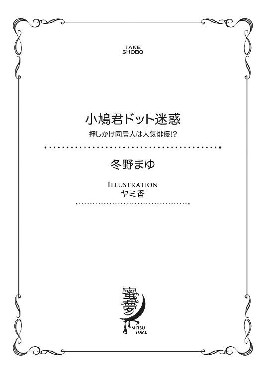
この作品は縦書きでレイアウトされています。
また、ご覧になる機種により、表示の差異が認められることがあります。
一部の漢字が簡略字で表示されていることがあります。
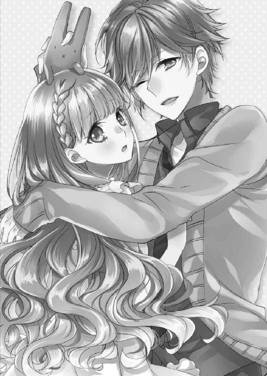
イラスト／ヤミ香
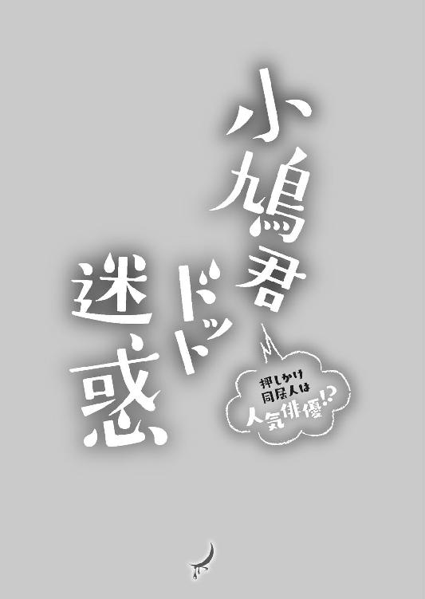
プロローグ ブレスレットの約束
ホテルのシーツは、糊が効き過ぎていて落ち着かない。
笹原乃亜は、腰を下ろしたばかりのベッドからすぐに立ち上がり、カーテンが閉じられた窓に視線を向けると、そこに歩み寄った。
カーテンを開くと、夜の闇で鏡状になっている窓ガラスに映る自分と目が合った。
いつもと違うシャンプーで洗った髪は、乾いている時よりも癖が目立つ。
「......」
乃亜は、不満気に長い髪を指に絡めると、強く引っ張ってみた。
それにあらためて観察すると、湯上りにバスローブを羽織っただけという自分の姿も、無防備過ぎて落ち着かない。
──馴れてない場所って苦手。でも......。
乃亜は、今の落ち浮かない気持ちにそう理由付けし、額を窓ガラスに当てて外に目を凝らした。
「空港が近くてガラスが厚いから外が見えにくいだろ？」
背後からの声に振り向くと、腰にバスタオルを巻いただけの正樹と目が合った。
学生時代ラグビーで体を鍛えた正樹は、社会人になった今でも引き締まった体をしている。本人に言わせれば随分筋肉が落ちたらしいけど、その頃の彼を知らない乃亜には、今以上に引き締まった体をしている彼を上手く想像することが出来ない。
「うん」
「それに、この部屋から飛行機は見えないよ」
「そうなんだ」
あからさまにガッカリした様子の乃亜を見て小さく笑い、正樹がベッドに腰を下ろす。
「それに飛行機なら、明日、もっと近くで見れるだろ？ そのために今日はこのホテルに泊まることにしたんだから」
「明日、もっと近くで飛行機を見られるのはわかってます。でも別に、飛行機を見るためにこの部屋に泊まっているわけじゃありません」
明日の早い便でアメリカに向かう正樹を見送るため、今日は一緒に空港近くのホテルに泊まることにした。明日になれば空港でいくらでも見られる。
「そんなことを言いながら、夜の闇に浮かぶ飛行機が見たかったくせに」
「否定はしませんけど。子供扱いしないでください」
乃亜は、唇を尖らせた。
それこそ子供っぽい反応だ。──そう心で笑う正樹は、乃亜へと手を差し伸べた。
「おいで」
正樹の求めに応じて、乃亜はベッドに引き返した。
乃亜が隣に腰を下ろすと、大きな正樹の手が頰を撫でた。
「しばらく会えないの、寂しいな」
正樹の胸に頰を寄せながら乃亜は呟いた。
彼の広い胸板に耳を寄せて、規則正しく響く胸の鼓動を聞いているのが好きだ。乃亜は、それがしばらくは聞けなくなることを惜しむように、正樹の鼓動に耳を澄ませた。
「俺がいない間、浮気するなよ」
「......」
するわけないでしょ。
そんな思いを込めて見上げると、正樹は「ごめん。冗談」と、短い口付けをした。
「乃亜を信じているよ」
「うん。......ぁっ」
正樹は、乃亜の肩を引いてべッドに押し倒すと、そのまま覆いかぶさり、さっきよりも濃厚な口づけをしてくる。
乃亜の下顎を押さえて唇を開かせると、そのまま舌を乃亜の口内へと侵入させる。
入り込んでくるぬるりとした感触に、乃亜の体が緊張する。
一瞬、ピクリと痙攣した舌に、正樹の舌が絡み付く。
「はぁ............っふぅ............」
乃亜は、息も出来ないほど激しい口付けに戸惑いながらも、たどたどしく正樹の舌に自分のそれを絡める。
「んふ、............んぅっ」
正樹は乃亜の舌を、強く吸いながら舌で愛撫していく。その艶めかしい動きに、乃亜が苦しげに喉を鳴らした。
濃密な口付けに満足した正樹は、乃亜の唇を解放すると、唾液に潤んだ唇を華奢な彼女の首筋へと這わせる。
首筋を甘嚙みされると、頰に生乾きの正樹の髪が触れた。一気に火照っていく頰に、正樹の濡れた髪が心地よい。
「正樹さん......。なんだか......いつもと違う」
耳に触れる吐息にも、正樹の感情の昂ぶりが滲み出ている。
いつもと違うなにかを感じて戸惑う乃亜に、正樹は短く口付けをして囁く。
「安心したいんだよ」
「どういうこと？」
「しばらく会えないから、乃亜が僕のものだって確認しておきたいんだ」
そう断言する正樹に耳朶を舐められると、クチュリと湿った音が鼓膜を擽る。
なまめかしい水音が堪らないと乃亜は首をすくめた。でも正樹は彼女の両肩を押さえてさらに激しく聴覚を刺激してくる。
クチュクチュ、わざと音を立てて乃亜の耳を味わう正樹は、肩を摑む手をゆっくりと動かして、乃亜が着ているバスローブの前を開き、彼女の体を露わにしていく。
「私は、正樹さんのものだよ」
いつもより荒い正樹を、乃亜が牽制する。
でもそんな言葉だけでは満足できないといった様子で、正樹は、乃亜の首筋を強く嚙んだ。「ぁっ............」
不意打ちの痛みに声が漏れる。
そんな乃亜の顔を、正樹が覗き込む。
「本気でそう思っているなら、安心させて」
「どうしたらいい？」
どうすれば彼が満足してくれるのかわからない。微かに首を傾げる乃亜に、正樹が「こうやって、俺の存在を素直に感じていればいいよ」と、返す。
そして再び乃亜の肌を、舌で嬲り始める。
乃亜の肌を這う舌はゆっくりと首筋へ向かい、胸の膨らみに辿り着く。
正樹は両手で乃亜の胸を体の中央へと押し上げながら、その双方を舌で嬲る。ねっとりと動くその感触が堪らない。
「やぁっ、くすぐったい」
乃亜が、筋肉質な正樹の胸を押してささやかな抵抗を示した。すると正樹は、それをたしなめるように乃亜の柔肌に前歯を立てる。
チクリとした痛みを感じ、乃亜が肩を跳ねさせる。
「駄目だよ。今日は俺が安心するまで解放しない」
そう言って正樹が乃亜の胸に口付けをする。
「っあ！」
チリチリした痛みを伴うほど強く乳房を吸われ、乃亜は小さく喉を鳴らした。
「乃亜......愛してるよ」
正樹が唇を離すと、吸われた場所に朱色の濃い花びらのような痣ができていた。
「私も愛しています」
普段の正樹なら、キスマークをつけたりしない。正樹の不安を察して、乃亜は、優しく囁いた。
「でも、俺の方が、乃亜をもっと愛しているよ」
そう言って、正樹は乃亜の胸に顔を寄せ、さっきからの刺激で硬くなっていた胸の先端を口に含んだ。
「............ぁっ」
硬く敏感になっている胸の先端を荒々しく舌で嬲られ、柔らかな胸の膨らみを揉みしだかれる。乃亜は、その刺激に足をバタつかせた。
上に覆いかぶさる正樹の重みで体が自由に動かせない状態では、踵が糊のきいたシーツの上を滑るだけで、正樹の与える刺激から逃れることはできない。
胸の先端を舌で抑えられたり、撫でられたり、引っ張るように強く吸われたりすると、胸だけじゃなく、体全体が熱く火照ってくる。
「ぁ......ぁあっ......正樹さ......んっ！ 恥ずかしい」
「まだ満足できない」
乃亜の恥じらいを楽しむように、正樹はことさら大きな音を立てて乃亜の乳房を吸いたてる。
チリチリとした痛みが走る度に、桜色のキスマークが、乃亜の肌に増えていく。
そして強く吸われてヒリヒリする肌を慰めるように、正樹は、自分が付けたキスマークの跡に舌を這わせる。
ざらつく唇の感触と、荒々しく胸を揉む指使いから彼の興奮を感じることができる。
「正樹さん......」
少し首を動かすと、彼の十本の指の動きに合わせて、彼の思うがままに形を変える自分の胸が視界に入る。
桜色の痣を舌でなぞっていた正樹は、乃亜の視線を感じて小さく笑うと、指の間からこぼれ出ている乳首を口に含んだ。
「あぁ............。──はぁっ」
硬く尖っていた乳首を舌で転がされると、乃亜の全身が甘ったるい快楽に包み込まれる。
その刺激に乃亜が甘い息を吐くと、正樹がさらにじっくりと、乃亜の乳首を責めたてた。
硬く敏感になっているその場所を、薄い前歯で捕らえられる。それだけでもムズムズとした痺れを感じてしまうのに、さっきと同じように強く吸われると、蕩けそうな痺れが駆け抜ける。
「正樹さん、駄目......」
自分の奥で熱く疼くものを感じて、乃亜が訴える。
「駄目じゃない。もっと素直に感じるんだ」
正樹の右手が、乃亜の下肢へと下がっていく。
その手の動きに乃亜は、一瞬、体をビクッと跳ねさせた。
正樹は、乃亜を宥めるように右手で内ももを優しく撫でる。
一瞬驚いて身体を硬くした乃亜は、正樹の手の感触に体の力を抜いた。すると彼の長い指が、乃亜の下着の隙間に潜り込んでくる。
「ぁあっ.........正樹さ......んっ！」
肌と下着の隙間を窮屈そうに動く指が、乃亜の蜜口を撫でる。
ぬるりとした潤いに滑る指の感触が肌をつたう。乃亜は、いつもより敏感に反応している自分の体に戸惑いの息を漏らした。
恥ずかしくて正樹の手首を摑んだが、正樹はそんな些細な抵抗を気にする様子もなく、指を上下にゆっくりと動かしていく。
筆で肌を撫でるような、優しくゆっくりとした正樹の指の動きに、乃亜が熱い息を吐く。
「はぁっ............やぁ............ぁっ」
足を閉じようとする乃亜の動きを、正樹の足が挟み込んで封じた。
「悪い子だ」
正樹は右手の指で乃亜の蜜口を刺激しながら、再び胸を弄び始める。
強く弱く、指にこめる力に変化を付けながら、正樹が乃亜の胸を揉みしだく。時に痛みを感じるほどの刺激が、乃亜の体を熱く刺激する。
「あっ！ 正樹さん.........」
「乃亜、愛している」
乱暴に乃亜の胸を堪能していた正樹が不意に腕をついて、乃亜との間に距離を作り、彼女を見下ろす。
幾つものキスマークの花びらが散った白い肌を、正樹が見つめる。露わになっている肌をくまなく観察されると、視線で犯されていくような感じがする。
射るような視線に恥ずかしさを覚えた乃亜は、体を捻って胸を隠そうとしたけれど、正樹の手がそれを阻んだ。
「恥ずかしいから.........見ないで」
乃亜の願いに、正樹は首を横に振る。
「駄目だよ。恥ずかしがらないで。俺しか知らない乃亜の姿を、ちゃんと記憶させて」
「............」
恥ずかしさに、乃亜の体の奥が熱く疼いた。正樹は、そんな乃亜の羞恥心を見透かしたように小さく笑う。
「それにいつもより興奮しているのは、俺だけじゃないみたいだし」
その言葉に、乃亜が顔を熱くする。
「だって............正樹さんがいつもと違うから......」
どこか言い訳じみた乃亜の言葉に、正樹がまた小さく笑う。
「そうか。俺のせいか」
「............」
そう言われてしまうと、どう返せばいいかわからなくなる。
不意に上半身を起した正樹は、困って黙り込む乃亜の顔を覗き込む。そして悪戯な笑みを浮かべてこう続ける。
「じゃあ俺が興奮すればするほど、乃亜もいやらしくなるんだ」
「──っ！」
さらに顔を赤くする乃亜の反応を確かめて、正樹が「いいことを聞いた」と、彼女の左右の足首を摑んだ。
「っあっ！ 駄目っ」
正樹は両手で乃亜の股を押し広げた。
そして乃亜の制止を受け入れることなく、押し開いた乃亜の足の付け根へと唇を寄せる。
ぺちゃりと淫靡な水音を立てて、正樹の舌が乃亜の媚肉を撫でた。そのぬるりとした感覚に、乃亜は背中を弓なりに反らせた。
マットレスを蹴って正樹との距離を作ろうとしたけれど、足首を摑まれているので、うまく力が入らない。
乃亜の足首をしっかりと摑んだまま、正樹はにじみ出す乃亜の愛蜜を啜る。
「あぁ......はぁ............やあっ............ッ」
媚肉の襞を舌で押し広げて、唇が蜜壺に触れる。
その刺激に、乃亜はたまらず自分の手を嚙んだ。
正樹は苦しげにもがく乃亜の反応を楽しむように、さらにねっとりと舌を這わせる。
くちゅくちゅと愛蜜を搔き出すように舌を動かしていた正樹は、不意にその標的を熱く尖った肉芽へと移す。
熱く膨れた肉芽を舌で撫でられると、それだけで激しい痺れが乃亜を貫いた。
「あぁっ──っ！」
乃亜が体を痙攣させても、正樹が解放してくれる気配はない。それどころか、敏感になっている肉芽を口に含んで舌で嬲る。
痛いほど吸われながら舌で肉芽を嬲られると、下半身が溶けてしまいそうな快楽に襲われる。
「はぁつあぁっ──はぁっ！」
絶頂を極めた乃亜が、甘い悲鳴を部屋に響かせた。
体を小刻みに震わせる乃亜を、やっと正樹が解放した。
「感じた？ 乃亜のここ凄く濡れている」
そう言いながら指を動かされると、絶頂を極めたばかりの肌が切なく疼く。
「......」
恥ずかしそうに視線を落とす乃亜の顎を、正樹が押し上げて問い掛ける。
「もう満足？」
「............」
絶頂を極めたばかりの下半身が、さらに淫らな刺激を求めて疼く。
それでも言葉でねだるのが恥ずかしい。乃亜が黙って見上げていると、正樹は、その全てを見通しているといった様子で乃亜の額に短い口付けをし、乃亜の顎に触れていた手を乃亜の下半身へと移動させていく。
そして指で乃亜の蜜壺を刺激する。
「あぁぁぁ.........それだけじゃ............」
「物足りない？」
「.........うん」
熱に潤んだ眼差しで乃亜が頷くと、避妊具を装着した正樹は乃亜の股を押し広げ自分の腰を近づけてくる。
固く膨張した正樹の肉竿が肉襞に触れるだけで、膣壁がビクビクと収縮する。
その刺激に思わず息を吐くと、収縮する蜜壺へ、正樹が乱暴に腰を沈めてくる。
「あぁぁっっ！ イヤ、駄目......」
自分の内側を摩擦する淫らな刺激に、悲鳴にも似た嬌声を上げる。
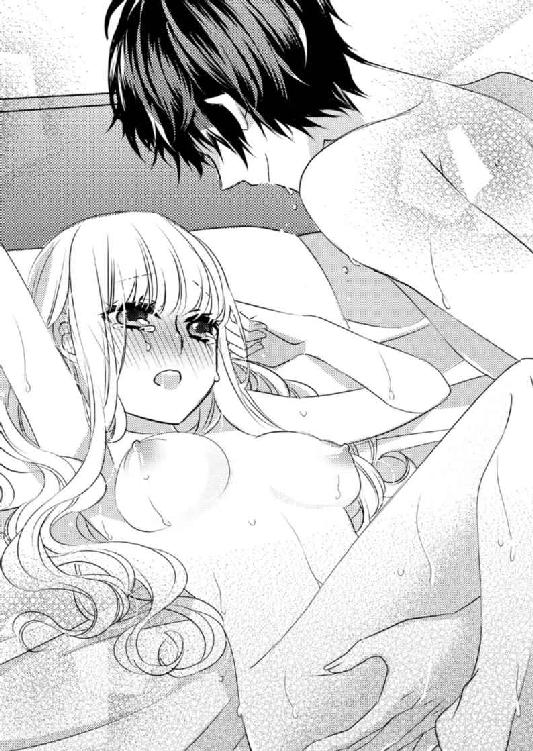
その声に煽られたのか、正樹は一度深く沈めた腰を、途中まで抜き出し、すぐにまた深く沈めてくる。
その刺激が堪らない。
苦しげに目を瞑る乃亜の名前を正樹が呼ぶ。
「乃亜、駄目だよ。ちゃんと俺を見るんだ」
「............」
その言葉に目を開くと、悶える自分を見つめる正樹と目が合った。
その眼差しが恥ずかしい。乃亜が再び瞼を伏せようとすると、正樹が「駄目だよ」と、制してくる。
「............やぁっ」
「そんな顔をしても駄目だ。ちゃんと俺を見て、イク顔を俺に見せて」
そうやって視線の自由を奪われると、羞恥心で体がより敏感になってしまう。
媚肉の襞を擦る摩擦が堪らない。
乃亜が苦しげに眉を寄せると、正樹がさらに激しく腰を打ちつけてくる。
「......あっ......あぁあっ」
「乃亜......僕だけを見て」
「あうぅ......くぅっ！ あっ！ もうダメっ！」
腰を打ちつけられ、熱く痺れる感覚に霞む視界の先で、乃亜と正樹の視線が絡んだ。
激しい快楽に悶える自分の顔を正樹が見ていると思うと恥ずかしさで、気が変になってしまいそうになる。
それでも正樹を求める気持ちが止められない。
「正樹さん............」
「もういきそう？」
ビクビクと痙攣する膣壁の動きを感じた正樹が問いかけてくる。
「............」
乃亜が小さく頷くと「じゃあ、ちゃんと俺を見てイクんだ」と、念を押される。
──意地悪......。
そうなじりたい思いもあるが、彼を求める思いが先に立って、言葉が出てこない。
「あぁっ──っ！」
切ない息を吐いて乃亜が背中を弓なりに反らせる。
正樹は、そんな彼女の反応に煽られたようにさらに激しく腰を動かしていく。
「あっ、やだ......駄目っ」
乃亜は腰を激しく揺すられながら、声を震わせ訴えた。
正樹はそんな乃亜の声を気にすることなく、さらに激しく抽送運動を繰り返す。
「くっ」
小さな呻き声と共に、限界まで膨張していた正樹の肉棒が爆ぜた。
自分の中に流れ込む正樹の熱に、乃亜が喉を震わせた。そして自分の上に倒れ込む正樹の背中に腕を回して受け止める。
「愛している」
「私も」
頷く乃亜の声に、正樹が嬉しそうに息を吐いた。
「知っていた？ 俺はずっと、いつか乃亜を失う気がしているんだよ」
「？」
セックスの後特有の微睡みに身を任せていた乃亜は、その言葉に重い瞼を押し上げた。
「だって乃亜は、いつもどこか他人行儀で、感情の深い場所を見せないだろ？ 俺たち付き合って数年経つのに、喧嘩したこともない。それって、乃亜が俺に遠慮しているからだと思う」
「それは、正樹さんが優しいからです」
喧嘩したことのない理由をそう説明する乃亜に、正樹が「優しくしないと逃げられそうで怖いんだよ」と、乾いた声で笑う。
「正樹さんを失って困るのは、私の方です。私が一番大変な時期を支えてくれたのは正樹さんだから」
──もう貴方しか、頼れる人がいない。
言葉にならない乃亜の気持ちを察して、正樹が「だからだよ」と、息を吐く。
「生まれたばかりのヒナが最初に見たものを親と錯覚するみたいに、大変だった頃に優しくした俺を好きだと、錯覚しているだけなんじゃないだろうかって気がしているんだ」
「そんな......」
正樹が自分のことをそんなふうに思っていたなんて、想像もしていなかった。
「だから今日は、ちょっと意地悪してみたかった」
さっきの激しいセックスの理由をそう説明して、正樹は乃亜のおでこに口付けをした。
その後、湿った互いの唇が重なると、どちらからともなく「愛している」と、唇を動かした。
そして正樹はベッドを抜け出し、自分のスーツケースを開けると、なにかを手に戻ってきた。
「乃亜、これを受け取って」
そう言って正樹が、ベッドに横たわったまま休んでいた乃亜の手に、水色の箱を乗せた。
「これは？」
白いリボンが掛けられた水色の箱は、たいしてアクセサリーなどに興味のない乃亜でも知っている有名なジュエリーブランドのものだ。
「プレゼント」
開けてみて。と、正樹の視線が促すので、乃亜は、白いリボンを解いて箱を開けた。
「わぁ......可愛い。ブレスレット？」
「うん。前に、仕事中、指輪はしたくないって言っていたから」
そう肩をすくめた正樹は、ブレスレットを、箱から取り出した。
シンプルなプラチナのチェーンには、細長くカットされた四粒のダイヤで花の形をあしらったチャームがぶら下がっている。
正樹は、それを乃亜の左手首に巻いた。
「綺麗.........」
「俺がいない間も、俺の存在を感じていて」
強く握った左手首に、正樹は口付けをした。
「ブレスレットなんかなくても、大丈夫なのに」
正樹がなにをそんなに不安がっているのか理解できない。乃亜は、それでも左手首を飾るブレスレットと正樹を交互に見て「ありがとう」と、微笑んだ。
１．ブレスレットと指輪
──本当は、このまま乃亜を連れて行ければいいのに。
松永デザイン企画部の自分のデスクで資料を眺めていた乃亜は、不意に脳裏に蘇る正樹の声に、顔をあげた。
部署ごとにデスクを集めて低めのパーティションで区切られているオフィスを見渡すと、どこも月曜日の朝独特の活気に満ちている。
「......」
乃亜は、自分の胸元を確認した。
長期海外出張に出かける正樹を見送ってから、もう一ヶ月。正樹が体に付けた痣は、とっくに肌から消えているのに、強く抱きしめられた感触はまだ肌に残っていて、ふとした拍子に蘇ってくる。
──仕事しよう。
乃亜は、いつになく激しかった正樹との行為の記憶に自然と熱くなった頰を軽く叩いて気持ちを引き締めた。
そしてそのまま目を細めて視界をぼかし、慌ただしいオフィス内の光景と自分を切り離す。
このお店のオーナーは、誰になにを伝えたいのか。自分なら、どんな言葉に心を擽られるのか、そんなことを考えながら、自分の中の言葉を紡ぐ。
──ああ......そうだ。
乃亜は口角を上げて小さく笑うと、自分の中に浮かんだ言葉を記録しようと、素早くパソコンのキーを叩こうとした。
「小糸さん、これどこの？」
そう言いながら、誰かが乃亜の手首を摑んだ。
不意の刺激に、乃亜の中に浮かんでいた言葉が、霧のように形を失って消えていく。
「......」
顔を上げると、先輩の中井マリと目が合った。
「ねえ？ どこの？」
マリは、興味津々といった様子で乃亜の手首を捻りながらブレスレットを観察している。
「これ、前からつけてた？」
「えっと......」
乃亜は、形を失ってしまった言葉を惜しみながら、白く細い自分の手首に視線を落とした。
正樹から「離れている間も、俺のことを忘れるなよ」という言葉と共に贈られたブレスレットは、その言葉どおり、目にする度に、乃亜に正樹の存在を再確認させる役割を果たしている。
「ねえこれ、あそこのブランドの新作じゃないの？」
マリは、アメリカの老舗ジュエリーブランドの名前を口にする。
「はい」
乃亜が認めると、マリが、わざとらしいほど大げさな声をあげた。
「え～！ いいなぁ。幾らだったの？ 誰からのプレゼント？」
「恋人からのプレゼントです。プレゼントだから、値段は知りません」
噓をつくようなことではない。そう思う反面、仲がいいというわけでもないマリにプライベートなことを話すことには躊躇いがある。
マリは、そんな乃亜の気持ちを察する様子もなく「いいなぁ～」を繰り返す。
乃亜が摑まれたままになっている左手を窮屈そうに動かすと、やっと手首を開放してくれた。
乃亜が解放された手首をそっと右手で包むと、マリが「でも......」と、どこか意地の悪い笑みを浮かべる。
「指輪じゃないんだね」
可哀想。と、マリの口が声なく動く。
「え？」
「普通なら、恋人にはブレスレットじゃなくて指輪を贈るじゃない」
「はあ......」
「男の人だって、普通なら恋人には指輪を贈りたいものよ。......ああ。でもみんな、指輪は、本気で好きな子にしか贈りたくないのかもね」
「......」
普通なら。──それはマリの口癖だ。
自分の意見が一般論だから、自分の意見が正しい。暗にそう主張してくるマリに、どう返せばいいかわからない。
きっとマリは、乃亜が正樹は指輪を贈りたいと言ったのを断ったと話せば、「普通ならありえない」と騒ぐだけで、その考えを理解しないだろう。
乃亜としては、たとえ恋人からの贈り物でも、未婚者が職場で指輪をすることに抵抗がある。わざわざ周囲にプライベートを報告する必要はないし、指輪にあしらわれた宝石がサンプルとして預かっている商品に傷でもつけてしまったら一大事だ。
それを理解してくれた正樹が、常に身に着けておけるシンプルなブレスレットを選んだだけの話なのだが。
「私なら、恋人には絶対指輪を買わせるわ。それに今度買ってもらうときは、そうね......プティ・コロンブ......小鳩君の指輪を買ってもらうつもり」
乃亜とは違い、恋人の有無からデートコースまで周囲への告知を欠かさないマリがそう断言する。最近恋人と別れたばかりの彼女は、もう新しい恋人に買わせる指輪を決めているらしい。
──この前まで、失恋したって騒いでいたのに。もう前の彼氏さんに未練がないのかな？
二十二歳の今日まで、正樹以外の人と付き合ったことのない乃亜には、その切り替えの早さが理解できない。
「だって小鳩君のデザインって、可愛くて私好みなんだもん。それに小鳩君自身も可愛くて私好みだし。この前発表された冬の新作見た？ モデルのアミが着けていたあれ。......え？ 見てないの？ ありえない。だって普通なら......」
マリは、乃亜のそんな疑問に気付くことなく、自分が憧れているモデルが着けていた新作ジュエリーについて熱く語る。
──この無駄話、いつになったら終わるの？
視線を自分のデスクに向けると、ガラス製の食器や置物の写真と、今回の企画のコンセプトなどが書きとめられたメモが視界に入る。
早く仕事を再開したい。──乃亜が内心悶々としていると、乃亜の願いが届いたかのように、経理部の渡辺がマリを呼ぶ。
「おい中井。先月の交際費の領収書まとめたのか？」
「やばい！」
マリは肩をすくめると、話を切り上げ自分のデスクへと戻っていった。
「......」
ホッと息を吐くと、隣のデスクの前田希一が「お疲れ」と、乃亜に声をかけてくる。
「相変わらず、絡まれているな」
その言葉に、乃亜が黙って頷く。
希一に言わせると、短大卒で事務職をしているマリは、同じく短大卒の乃亜が企画部にいることが納得できなくて、ことあるごとに乃亜に絡んでくるのだという。
だから希一は、男性社員である自分が助け船を出すと、マリのようなタイプは一段と気持ちがエスカレートするので、傍観者を決めさせてもらうことにすると、宣言している。
その推測がどこまで正しいかはわからないが、乃亜も、希一が口を挟めばマリが今以上に絡んできそうな気はしている。だから希一に助けを求めたことはない。
「なんの会社？」
希一は、乃亜のデスクに広げてある資料を見て言った。
「蓼科にあるガラス工芸品のお店。自分で作れる一日体験工房もあるそうです」
乃亜は、写真を一枚手に取って、希一に渡した。
写真には、トンボ玉と呼ばれている、ガラス製の色とりどりのビーズが幾つも写っている。
「ふ～ん。女の子が好きそうだな」
希一は、受け取った写真を持て余すようにヒラヒラとさせながら唸った。
乃亜が勤務する松永デザイン事務所は、主に企業の宣伝用のパンフレットやカタログ、ポスターを制作している。
一言に企業といっても、製造業から飲食業まで、依頼主の職種によって扱う商品の規模も売り込みたいポイントも違ってくる。扱う商品の長所を見極め、その長所を際立たせる写真やイラストを選び、それに合わせたコピーを考えるのが乃亜や希一の仕事の大きな部分を占めている。
同じ企画部でも、理工学部出身の希一は、主に製造業の依頼を担当して、乃亜は飲食業や雑貨屋のような若い女性をターゲットとしている企業からの依頼を任されることが多い。
「興味ないですか？」
乃亜は、希一に尋ねる。
背が高くヒョロヒョロの体型で眼鏡をかけている希一は、見るからに理系オタクといった感じで、本人もそれを自負している。
希一は、困ったような表情で写真を眺めた。
「女子的には、面白いんだろうな」
会話を広げられなくて申し訳ないとでも言いたげな希一は、写真を返すと自分のデスクに向き直った。
「女子的には、可愛くていいですよ」
「そうか」
希一は乃亜の言葉に呟きを返し、眼鏡を押し上げて電卓を叩きはじめた。
希一が愛用しているやたらボタンの多い電卓は、関数電卓と呼ばれていて、工業系の人の必需品だということを乃亜は就職してから知った。
パンフレットに記載する歯車の抵抗に関する数値が合っているか再確認しているらしい。
乃亜は希一がマリにからまれた自分を気遣って話しかけてくれたのだと承知している。その気遣いに感謝して、乃亜も気持ちを切り替えてデスクに向かった。
◇ ◇ ◇
夕方、仕事を終えた乃亜は、松永デザインの入っている雑居ビルを出ると、大きく伸びをした。
そのついでに深呼吸すると、十一月の冷えた空気が肺の奥まで染み込んでくる。
秋と呼ぶには寒過ぎるけれど、冬と呼ぶにはまだ早い。この時期の空気は、地元の長野を思い出させる。
長く帰っていないし、あまり帰りたいとも思わない地元に、どうして郷愁を抱くのか自分でもよくわからない。
──正樹さんがいないせいかな。
乃亜は、自分の中に疼く寂しさをそう理由付けし、薄手のコートに首をすくめ歩き出した。
──気分転換に寄り道をして帰ろう。
寄り道といっても、乃亜がひとりで寄り道するのは、雑貨屋か本屋と決まっている。
店員に話しかけられると、うまく断れずに趣味に合わない服を買わされてしまったりするので、洋服はネットで買うことにしている。それにひとりで外食はしないし、わざわざ友達と誘い合って出かける趣味もないので、乃亜の行動範囲は恐ろしく狭い。
マリに「ありえない」と騒がれそうだが、読書が趣味で、小さい頃から人見知りが激しく、集団が苦手な乃亜は、無理して自分の行動範囲を広げなくとも幸せに生きていけるので、これからもこのままだろうと思う。
「本屋さんに寄って行こう」
乃亜はひとり呟き、カフェスペースもある大きな書店に向かった。
書店に着くと乃亜は、まず新刊のコーナーを確認した。
好きな作家の新作が平積みされているのを見つけて迷わず手を伸ばす。心地よい紙の重みに自然と笑みを浮かべてしまう。
でもすぐに、手にした本の隣に積まれていた本の存在に気付き、その表情を硬くする。
『第三十八回淡海文学賞・大賞受賞作』──本の帯に書かれた言葉に、乃亜は苦しそうに固唾を飲む。
──今年も決まったんだ。
淡海文学賞とは、正樹が勤めている淡海出版社で毎年開催されている新人向けの文学賞で、プロアマは問わないが二十代までという応募条件があり、多くの若手人気作家を誕生させてきた有名な賞だ。
大賞受賞作は書籍化され、その後映画化された作品も数多くあって、新人作家の登竜門と評されている。
知り合った頃の正樹は文芸部に所属していて淡海文学賞の受賞作を担当したりしていたけれど、今年の四月から海外書籍部門に異動したので、今年は受賞者が発表されたことにも全く気付かずにいた。
それまでは正樹が言葉にしなくとも、忙しそうな姿を見て自然と気付かされていたのに。
──どんな話なのかな？
帯に書かれている「期待の新人」や「十代の瑞々しい感情を素直に表現した作品」といった言葉に視線を走らせた乃亜は、一瞬、本に手を伸ばしかけてすぐに引っ込めた。
体の奥から、黒い泥のような不安感が溢れてくる。乃亜は、そんな思いを振り払うように積み上げられた本に背を向けた。
別のコーナーを物色し数冊の本を選んだ乃亜は、雑誌コーナーの前を通ってレジに向かいかけて、ふと気になる男性の笑顔に足を止めた。
水に濡れた明るい色の髪を搔き上げている青年が、若い女性向けの雑誌の表紙から妖艶な視線を乃亜に向けている。
キメの細かそうな肌や二重の目に鼻筋が通った彫りの深い顔立ちは、女性の乃亜よりも、ずっと女性的で美しい。
会社でマリが話していた、小鳩葉汰その人だ。
「確か、この人が小鳩さんだよね」
表紙を飾る青年の名前を口にしながら、雑誌を手に取った。
恋人との相性診断に、一週間の着回し術といった、乃亜には興味がない記事が組まれている雑誌の特集テーマは「抱かれたい男性第一位の小鳩葉汰が語る『愛され女子』の法則」だそうだ。
そしてインタビュー記事と一緒に、どことなくセクシーな感じのするポーズを決めている青年の写真が掲載されている。
彼、小鳩葉汰は最近人気急上昇中の若手俳優で、芸術の才能もあるらしく、俳優をやる傍ら自らデザインしたジュエリーを販売するオリジナルブランド、プティ・コロンブのオーナーも務めている。
小鳩のデザインするジュエリーが若い女子に人気があるのは、その手の情報に疎い乃亜でもなんとなくは知っている。
──中井さん、こういう人がタイプなのかな？
端正な顔立ちの小鳩は綺麗すぎて、別世界の生き物のように思えてしまう。子供の頃から一度もアイドルに熱狂したことのない乃亜には、彼にときめく感覚がどうにもピンとこない。
「まあ、趣味は人それぞれだしね」
乃亜は、雑誌を元の場所に戻しレジに向かった。
レジで精算を待つ間、自宅のパソコンに打ち込む最初の文字を考える。
真っ白な画面に現れる最初の単語、そしてそれに続く単語。
点と点を線で繋ぐように、自分の中から紡いだ単語と単語を繋げて文章を作る。その文章が繋がって物語ができていく。真っ白だったパソコン画面の中に、小さな世界が生まれる。
できの良し悪しは別として、昔の乃亜は、自分だけの物語を作るのが好きだった。それには、本を読むのとは違った楽しみがあった。
「......ハァ」
乃亜は、不意に押し寄せる圧迫感に胸を押さえた。
いつものが来た。──乃亜は諦め気味にその感覚を受け止め、ゆっくり呼吸を繰り返し、不安の波が過ぎていくのを待つ。
胸を押さえる左手首に視線を落とすと、銀色のブレスレットが目についた。
昔は物語を書くことが楽しくてしょうがなかったのに、ある時期を境に、それは歩みを進めるごとに足を取られる沼地を這うような苦しい作業になっていた。
それでも物語を書きたいと思うのは、乃亜にとってそれが、正樹へのひとつの愛情表現なのだから。
君の才能を信じている。──そう励ましてくれた正樹の言葉を噓にしたくない。
２．お久しぶりの小鳩です
次の日、乃亜が出社すると、待ち構えていたようにマリが駆け寄ってきた。
「ねえ、誰が小鳩君を担当するの？」
「？」
朝の挨拶もなく投げかけられた言葉の意味が分からない。
思わず先に出社していた希一を見たが、肩をすくめて返すだけで情報の補足はない。そんな二人のやり取りを見て、マリが「もう、焦らさないでよ」と、二人を睨んだ。
「ごめんなさい。本当に意味がわからないんです」
謝る乃亜に、マリはがっかりした様子でため息を吐いた。そしてすぐに、得意げな笑みを浮かべる。
「知らないなら、しょうがないから教えてあげる。ウチの会社に小鳩君のプティ・コロンブの商品カタログの制作の依頼があったらしいのよ」
「へ～、初耳」
「本当ですか？」
声を揃えて驚く二人を、マリは「情報が遅れているわね」と鼻先で笑う。
──どうして企画部の私たちより、事務の中井さんに先に情報が行くのかな？
乃亜と希一の情報収集能力に難があるのか、マリの情報収集能力が異常に高いのか......。
乃亜が首を傾げていると、社長室のドアが開いて、社長の松永貴斗が顔を覗かせた。
まだ三十二歳の若さで松永デザインの社長を務めている貴斗の姿に、マリが素早く愛想笑いを浮かべた。
希一のことは「眼鏡男子はダサイ」と、いまいち男として認識していないのに、同じ眼鏡男子でも、背が高くがっちりした体形の貴斗は男ととらえているらしい。
「ああ、小糸。出社したか」
「おはようございます」
会社に泊まって、今起きたのだろうか。
少し崩れたオールバックの髪を搔き上げ整える貴斗は、どこか間の抜けた声を出しながら乃亜を指さす。
「今から出る。同行しろ」
貴斗は、そう言い残して一度社長室に引き返した。そして身支度を済ませて戻ってくると、そのまま足早に、出入り口に向かう。
慌ててその背中を追いかける乃亜の背後で、マリが「え？ どこ行くの？ もしかして小鳩君？」と問いかけられたけれど、乃亜にだってわからないのだから答えようがなかった。
「青山まで」
表通りに出て拾ったタクシーに乗り込み、やっと質問できた乃亜は、息苦しそうに深呼吸をした。
「どこに行くんですか？」
正樹の学生時代からの友人で、乃亜とも昔からの知り合いである貴斗は、体格がよく歩くのが早い。小柄な乃亜は、置いて行かれないよう小走りで追いかけるのに必死で、質問する暇がなかった。
「なんだ乃亜ちゃん、ちょっと移動しただけで息切れしているのか？ 運動不足なんじゃないか？」
貴斗は、会社の人間がいない場所では、今でも乃亜のことを「小糸」ではなく「乃亜ちゃん」と、呼ぶ。
「貴斗さんの歩くスピードが速過ぎるんです」
乃亜も会社の人間がいないときには、癖でつい「社長」ではなく「貴斗さん」と、呼んでしまう。
呼吸が落ち着かない乃亜に恨みがましい視線を向けられ、貴斗は「足の長さが違うからな」と、ケラケラと笑った。
学生時代ラグビーをしていた貴斗は、迷いがなくパワフルな選手だったと正樹から聞いたことがある。今でも行動一つ一つがエネルギーを持て余しているように豪快だ。
二十代の時にひとりで松永デザインを起業し、数年後には従業員数二十人を超えるまでに成長させたというのも、貴斗なら納得がいく。
「で、青山の何処に行くんですか？」
貴斗は「おおそうだ」と、質問を思い出したようだ。
「小鳩って芸能人知っているか？ そいつがプティ・コロンブってジュエリーブランドを経営していて、そいつの事務所兼店舗があるんだが......」
「やっぱり」
「ん？ なにがやっぱりだ？」
思わず漏らした乃亜の呟きに、貴斗が不思議そうな顔をした。
「えっと......」
仕方なくさっきのマリのことを説明すると、貴斗は困ったように頭を搔いた。
「相変わらず情報が早いな。アイツ、俺の部屋に盗聴器でも仕掛けているんじゃないか」
「さすがに、それはないと思いますよ」
苦笑いする乃亜に、貴斗が「まあな」と頷く。
「もしそんなことしているなら、乃亜ちゃんの過去が今頃社内中に知れ渡っているだろうからな。で、もっと乃亜ちゃんに絡んでくる」
「......」
気まずそうにタクシーの運転手に視線を送る乃亜を、貴斗は「神経質になるなよ」と笑う。
「乃亜ちゃんは、別に悪いことしたわけじゃないんだから」
「でも人の死を、金儲けの道具にしました」
「それは、違うだろ。あれは......」
ねじくれた考え方だ。──そう貴斗は息を吐くが、乃亜が見せる弱気な表情に、言いかけた言葉を飲み込んだ。
そして短い沈黙の後に「大丈夫だよ」と、頷く。
「俺は正樹の親友だ。だからアイツが大事にしている乃亜ちゃんのことは、俺が責任を持って守ってやるよ。だから小さなことに怯えるな」
「ありがとうございます」
乃亜はコクリと頷き、窓の外へと視線を向けた。
そして寒くもないのに震えてしまった指先を隠すために、手を握りしめた。
乃亜の口数が少ないことに慣れている貴斗は、黙り込む乃亜に話しかけることなく、鞄から取り出した書類に目を通し始めた。
時々紙を捲る音を心地よく思いながら、乃亜は、流れていく景色を眺めていた。
外苑西通りを青山通りの手前で左折すると、信号のない交差点で、幼稚園の集団が渡るタイミングを見計らっていた。
タクシーが一時停止して道を譲ると、お揃いの茶色いスモックを着た幼い子供たちが、先生の誘導に従って、一斉に手をあげてわらわらと道を横切っていく。
──なんだか、カルガモの行進みたい。
よちよちと、どこか危なげな足取りが微笑ましく、乃亜の心を解してくれた。
神社の前でタクシーを降り、足早に歩く貴斗の背中を追いかけること五分、人通りの多い表通りを離れて、細い裏路地を何度か曲がった先、民家の間に隠れるように小鳩のプティ・コロンブはあった。
──もともとなんのお店だったのかな？
細長い二階建ての建物はかなりの年季が入っていて、古い店を改装したのだと推測できた。
磨りガラスがはめ込まれた木製のドアには「p.Colombe」と、小鳩オリジナルブランドのロゴのプレートがかけられている。ロゴの先頭にあるｐの文字を嘴でつつく小さな鳥のシルエットは、オーナーの苗字である小鳩をイメージしているのだろう。
貴斗がドアの脇にある呼び鈴を押すと、すぐにドアが開き、ドアの向こうから背の高い男がひとり顔を覗かせた。
ドアを開けた彼は貴斗と面識があるらしく、貴斗の顔を認識すると、僅かに見せていた警戒心を一瞬で消し社交的な笑顔を浮かべた。
「松永さん、お待ちしていました」
落ち着いたグレーのスーツを着た男性は、半開きだったドアを大きく開け二人を招き入れた。そして、貴斗の背中に隠れるようにしていた乃亜に気付くと、「ああ、君が......」と、穏やかに微笑んだ。
「君が？」
グレーのスーツを着た彼の呟きに、貴斗が首を傾げる。
「いえ。企画部の方が同行するとは聞いていましたが、まさかこんな小さなお嬢さんだとは思っていなかったので」
──なんだか私、子供扱いされていませんか？
乃亜はわずかにムッとしたが、その彼が見せる人のよさそうな表情に、口角を緩めた。
──なんだか......いい人そう。
目尻の皺の雰囲気からして、貴斗より少し年上なのだろう。人見知りの激しい乃亜でも思わず微笑み返してしまうほど穏やかな雰囲気を漂わせる彼は、胸ポケットから名刺入れを取り出し、その中の一枚を乃亜に差し出した。
「初めまして。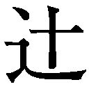浦と申します」
渡された名刺には彼が、プティ・コロンブと俳優小鳩葉汰、両方のマネージャーであることが記載されていた。
「あ、私は......」
乃亜も慌てて自分の名刺を差し出すと、受け取った浦は、二人を店の奥へと案内した。
店内は木目の腰壁と淡い水色に白のドット柄の壁紙が印象的だ。
──二十坪もないかな？ 小さくて可愛いお店。
商品を確認しやすいようにとの配慮なのだろう。照明こそ明るいものを使っているが、商品を飾るショーケースや接客用のソファーなどは、アンティークな雰囲気に溢れている。
──映画のセットみたい。
古き良き時代のフランス映画を思い出させる内装に、乃亜は顔をほころばせた。
ショーケースに収められているジュエリーも、派手というよりは繊細で可愛いものが多く、乃亜好みだ。
今まで『人気イケメン俳優』という小鳩の肩書きから、勝手にプティ・コロンブの商品は派手で好みではないだろうと思い込んでいたが、どうやらそれは一方的な思い込みだったらしい。
──眺めているだけでも、女の子を幸せな気分にしちゃう内装でいいな。
「気にいってもらえましたか？ 商品も内装も、小鳩がこだわってプロデュースしたんですよ」
せわしなく店内全体に視線を走らせる乃亜に、浦が微笑みかける。
「えっと......」
乃亜は、隣に立つ貴斗の咳払いで、自分が仕事で来ていたことを思い出した。
「オーナーの小鳩は、二階に上がって右の部屋にいますので、そのまま上がってください」
貴斗に続いて、浦にペコリと頭を下げた乃亜も階段へと向かった。
二階は事務所として使用しているのだろう。
黒い木目の腰壁と白い漆喰の壁に調度品はなく、黒光りする廊下が左右にまっすぐに伸びているだけだった。
階段の正面と、廊下の左右の先にそれぞれ一つの扉があった。
貴斗と乃亜は、浦に教えられたとおり、右の扉へと進んだ。
──こんな可愛いお店やジュエリーをプロデュースする小鳩さんて、きっと、見た目より繊細で優しい感性の持ち主なんだろうな。
可愛いものと、可愛いものを生み出す人が大好きな乃亜は、雑誌やテレビで見かける芸能人に会えることより、自分好みの可愛い世界観を作り出す人と会えることが嬉しかった。
扉をノックする貴斗の背中をワクワクしながら見ていると、二人の来訪を待ち構えていたように、すぐに「どうぞ」と、答える明るい声が聞こえた。
「失礼します」
貴斗と乃亜が部屋に入ると、窓際に立っていた細身の人影が近づいてきた。
──わあぁ、雑誌と同じ顔。
──それに、雑誌で見るイメージより背が高くて、顔が小さい。
心のどこかで架空の存在のように感じていた俳優が、自分たちの前にいる。それにはさほどミーハーではない乃亜でも、不思議な感動を覚える。
「どうも。松永デザインの松永貴斗と、弊社で企画編集を担当している小糸乃亜です」
短い握手で貴斗と挨拶を交わす小鳩は、乃亜に満面の笑顔を向ける。
「初めまして松永さん、お待ちしていました。それと乃亜ちゃん。お久しぶりの小鳩です」
──初対面で、下の名前で「ちゃん」付け。
──それに「お久しぶり」？
頰を引き攣らせる乃亜に、小鳩が困ったように笑う。
「あ、お久しぶりじゃなくて、初めましてな方向性？ 僕的には、運命の恋人に再会した気分なんだけど。じゃあ、初めましてと言うことで」
「軽ぅ」
冷ややかな貴斗の呟きに、思わず頷きそうになる。
それをどうにか踏みとどまって乃亜は、ぎこちない笑みを浮かべて会釈をした。
「あっ、もしかして、緊張している？ 名前だけじゃなくて、本人も可愛いね」
萎縮する乃亜に追い打ちをかけるように、小鳩は両手を広げて乃亜に近づいてきた。
──えっ！ えっ！
このままだと抱きしめられる。そう予測しても、気持ちが焦るだけで、どう対応すればわからない。
でも、硬直する乃亜を抱きしめる直前で、小鳩の動きが止まった。
「あれ？」
小鳩は両手を広げたまま、自分の腕を摑む貴斗を見た。
「ここは日本です。過剰すぎるスキンシップを含んだ挨拶は自肅願います」
「ケチッ」
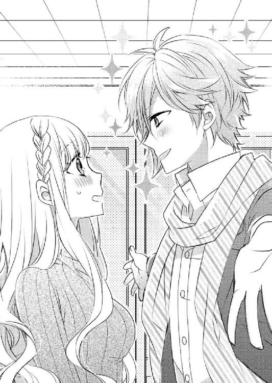
冷ややかな視線を向ける貴斗が手を離すと、小鳩は、不満げな表情で上着の乱れを直した。そしてすぐにクルリと表情も直す。
「どうぞ」
小鳩は後退りして、来客用のソファーに腰を下ろすと、二人に向かい側のソファーを勧めた。
「では......」
貴斗がソファーに腰を下ろす。それにならい乃亜が貴斗の隣に腰を下ろそうとすると、小鳩が声をかけた。
「あっ！ 乃亜ちゃん。よかったらここに座る？」
見ると、小鳩が満面の笑顔で自分の膝を叩いている。
「......」
ありえない。──そう首を横に振る乃亜は、素早く貴斗の隣に座った。
膝に鞄を抱え、口を真一文字に結ぶ乃亜を、小鳩はさして残念といった様子もなく笑う。
「遠慮しなくていいのに。僕の膝、安定感があって落ち着くって、女の子の間で評判なんだから」
その笑顔は、雑誌やテレビで見掛ける俳優小鳩葉汰そのもので、そのハチャメチャな言動とのギャップが乃亜を混乱させる。
──変な人だけど、綺麗な人だな......。
二重の目と鼻筋が通った彫りの深い中性的な顔立ちをしているせいだろうか、相手が小鳩だと、不思議といやらしい感じはしない。それでも小鳩が決して女性に見えないのは、彼が意志の強い眼差しをしているからだろう。
「......コホッ」
貴斗の咳払いに、乃亜は、自分が小鳩に見惚れていたことに気付いた。
慌てて貴斗を見ると、その乃亜の視線を追いかけて、小鳩も貴斗を見た。そして露骨に口角を下げて嫌そうな顔をする。
「僕、オジサンを膝に乗せる趣味はないんだけど......どうしてもって言うのなら」
貴斗の咳払いをどう理解したのか、小鳩は、自分の膝を叩いて貴斗に「乗ります？」と問いかける。
「乗るか！」
思わず低い声で返す貴斗に、小鳩は「よかった」と胸を撫で下ろし、再び乃亜に鮮やかな微笑みを見せて両手を広げる。
「じゃあ乃亜ちゃん、遠慮なくおいで」
「......」
「そんな迷惑そうな顔しないでよ」
変な人とはいえクライアント。どう対応すればいいのかわからない。
顔を引きつらせる乃亜に代って、貴斗がキッパリと「迷惑がっています」と、答えた。
「そう？ こんなオジサンの前じゃ、恥ずかしい？」
「オジ......」
オジサン呼ばわりされたことにムッとする貴斗を気にすることなく、小鳩は、ソファーの前のテーブルに置いてあった名刺入れから名刺を取り出し、乃亜に差し出す。
「僕のプライベートの携帯番号とアドレスはここに書いてあるから、もし僕の膝でくつろぎたくなったらいつでも連絡して。乃亜ちゃんのためなら、いつでもどこでも飛んで行って、膝枕でもなんでもしてあげるから。もちろん、それ以上のことも喜んで」
「......」
警戒心を露わにして名刺を受取ろうとしない乃亜に、小鳩は、満面の笑顔で付け加える。
「プティ・コロンブ、オーナーの小鳩葉汰です。今後よろしくお願いしますね」
そう言われてしまうと、ナンパされているのかビジネスの話をされているのかわからなくなってしまう。
乃亜が受け取るべきか悩んでいると、貴斗が人差し指と中指で挟むようにして小鳩の名刺を取り上げた。
「ご丁寧なお誘いありがとうございます。ただ幸いにも......いえあいにく、弊社の小糸が小鳩さんの膝を必要とする機会は訪れないと思います。......改めての自己紹介になりますが、私、松永デザイン社長の松永貴斗と申します」
仕事の際は自称を「私」にする貴斗は、抑揚のない口調でそう言いながら名刺入れを取り出した。そこに小鳩の名刺をしまい、自分の名刺を取り出した。
「あ！ それ女の子用の名刺」
小さく悲鳴をあげる小鳩を無視して、貴斗は、自分の名刺を差し出す。
小鳩は渋々といった様子でそれを受け取ると、乃亜に視線を向け、笑顔で手を差し出した。
「じゃあ、乃亜ちゃんの名刺を頂戴。僕の方から電話するから」
「えっと......」
判断を仰ぐように貴斗を見上げると、貴斗は「お渡ししなさい」と、頷いた。
その指示に従い差し出した乃亜の名刺を、小鳩は嬉しそうに受け取る。そんな小鳩に、貴斗が言う。
「小糸の名刺には弊社の代表番号しか記載していませんので、連絡は私を通していただいた方がスムーズかと思います。私がお渡しした名刺には、私の携帯電話の番号も書いてありますので」
えっ！ と、目を見開く小鳩の表情に、貴斗がしたり顔で「以後よろしくお願いしますね」と、付け足す。
「え！ そんな名刺、意味ないじゃん......」
小鳩は悔しそうに顔を歪めるが、すぐに気を取り直して「あ、でも乃亜ちゃんの名刺だから、記念にもらっとく」と、自分の名刺入れに収めた。
無意味に時間がかかった名刺交換が終わるタイミングを見計らったように、ドアをノックする音がして、浦が三人分の飲み物を運んできた。
「どうぞ」
そう言いながら浦が乃亜の前に置いた白いティーカップには、薔薇の形をした砂糖が添えられている。
普通のものより鮮やかで紅色が強い紅茶を観察していると、
「クジャクの紅茶、嫌い？」
と、小鳩が首を傾げた。
「──？」
「マユールティーのローズガーデンです」
浦が部屋を出ていく前に言った。だから乃亜は、その紅茶がマユールティーという、インドの国鳥である可愛らしいクジャクをマークに使っているメーカーのものなのだと気づいた。「マユールティー」とは、ヒンドゥー語で「クジャク」を意味している。
小鳩がもう一度「嫌い？」と、問いかけてきたので、首を横に振った。
「そう。よかった」
小鳩は嬉しそうに、自分のカップに手を伸ばすと、匂いを楽しんでから紅茶を口に含む。
その動作を真似るようにカップを口に運ぶと、爽やかな花の香りとほのかな甘みが、乃亜の中に染み込んでくる。
「マユールティー？」
不思議そうな顔をする貴斗に、小鳩が「紅茶のメーカーの名前です」と説明して、ニヤリと笑う。
「そんなことも知らないんですか？」
「男のくせに、女の子みたいなものがお好きなんですね」
営業用スマイルを浮かべながらも、どこか棘のある話し方をする貴斗に、小鳩が「失礼な」と、顎を上げて胸を張る。
「女の子みたいなものが好きなのではなく、女の子が好きそうなものを用意しておくのが好きなんです。紅茶のメーカーもわからないようなオジサン相手じゃ、女の子との会話を楽しめないでしょうから」
やれやれ。と、首を振る小鳩に、貴斗が荒い息を吐く。
「別に、女の子との会話を楽しみたいと思っていませんから」
「じゃあ、女の子を会話で楽しませることなく、ベッドに連れ込んで自分だけ楽しむタイプですか？ 最低ですね。これだからオジサンは......」
小鳩が挑発的な笑みを浮かべる。
──合わない。この二人、絶対に気が合わない。
隣に座る貴斗が静かにイライラしているのを肌で感じ、乃亜は遠慮がちに手を上げる。
「あの......仕事の話を......しませんか？ 打ち合わせのためにうかがったんですから......」
これ以上話していても、二人の溝が深まるだけで親睦が深まることは絶対にない。そう判断して恐る恐る口を挟むと、小鳩が嬉々とした声をあげる。
「あ、喋った。声も可愛い」
「......」
小鳩の言葉に、乃亜は顔を赤くする。
「そうですね。では、今回の依頼の内容を確認させていただきたいのですが......」
小鳩の言葉を無視して貴斗が頷く。貴斗が膝に肘を着いて身を乗り出すと、小鳩も背筋を伸ばし表情を正した。
「僕が手掛けるプティ・コロンブは、趣味の延長のようなものです。今までは、自分でデザインしたアクセサリーを、利益を考えることなく販売してきました。まあ、知る人ぞ知る......程度の規模でした。......というかもともと、仕事先で仲良くなった女の子にプレゼントしたくて作ったブランドだしね」
「ほう」
「......」
──この人、本当に女好きなんだ。
静かに呆れる乃亜の隣で、貴斗が「上手いですね」と、眼鏡のフレームを押し上げた。
「......？」
意味がわからない。──そう視線を向けると、貴斗が口角を持ち上げる。
「小鳩さんが仕事で知り合う女性......とは、メディアに出ている女性、もしくはスタイリストやマネージャーといった、メディアに出る人をプロデュースする側の女性。そういった人たちだけが愛用している知る人ぞ知るブランド、それは若い女性の憧れのアイテムになりますね」
したり顔で微笑む貴斗に、小鳩は「女の子の扱いは下手でも、頭は悪くないんですね」と、肩をすくめた。
「そうですね。あいにく、私が普段遊ぶ相手は、ただ可愛いだけの『女の子』ではなく、品格と知性のある『女性』なものですから。『女の子』の扱い方に対するノウハウは、お子様同士のお遊戯がお上手な小鳩さんには負けますね」
そう返され、小鳩が一瞬ムッとする。しかし、すぐに表情を戻して話を続ける。
「狙ったわけではないですけど、世間ではそういう扱いを受けています。そのおかげで、最近は雑誌で取り上げられる回数も増え、販売規模を拡大することになりました」
「仕事で知り合った編集関係の女性にもプレゼントを？」
「さあ......」
貴斗の問い掛けに、小鳩は否定も肯定もしない。
「なるほど。まあ、君のお遊戯相手の幼稚な女の子たちのことだ、大好きな小鳩君が自社ブランドの拡大を......となれば、競い合うようにして宣伝してくれるでしょうね」
「そして、そんな僕のブランドのパンフレットや商品カタログを手掛けた御社も、その売れ行きによってはいい宣伝材料になりますね」
「......」
「新規の営業先で、過去の実績を聞かれたとき、有名人のジュエリーブランドのカタログやパンフレットを手掛けているというのは、わかりやすい宣伝文句ですよね？」
「だから手を抜くなと？」
小鳩と貴斗は、お互いの目を見てニヤリと笑った。
「オジサン臭プンプンで、気が合わないかと思ったけど、ビジネスに関する意見だけは合いそうですね」
さらりと毒を吐く小鳩に、貴斗も「同感だ。ガキンチョ相手の仕事で、どうなるかと思ったが、いい仕事ができそうだ」と、応戦する。
──なんだか、意外に気が合うのかも......。
乃亜がホッと安堵していると、小鳩が乃亜を見た。
「乃亜ちゃん、僕は基本、女の子に優しいよ。だけど物を作るということに関しては、話は別だ。厳しいことを言うかもしれないけど、ちゃんと応えて欲しい」
「あ......もちろんです」
「では改めてよろしく」
そう手を差し出され、握手をしようと乃亜が手を伸ばしかけたとき、
「だからこれから毎日お話しするために、乃亜ちゃんの携帯番号教えてよ。ついでに住所と、好みの男性のタイプも。あと、今週末の予定も」
と、笑顔で付け足されて、乃亜は伸ばしかけた手を引っ込めた。
その代りに、貴斗が素早く小鳩の手を摑んだ。
「いや。これは我が社にとっても大きなビジネスチャンスですから、細かな打ち合わせも私を通して話を進めていただきたいと思いますので」
「痛いっ......折れるっ......折れる」
肩をねじって痛みから逃れようとする小鳩の手を、貴斗は、笑顔で握り続けている。
「重ねての自己紹介になりますけど、松永デザイン社長の松永貴斗。こう見えても学生時代はラグビーやっていました。趣味は空手とゴルフと闇討ち。よろしくね」
「こう見えてって......そのまま、そんな感じに見えてます。てっ............イテテッ......。てか、趣味が闇討ちってなに？ ......イテテッ......痛いっ」
「この程度で痛いと思うような軟弱な方が、弊社の社員にちょっかいを出す気なら、夜道は歩かないようにした方がいいですよ」
「......イテテッ......痛いっ痛いっ」
小鳩は貴斗から逃れようとして、もう片方の手でテーブルを叩いて「タイム。タイム」と、唸っている。
「ついでに言わせて頂きますと、小糸の恋人は私の学生時代からの親友。もしものときには親友プライスも加算されることをお忘れなく」
「.........痛いってっ」
そんな二人のやり取りを、乃亜は、苦笑いを浮かべて見守ることしかできなかった。
３．小鳩さん、ちょっと......
プティ・コロンブを訪問した次の日、乃亜は、自分のデスクに散乱する資料を前に小さく唸った。
「どうしたらいいかな？」
蓼科にあるガラス工芸品店。そこから依頼を受けて手掛けたパンフレットのラフを先方に確認してもらったのだが、その解答をもとに、どこを改良すべきなのか悩んでいる。
企画部の仕事は、依頼された商品の紹介文を書くだけではない。その商品のパンフレットなりカタログなりの写真や文字のレイアウトまでプロデュースして、より効果的に商品を紹介していくことが仕事に含まれている。
カタログではその商品の特徴を理解して見せ方を工夫しなくてはいけない。
小さな違和感を仕掛けて目を惹いたり、文字や写真の大きさや形をアレンジしたりするだけで、商品をアピールする効果は大きく違ってくる。
だからパンフレットやカタログの注文を受けた際、まずはクライアントのイメージを言葉で確認して、そこからデザイン画を下描きし、構図や使う言葉を決めていく。その下描き段階のものをラフと呼んでいる。
ラフを送って意見を出してもらうことで、相手の満足するデザインを探っていくのだが、このラフのチェックを繰り返している間に、クライアントの言っていることが最初と違ってくることは珍しくない。
なんでそんなに言っていることがコロコロ変わるんですか！ ──そう叫びたくなる人もいるが、おおかたのクライアントは、ラフを目にすることで彼ら自身も曖昧だったイメージが具体的な形を結んでいくことがほとんどなので、この作業を怠ってはいけない。
今回のクライアントは、おおむね乃亜のデザインで満足してくれたのだが、幾つか改善して欲しいとの要望ももらっていた。
──男性客を惹きつける魅力に欠けている気がする......。
新たなラフを作るために資料の整理をして、クライアントから出てきた要望を心の中で復唱しながら、返されたラフに視線を向ける。
トンボ玉の手作り体験や、古民家を改造したお店の雰囲気などからして、もともと女性客の方が多いのだろう。
手作り体験をしている写真は、女子大生風の女性二人が写っているものを使用し、商品の参考写真のほうには、男性を意識して濃い藍色のグラスと皿のセットを選んだのだが、それだけでは満足してもらえなかった。
「ねえ前田さん」
乃亜に話しかけられ、隣の席の希一が「なに？」と、目だけで答えた。
「前田さんって、どういう基準で食器とか選びます？」
「機能性......？」
自分のことなのになぜか半疑問形で答えた希一は、顎に手をあててしばらく考えてから、「あとデザインと値段......かな？」と、これまた半疑問形で付け加える。
「なるほど」
乃亜は頷いて、希一のデスクの上に置かれたステンレス製のタンブラーを見た。その意見を聞くと、飾り気のないタンブラーが希一らしい選択だとわかる。
「今日は残業？」
時計を見ると、あと十分ほどで終業時刻になろうとしていた。
「はい。昨日から、思うように進んでなくて」
乃亜がそう答えると、希一が全てを理解した様子で大きく頷く。
昨日プティ・コロンブから戻ると、待ち構えていたマリに捕まり、小鳩に関する質問攻めにあってしまい、思うように作業が進まなかったのだ。
「いいな」「ズルイな」そんな言葉を挟みながら続く質問攻め。何度聞かれても同じことしか答えない乃亜にマリが飽きてくれたのは、今日の午後になってからだった。
飽きたというより、それ以上仕事をサボって乃亜に絡んでいると、マリ自身の仕事が片付かず今日の合コンに行けなくなると気付いて静かになっただけなのだが。
マリが「忙しいから続きは明日」と言い残したことが、乃亜を少し憂鬱にしている。
「お気の毒様」
そう呟きデスクの片付けに入る希一の気配を感じながら、乃亜は瞼を閉じた。
「体験工房......ガラス製品......トンボ玉......男性客の集客を上げる......」
必要なキーワードを呟きながら、そっと目を開けてオフィスをぼんやりと眺めた。
そして髪に指を絡め目を細めるようとしたとき、聞き覚えのある声が聞こえてきた。
「答えはデートだね」
突然の声に驚いた乃亜が振り返ると、いつの間に入ってきていたのか小鳩が立っていた。
質のよさそうな白いセーターにカーキ色のカーゴパンツを身に纏い、サングラスをかけた小鳩には、雑誌から抜け出してきたような存在感がある。
「こ、小鳩さんっ！」
乃亜が驚いて立ち上がると、サングラスを外した小鳩は「会いに来ちゃった」と、人懐っこい笑みを浮かべる。
「どうして......」
「打ち合わせをしたくて。あと、食事も」
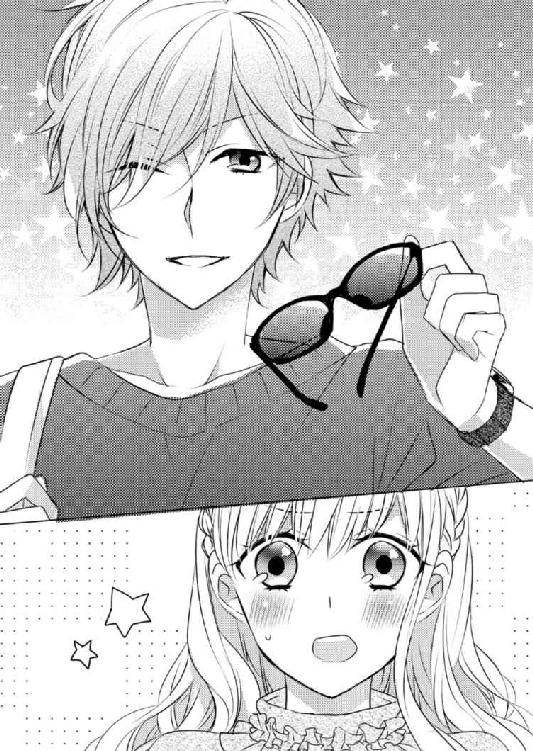
「えっと......あいにくですが、松永は一泊の出張に出ておりまして、戻りは明日の午後になりますが......」
突然のことに緊張しながらも貴斗の不在を伝える乃亜の手を取り、小鳩は「知ってる」と、微笑んだ。
「え？」
「だから来たんだよ。だって、あのドーベルマンみたいなオジサンがいると、乃亜ちゃんと話せないでしょ」
悪びれる様子のない小鳩の対処に困りながら、乃亜は、とりあえず小鳩の手を振り払った。
「たか......松永は、この件に関しては松永を通してくださるように申し上げましたはずですが？」
どこか怯えながら話す乃亜に、小鳩は「知ってる」を、繰り返す。そしていたずらっぽい笑みを浮かべて付け足す。
「でも僕は、その件に関して了承した覚えはないよ」
「......」
「それに、カタログに載せる言葉を紡ぐのは、あのオジサンじゃなく乃亜ちゃんだ。だから僕は、君と話をしたい」
言葉を紡ぐ。その言い方は、乃亜自身が文章を考えるときによく使う言い回しだ。
その言い回しに、少しだけ共感できる。
乃亜が少し表情を和らげたのを見逃さない小鳩は、乃亜の肩越しに視線を移して微笑みかける。
「よかったら、お友達も一緒に食事どうですか？」
「......？」
お友達......という言葉を不思議に思って振り返ると、デスクの主である希一を押しのけるようにして、マリが乃亜の背後に立っていた。
「小糸さん......いえっ！ 乃亜ちゃんの友達の中井マリです」
「そう。マリちゃん、一緒に食事でもどう？」
「喜んで！」
驚く乃亜を無視して、体を前に乗り出しながらマリが答えた。
そしてさも親しげに、乃亜の腕に自分の腕を絡めてくる。
「乃亜ちゃん、彼氏がいるんです。だから浮気と勘違いされたら可哀想だから、友達の私が付き合ってあげます」
「あの......」
──いつから私、名前で呼ばれる仲になったんですか？
「乃亜ちゃん、彼氏いるんだ」
驚くでもなく呟く小鳩に、マリは「凄くラブラブなんですよ」と、正樹のことをなにも知らないはずなのに力説する。
「そう。それじゃあ、僕のせいで喧嘩になっちゃ大変だ。是非、お友達に付き合ってもらわなくちゃいけないね」
「はいっ！」
「中井さん、今日合コンだ......痛いっ」
乃亜は、最後まで言い終わらないうちにマリに足を踏まれた。そして小鳩に見えない角度で睨みつけてくるマリの気迫におののき口を噤んだ。
マリはそのまま時計に視線を走らせ、就業時間を過ぎたことを確認すると「ちょっと片づけて、お化粧直してきます」と、その場を離れていった。
自分の席に置いてあった鞄から化粧ポーチを取り出すついでにスマホをポケットに忍ばせるのが見えた。化粧直しのついでに、友達に適当な噓をついて今日の合コンをドタキャンするつもりなのだろう。
「ここで断ったら、乃亜ちゃん、あの人に恨まれるね」
「......」
悪びれる様子もなく微笑む小鳩に、乃亜は頰を引きつらせた。
「彼女と僕との三人で行くのが嫌なら、他のお友達も誘えばいいよ」
「あ、そうだ前田さんっ！」
視界の端で、そそくさと帰り支度をしている希一の腕を摑んだ。
「前田さん、私の友達ですよね」
「初耳だ」
腕にしがみついて小声ですがる乃亜に、希一は小声で返した。
「私と比較的仲がいいじゃないですか。今から、同僚から友達に昇格しましょうよ」
「巻き込むな。俺、こういうキラキラした人種が苦手なんだよ」
チラリと小鳩に視線を向けた希一は「同じ次元の生き物と思えん。緊張する。輝きで目が潰れる」と、首を横に振り乃亜の腕を振りほどいた。
「私も無理です。しかも中井さんと一緒ですよ」
泣きそうな声をあげる乃亜に、希一は同情するように言った。
「小糸、苦手なものの趣味が合うのに、友達になれなくてスマン」
そう言って合掌すると、すぐに鞄を摑んで逃げるように帰って行く。
「前田さん......」
「乃亜ちゃん、友達少ないんだね。可哀想に。......よかったら僕が友達になってあげようか？ 友達から始まる恋ってのもよくある話だし」
二人のやり取りを傍観していた小鳩が、希一の背中に手を振りながら言った。
「いりません。友達いなくても平気です」
乃亜は素早く答え、次の瞬間開き直って「さっきの女の人も、友達じゃないですよ」と、付け加える。
「そんなこと、言われなくてもわかっているよ」
小鳩がさらりと返す。
「え？」
「でも正しくは、乃亜ちゃんとあの子は『お友達』の基準が違っているんだ」
「え？」
「乃亜ちゃんは、信用できる相手を『お友達』って呼びたいんだろうけど、あの子は、自分に都合のいい子を『お友達』って呼んでいる。そう呼ぶことで、相手を言葉の鎖で縛って、利用したいんだよ」
「......」
「お気の毒様だけど、乃亜ちゃんは彼女にとって、とても都合のいい『大事なお友達』だよ」
辛辣だけれど的確な言葉に乃亜が黙り込むと、小鳩は、希一が出て行った扉に視線を向けて言葉を続ける
「ちなみにさっきの彼は、きっと気が合って自分を面倒に巻き込まない人を『お友達』って、呼んでいるんだろうね。そして彼自身、人を巻き込まない潔さの持ち主だ」
「そうですね」
──巻き込もうとしたこと、謝らなくちゃ。
小鳩の言葉で、自分もマリと同じことをしようとしていたことに気付いた乃亜は、静かに反省した。
「小鳩さん、よく人を見ていますね」
「基本、女の子を観察するのが好きだから。それと僕のことは『小鳩君』でいいよ。僕、女の子には、『さん』より『君』付けを推奨しているから」
そう言われても、自分より年上のクライアントを「君」付けで呼ぶことはできない。
困った表情で視線を向けると、小鳩は人懐っこい笑顔を浮かべる。
「乃亜ちゃん可愛いから、呼び捨てでも許しちゃう。可愛い女の子に、下の名前で呼ばれるのも好きだよ」
──この軽さがなければ、少しは尊敬できるのに。
「小鳩さん、私まだ仕事が終わってないので、よかったら中井さんと二人で......」
「え～ヤダ。乃亜ちゃんが逃げないように、さっきの子を誘ったのに、乃亜ちゃんが来ないなら僕も行かない。そしたら乃亜ちゃん、きっと明日からあの子にネチネチ苛められ続けるよ」
乃亜の言葉を最後まで待たず、小鳩が脅し混じりに抗議する。そして乃亜のデスクへと視線を向け「それに、答えはデートだって教えてあげたじゃん」と、笑う。
「え？」
乃亜がキョトンとしていると、小鳩は、手を伸ばしてデスクの上の写真を拾い上げた。
「お店の場所は？」
「蓼科です」
「じゃあ観光客相手だね。別荘地でもあるから長期滞在の人も多い。時間とお金はあるオジサンの多くに共通する悩みがなにか知っている？」
「......」
首を横に振る乃亜に、小鳩は満足げに頷く。
「知らないってことは、乃亜ちゃんの恋人、オジサンじゃないんだね。オジサン趣味じゃなくてよかった。もし乃亜ちゃんがオジサン好みだったら、口説くまであと十年は待たなきゃいけないもんね」
「オジサンじゃないけど、小鳩さんには関係ないです」
「そんな怖い目をしないでよ。あと『小鳩君』って呼んでほしいな。......あのね、正解は、余暇の楽しみ方を知らないってことだよ」
「余暇の楽しみ方？」
「そう。ゴルフとお酒とオネエチャン。それ以外の楽しみを知らないオジサンって、余暇をどう過ごせばいいかよくわかってないんだよ。やりたいことないならダラダラしていればいいのに、働き蟻の日本人の習性が、それを潔しとはさせてくれない。しかもプライドが邪魔して『暇だけど、なにすればいいですか？』なんて人に聞けない。だから家族や恋人にこう声を掛ける。『どこか連れて行ってやろうか？』ってね」
「ああ......」
確かに、長野にいる乃亜の父親も、よく休日にそういう言い方をしていた。
乃亜の表情を見て「納得でしょ？」と、小鳩が人差し指を振った。
「だから奥さんや恋人に『ここに行きたい』と言わせることができれば、男性客は増えるよ。しかも男性は腰が重いだけでクラフト好きが多いから、体験工房とかの企画に参加すれば、女性より夢中になると思うよ。そうなれば、男性の方が楽しむためのお金を惜しまないしね」
ニヤリと笑う小鳩は、乃亜のラフにある体験工房の紹介写真を指さした。
「だからここの写真を、カップルで楽しんでいるものに変えるんだ。手作りのトンボ玉の写真を入れて彼女へのプレゼントや二人の記念になることをイメージさせられる言葉を選ぶとなおいい。で、......商品紹介の写真は、逆にこっちの淡い桜色の小鉢みたいに女性好みなものに変える。女性はパンフレットや雑誌で行先を選ぶけど、男性は行った先で欲しいものを選ぶから」
「凄いですね......」
ずっと悩んでいたことの答えを、さらりと並べていく小鳩に感心していると、小鳩がパチンと両手を叩いた。
「はい。今日の講義はおしまい。授業料代わりに食事に付き合ってよ」
そこまで言われると、もう乃亜に断る余地はなかった。
「わかりました」
渋々といった様子で頷く乃亜に、小鳩が満足げに頷いた。
◇ ◇ ◇
小鳩が乃亜とマリを連れて行ったのは、高級感漂う居酒屋の個室だった。
低い所に設置された仄暗い照明が、檜張りの廊下を照らす。そんな廊下を歩いていると、視線は自然と下へ向いてしまう。すれ違う他の客同士が、互いの顔を認識しないようにとの配慮なのだろう。
「さすがに人目に付く店は避けたいから、店は僕に選ばせてね」
そう前置きした小鳩に案内されたのは、偶然にも乃亜には思い出深い店だった。
焼き板塀で囲われたその店に目立つ看板はなく、店の屋号が暖簾に書かれているだけだ。料理も酒も、その品揃えに定評があるのだが、それを大々的に宣伝することはない。
その「知る人ぞ知る」といった感じが、訪れた人に優越感を与えている。そしてその分、高級そうな雰囲気が溢れている。
もっとも、それでも料亭よりはずいぶんリーズナブルなのだと、以前正樹が話してくれたことを思い出す。
「そういえばここ、とある出版社が受賞者を必ず連れてくるらしいよ」
部屋に案内する店員に、小鳩は目配せする。
その視線を受け、店員は、否定も肯定もせずに微笑んだ。
高級居酒屋と料亭。地方から出てきた新人作家にはその区別がつかないので、この店に連れてくると、受賞者は随分高級なお店に連れてきてもらったと、実際に掛かる金額以上の反応で喜んでくれるのだと、昔正樹が話していた。
店の雰囲気と、そんな情報にはしゃぐマリの隣で、乃亜は、まだ十代だった自分が初めてこの店に来た時のことを思い出していた。
「凄いお店ですね。メニューに値段書いてない。ここ高いんじゃないですか？」
案内された個室で乃亜の隣に座るマリのテンションは高く、お品書き一つにも大騒ぎしている。
「好きなものどうぞ」
二人の向かいに座る小鳩は、そうマリに微笑みながら言うと、乃亜を不思議そうに見た。
「乃亜ちゃん、こういうお店に慣れているの？ あまり緊張してない様子だけど」
「まさか。緊張し過ぎているだけです」
前に来た時のことを思い出していた。──とは言えない。慌てて首を振る乃亜に、マリが冷ややかな視線を送る。
「乃亜ちゃんは、常にテンション低いんですよ。時々、感情がないんじゃないかって疑っちゃうくらい。そのくせ、彼氏を作るのは早いんですけどね」
口調は冗談ぽいけれど、言葉に棘がある。
小鳩はそれを聞き流し、「マリちゃん、なに飲みたい？」と、話題を変える。
「え～小鳩君のお勧めはなに？」
さっきとは打って変わった甘いマリの声に、乃亜は、話題が自分から逸れたことにホッと息を吐いた。
──早く帰りたいな。
テンション高く小鳩と飲み物を選ぶマリの様子からして、それは叶わない願いだろう。
飲み物を聞かれた乃亜は、あきらめの境地で「ビールでいいです」と、答えた。
「そうだ小鳩君、ＬＩＮＥやっているよね？ ＩＤ聞いてもいい？」
お酒や食事が運ばれてきて人心地ついた頃、マリがそう切り出した。
ビールを舐めるように少しずつ飲む乃亜と違い、速いペースでお酒を飲んでいるマリの頰は、もう赤く染まっている。
最初から小鳩を「小鳩君」と呼び、馴れ馴れしい口調のマリに、相手は会社のクライアントなのだからそんな呼び方をしては......と、やんわり忠告した。すると「頭が固い」だの「優等生の発言」だのときつい口調で言われたので、乃亜は口を挟むことを諦め、ぼんやり中庭を眺めていた。
ライトアップされて暗闇に浮かび上がる中庭に、苔の生えたししおどしが見えた。
昔、連れてきてもらった時にこのししおどしを見た記憶がないので、あの時と違う部屋なのだろう。
──あれからもう五年も経ったんだ。
「......ねえ乃亜ちゃん、聞いてる？」
「えっ！」
乃亜が声のした方を見ると、小鳩が自分のスマホを揺らしていた。
「だから、乃亜ちゃんのＩＤも教えてよ」
そう言われてＬＩＮＥのＩＤを聞かれているのだと理解した乃亜は、首を横に振った。
「私、ＬＩＮＥやっていないんですよ」
「へえ～」
驚きを含んだ声で唸る小鳩の向かいで、マリが「噓っ！ ありえないっ！」と、叫んだ。
「今時、普通は誰でもＬＩＮＥしていますよね？ 普通ありえないですよね？」
同意を求めるように乃亜と小鳩を交互に見るマリは、「ね？ ね？」と繰り返した。
「そういうの苦手なんです」
プライベートな連絡相手なんて、父親か正樹、あとはせいぜい貴斗くらいしかいないのだから必要ない。
「まあ、価値観は人それぞれだから」
「そうよね。価値観が違うんですよね。乃亜ちゃん、ちょっと変わっているものね。やっぱり乃亜ちゃんの彼氏も、変わった人なの？」
乃亜は、激しく首を横に振る。
自分のことをあれこれ言われるのは構わないが、正樹のことは変な言われ方をしたくない。
「凄くちゃんとした人です。真面目で優しくて、誠実に言葉を選ぶ人です」
「誠実に言葉を選ぶ......そこは乃亜ちゃんに似ているんだ」
小鳩は、スマートフォンを傍らに置いた。
「そうですね。......言葉に対する感性が似ていて、一緒にいると落ち着きます。価値観もよく似ているからかもしれません......」
「ふうん」
「価値観とか感性が同じって、大事なことですよね。私と乃亜ちゃんなら、私の方が小鳩君と価値観近いと思いません？」
つまり、自分の方が小鳩の恋愛対象に向いていますよ。と、暗に主張するマリに、小鳩は「どうかな？」と、肩をすくめた。
「感性が似ていて落ち着くってことは、楽だってことだよね？ それって恋愛っていうより、保護者に守ってもらえる安心感じゃないの？」
「......」
「僕なら、好きな子と一緒にいて楽だって思うより、なにかを見る度に『僕の好きなあの子は、これをどう感じるんだろう？』って、彼女の考えを想像したいな。僕は、常にそんなことを考えさせられちゃう相手と付き合いたいって思っているよ」
「......」
「例えばね。僕の事務所の近くの幼稚園の園児は、茶色いスモックみたいな制服を着ていて、集団で歩いている姿をよく見かけるんだ。僕はその姿に『茶色いスモックは、汚れがわかりにくいからのチョイス？』なんて考えちゃう。だけど僕の好きな人なら、きっとそれを見て『カルガモの行進みたいで可愛い』なんて、言うんじゃないかな？ とか、考える。そういうこと想像させる子と、付き合いたいんだ」
予想外の回答に戸惑うマリに、小鳩は「今の話、内緒にしてね」と、恥ずかしげに笑みを浮かべてグラスを口に運んだ。
「ええっ！ 小鳩君、好きな人いるんですか？」
「違うよ。例え話。そういうことを常に想像させられちゃう子と付き合いたいな。って話」
「ああ......なるほど。そういうのわかります。私も、好きな人がなにを考えているのか気になります」
私たち、気が合いますね。と、微笑むマリに、小鳩は「ちょっと違うかな」と困ったように笑った。
そんなやり取りを黙って眺める乃亜は、昨日タクシーから見た園児たちのことを思い出していた。
──変な偶然。
そう心で呟き、左手首に視線を落とした。
「恋人からのプレゼント？」
「え？」
顔を上げると、小鳩が乃亜を見ていた。
「そのブレスレット、恋人からのプレゼント？」
「そうです」
隣で刺身を食べていたマリが、乃亜の代わりに即答した。
「恋人のこと......嫌い？」
同じく刺身に箸を伸ばす小鳩が、探るような視線を乃亜に向けた。
「......」
手持ち無沙汰でお通しの煮物に箸を伸ばそうとした乃亜は、驚いたように首を横に振った。
「だって指輪をしないってことは、恋人の存在を隠したいんじゃないの？」
「え？」
予想していなかった言葉に驚く乃亜の隣で、マリが「乃亜ちゃん、意外と計算高いんだ」と、意味ありげに笑う。
「そうやって恋人いないふりして、遊んでるんだ」
この前は自分が、指輪が貰えないなんて可哀想と言っていたことは忘れたらしい。
「ど......どうしてそうなるんですか？」
「だって僕なら、好きな子に指輪を贈りたい。指輪って、マーキングみたいなものだから。そうすることで安心したいんだよ」
「マーキング？」
「そう。男は独占欲の強い生き物だから、この子は自分の恋人ですって、周囲にわかるようにして安心したいんだ。そして恋人が指輪をしてくれることで、相手が僕を恋人だと認めてくれていることを確認したい。......だから指輪をしないってことは、恋人がいることを隠したいのか、相手を恋人として認めていないのかな？ と思っただけだよ」
ムッとする乃亜のグラスに、小鳩はビールを注いだ。
やっと半分ほどに減らしたのに、また溢れそうになっている。
──一杯だけ飲んだら、お茶にしようと思っていたのに......。
小さな苛立ちを抱えて、乃亜は小鳩を睨んだ。
「それは......小鳩さんの考えです」
「そうだね。僕は乃亜ちゃんじゃない。だから僕は、乃亜ちゃんの気持ちを想像してみただけだよ。彼から指輪を贈られたくない理由を......」
「......」
「彼氏が本気じゃないから、指輪を贈らなかったとか？」
茶化すようなマリの言葉を、小鳩は「それはないよ」と、否定する。
「だってそのブレスレット、二十万位するもん。よほどのお金持ちじゃない限り、遊びの相手に送る金額じゃないよ」
「噓っ！」
その金額に、マリ以上に乃亜が驚いた。
シンプルなのに上品なデザインから、数千円の安物をもらったとは思っていなかったが、それでもそこまで高級なものだとも思っていなかった。
ブランド名を把握していたマリも同様だったらしく、目を丸くしている。
「もちろん、プレゼントの価値は気持ちの問題だから、値段でその価値を決めるのは間違っているよ。でもね......やっぱり、高いものを贈るっていうのは、相手に捧げる気持ちのバロメーターになるんだよ」
「......」
「僕たちは、働くことでお金を得ている。働くってことは、どれだけ好きな仕事でも、自分の時間や心を消費させるだろ？ そうやって稼いだお金で買うプレゼントは、自分の費やした時間を相手に捧げているってことなんだよ」
「......」
乃亜は、ブレスレットに視線を落とした。
自分に、こんな高価な贈り物をもらう価値があるとは思えない。
「そんな高価なブレスレットをプレセントしてくれる恋人なら、乃亜ちゃんが欲しいと言えば、きっと指輪をプレゼントしたはずだよ」
「えっと......その......怖いです」
まっすぐに見つめてくる小鳩の視線に居心地の悪さを感じながら、乃亜が言う。
「恋人が？」
小鳩の声に、乃亜は慌てて首を横に振った。
あの優しい正樹を、怖いと思うことなどあるはずがない。
そして遠慮がちに、目の前の小鳩を指さした。
「えっ！ 僕っ？ 僕が怖いの？ えっ？ えっ？」
小鳩は、驚いた様子で目を丸くし声を裏返らせた。
乃亜は、自分の顔を指差している小鳩に申し訳なさそうに頷き、説明を始めた。
「小鳩さんは、きっとすごく頭がいいんだと思います。だから小さな情報の断片から、たくさんの可能性を想像するんです。それに役者さんだけあって、話し方が上手で、人を惹きつけます」
「えっと、ありがとう......」
「そんな小鳩さんが想像を巡らせて話した言葉は、凄い説得力を持ってしまいます。......私が指輪をしていない理由を、小鳩さんは想像で話しているだけなのに、小鳩さんが話すと、まるでそれが真実みたいに聞こえてしまって、周囲は惑わされてしまいます。説得力のある人の言葉は、他人の考える力を奪ってしまいます」
「......」
「そして小鳩さん自身も、自分で自分の紡いだ言葉を真実と錯覚していそうで......そういうの、怖いです」
慎重に言葉を選びながら、乃亜は、自分の正直な思いを話した。
さっき、仕事のアドバイスをくれたときにも思ったことだが、小鳩は、軽そうな外見に反してすごく頭の回転が速い。それに弁も立つ。
そんな小鳩の言葉には、説得力があり過ぎる。
「......」
「小鳩さんは、質問の形式を取っているけど、自分の中でこうだって思い込んでいる答えがあって、私にその言葉を言わせるために言葉遊びをしているだけに思えます」
「どうして君は......」
いつも......。と、小さな声で呟く小鳩は、人懐っこい笑顔を浮かべてマリを見た。
「ねえマリちゃんは、僕のこと怖いって思う？」
「えぇっ！ まさか。乃亜ちゃんの発想がひねくれているだけです」
マリはそう答えて、ちらりと乃亜を睨むと、すぐに小鳩に媚びた笑顔を向ける。
「そう。よかった」
そう言いながらグラスを手に取る小鳩の横顔が、どことなく寂しそうだ。
──傷つけた？
乃亜が心配そうに様子を窺っていると、小鳩は、そのままマリと他愛のない話を始めた。
マリの喜びそうな芸能人の名前を出して、その人に関するエピソードを語る小鳩の顔を訝しげに眺めていると、ふと視線が合った小鳩が乃亜にウインクをしてくる。
──心配して損したかも......。
乃亜は、何処までも軽い小鳩の姿に呆れながら静かにビールを啜った。
料理を食べながらお酒を飲む間、マリは小鳩に、恋人の有無と好きなタイプを質問した。
恋人はいなくて、好きなタイプは秘密だと答えた小鳩は、乃亜に、出身地と恋人と同棲しているのかを尋ねた。
出身は長野県でひとり暮らしだと答えた乃亜は、マリに質問されたので、恋人がアメリカに長期出張中だということも付け加えた。
乃亜の情報に「いいなぁ」と呟くマリは、質問されたわけでもないのに、恋人募集中であることを報告した。
そうやって情報交換を繰り返しながらお酒を飲んでいくと、乃亜の中から、最初ほど強い憂鬱感はなくなっていた。
アルコールで脳の感覚が麻痺してきたのか、会話を盛り上げる小鳩の話術のなせる技なのか、それなりに楽しくお酒を飲んだ。
そしてその帰り道のタクシーの中で、小鳩がまた乃亜に質問を投げかけた。
◇ ◇ ◇
「乃亜ちゃん、家どの辺？」
「えっと......」
店を出てタクシーの後部座席に乗り込んだ乃亜は、バックミラー越しに自分を見る小鳩に自分が暮らすマンションの場所を教えるべきか悩んだ。
──マンションの近くのコンビニで下ろしてもらえばいいかな？
そんな考えを読み取ったように、小鳩が拗ねたような声をあげる。
「心外だ、警戒されている。......僕こう見えても紳士だよ。女の子が招き入れてくれないのに、強引に部屋に上がり込んだりしないよ」
「......」
「それにほら、乃亜ちゃん送ってから、その子を送らなきゃいけないし」
小鳩は、乃亜の隣で完全に酔いつぶれているマリに視線を向けた。
酔って意識をなくす直前まで「小鳩君、送ってっ！」と「小糸さん、私、の順番で送って」を繰り返していたので、小鳩は、その順番を守りながら二人を送るつもりでいるらしい。
「でも......」
「あ、その子に住んでいるところ知られたくないって思っているなら、大丈夫だと思うよ。お友達のフリするのを忘れて、乃亜ちゃんのこと『小糸さん』って呼ぶくらい完全な酔っ払いだから、記憶に残らないよ」
小鳩が振り返り「今のうちに、日ごろの恨みを晴らしとく？」と、殴るジェスチャーをしてみせたので、乃亜は、慌てて首を振った。
「冗談だよ。乃亜ちゃんは、そういうことしない子だって知っているよ」
小鳩は、優しい口調で断言して前に向き直る。
「でも......」
「それに酔いつぶれた女の子と僕を二人っきりにすることを心配しているのなら、それもご心配なく。なにかあったらすぐにネットに書き込みそうな子に手を出すほど、僕は飢えてないから」
「小鳩さん......エスパーみたいで気持ち悪いです」
乃亜の言葉に、小鳩は軽快な笑い声を車内に響かせた。
「それに、お酒を飲ませておいて適当なとこでタクシーから降ろして一人で帰らせた。......なんてこと知ったら、あのドーベルマンみたいな社長さんに本当に闇討ちされちゃいそうだから送らせてよ」
「だったら、お酒を飲ませなかったらよかったのに」
「だって一緒にお酒を飲みたかったんだもん」
確かに女の子に大人気の小鳩なら、強引に乃亜の家に上がり込む必要なんてないだろう。
どこまでも軽い小鳩の口調に苦笑いして、乃亜は自分の暮らすマンションの場所を教えた。
マンションの前にタクシーが近づいたとき、「そういえば......」と、小鳩が振り返った。
「僕に見覚えって、あった？」
しばらく考えてから乃亜は「はい」と、頷いた。
「本当？」
「はい。テレビや雑誌で何度もお見かけしています」
「......なんだ」
「？」
一瞬輝いた小鳩の瞳が、乃亜の一言で暗くなった。前に向き直る小鳩の、なにか言いたげな表情が気になったけれど、ちょうどタクシーがマンションの前で停車したので、乃亜は、その表情の意味を確認することなくタクシーを降りた。
「今日はありがとうございました。おやすみなさい」
「乃亜ちゃん」
「はい？」
小鳩は窓を開けて乃亜の名前を呼び、乃亜の背後に視線を向けた。
築十年。東京メトロの駅まで徒歩十分の高層マンションは利便性がよく、大手ゼネコン会社が手掛けたこともあり、販売当時は人気の物件だったと聞いている。乃亜は、中古で安くなった七階の一室を、三年前に購入した。
「このマンション、ファミリー向けだよね？ 家賃高そうだけど、さっきひとり暮らしだって言ってなかった？」
──しまった......。
二十代のＯＬがひとり暮らしするには不自然な値段と広さのマンションに住んでいることを隠したかったのは、会社の人だけじゃなかった。
彼の鋭い洞察力を忘れていたことを後悔する乃亜に、小鳩は、人懐っこい笑みを浮かべて質問を重ねる。
「実は若い頃に稼いだお金で買っていて、賃貸じゃなかったりして」
「......」
「......なんてね」
小鳩は、乃亜の返事を待たずに会話を打ち切る。ニンマリという表現がピッタリくる笑みを浮かべると、乃亜の言葉を待たずに「じゃあ、おやすみ」と窓を閉め、タクシーを発進させた。
４．息苦しい夜
小鳩たちを乗せたタクシーを見送った乃亜は、部屋に入ると、暖房とノートパソコンの電源を入れた。
「ＮＯＡ・ＳＡＳＡＨＡＲＡ」
ノートパソコンにパスワードを入れると、微かにモーターの振動音がして、パソコンが起動する。笹原は、中学校の頃に交通事故で亡くなった乃亜の母親の旧姓。
立ち上がった画面には、九時十四分と表示されている。乃亜にしては遅い帰宅だ。
カチッ カチッ カチッ。
何度かマウスをクリックして、乃亜は「タイトル未定」のフォルダを開き「下書き」を開いて、昨日までに書いた文章を読み返す。
「......駄目だな......」
諦め口調で呟く乃亜は、「下書き」のデータをごみ箱に捨てた。そしてまた新しい「下書き」を作る。
白い画面を前に、乃亜は癖のある長い琥珀色の髪に指を絡め、意識を集中する。そうやって自分の中で出来上がっている物語を形作る言葉を探す。
長い間同じ姿勢を取っていた乃亜は、一瞬、鮮やかな微笑みを浮かべた。でもすぐに、唇を強く嚙んだ。
昨日、これでいいと思った文章が、今日読み返すと面白くない。それと同じように、今書こうとしている文章も、明日になればそのつまらなさに気づいてしまうに決まっている。
そう思うと、自分の中に生まれた文章を形に残すのが虚しくなる。
「どうしよう......」
悲しげに唸る乃亜は、ノートパソコンを閉じて、テーブルに頰を乗せた。
瞼を閉じると、一昨日書店で見かけた「大賞受賞作」の帯文字が蘇る。
乃亜が「笹原ノア」のペンネームで「淡海文学賞」の大賞を受賞したのは七年前。乃亜が、まだ十五歳のときだった。
若手作家の登竜門と称されているだけあって「淡海文学賞」の受賞者はおおむね若いのだが、それでも十五歳の受賞者は歴代最年少だった。そのため受賞直後は、乃亜の容姿や小説を書いた背景も手伝ってマスコミで大きく取り上げられた。
マスコミがドラマティックに取り上げてくれたおかげもあって、笹原ノアのデビュー作は、記録的なヒット作となり、受賞から二年後には映画化もされた。
「......でもそれっきり」
脳裏に浮かぶ授賞式の光景を振り払うように、乃亜は瞼を開けて呟いた。
華々しくデビューした笹原ノアという作家は、受賞作以降の作品を発表していない。
本が出版されたことで、乃亜は、沢山のものを得た。
賞賛やお金もそうだが、負の財産としての露骨な嫉妬ややっかみも、容赦なく乃亜に送りつけられた。お金のためになら、まだ少女の乃亜に平気で媚びる大人の姿は、異様な光景でしかなかった。
もともと人と接するよりひとりで本を読んでいる方が好きだった乃亜にとって、世間に注目されて、多くの人と関わりを持つということは、自分の価値観と世間とのズレを大きく認識させられる恐怖以外のなにものでもなかった。
そういったことが作用したのか、もともと乃亜の才能がその程度だったのかはわからないけれど、乃亜は、それ以降小説を書けなくなってしまった。
乃亜は、自分にはその程度の才能しかなかったのだと思っているのだが、デビュー作の担当だった正樹は、乃亜の才能はそんなものじゃないと主張した。
そして当時の乃亜が置かれていた状況も承知していた正樹は、高校卒業を機に環境を変えることを勧めた。そうすれば、きっといつかまた小説を書けるようになるからと。
爆発的なヒットを遂げたとはいえ一作限りの幼き作家の存在を世間も忘れ始めていた頃だったので、乃亜は、自分が笹原ノアであることを知らない人たちの中で普通の生活をすることを選んだのだ。
東京の短大に進学するのと同時に、本の印税や映画の原作料でマンションまで買ったのは、再婚した父親と、その新しい家族に独立の意思表示をしたかったからだ。
地元を離れて四年。
短大を卒業する頃には、出版社が乃亜に新作の執筆を催促することもなくなっていた。
満ちていた潮がゆっくり引いていくように、乃亜の周辺から人が離れていく中で、正樹だけが残った。
親しい人のいない東京で暮らす乃亜にとって、正樹が自分を作家としてではなく、一人の女性として必要としてくれることが嬉しくて、すがるようにその腕に甘えた。
恋人として乃亜を守ると約束してくれた正樹が、今でも静かに笹原ノアの新作を待っていることに乃亜は気付いている。
だからこそ、正樹に喜んでもらえるような新作を書きたいと思っているのに、これだけの時間をかけても笹原ノアは、新作を出せずにいる。
それどころか長時間文章を書いていると、心のどこからか「怖い」という気持ちが溢れてきて、指が震えたり息苦しくなったりしてしまう。
「......っ！」
振動音が聞こえてきて、乃亜は顔を上げた。
鞄の中を見ると、マナーモードにしたままのスマホが震えていた。
──電話が掛かってくるなんて珍しい。
そう思いながらスマホを手にした乃亜は、着信の名前に小さく驚き、通話ボタンを押した。
「どうかしたの？」
微かに緊張している乃亜の声に、電話の向こうの正樹が小さく笑った。
「酷いな。声が聴きたくて電話しただけだよ。そんな理由でも電話することが許される関係だと思っていたのに」
そうからかわれると、事故か事件を想像して、緊張した自分が恥ずかしくなる。
「だって時差がある国から電話してくるんだもん......。急用かと」
正樹がいるロサンゼルスと日本の時差は十七時間。向こうとの時差を計算しながら、乃亜は言い訳がましく呟いた。
「このぐらいの時間の方が、乃亜の迷惑にならないかなと思って」
寝起きなのか、いつもより掠れた正樹の声が、乃亜の鼓膜に心地よく響く。その声に、乃亜はさっきまでの落ち込んでいた感情が薄れていくのを感じていた。
「電話ありがとう」
「元気？ 風邪ひいてない？」
「うん」
「貴斗は......相変わらず、だよね」
聞かなくてもわかる。と言いたげな口調だった。
「もちろん元気」
そう答えながら目を閉じると、正樹の姿が鮮明に蘇ってくる。
「なにか面白い本読んでる？」
乃亜と同じくらい活字中毒の正樹が、お決まりの質問を口にする。
どこにいても変わらない彼の質問が嬉しい。乃亜は「まだラストまで読んでないから、面白いかどうかわからないけれど」と、読みかけの本のあらすじを話した。
──早く会いたいな。
仕事で出張している正樹には、そんなワガママなことを言えないけれど、早く会って抱きしめて欲しかった。小柄な乃亜を包むように抱きしめてくれる正樹の広い胸板に耳を寄せて、規則正しく響く胸の鼓動を聞きたい。
「仕事は？」
「今、ガラス工房のパンフレットを制作しているの。綺麗な作品が多くて、手作り体験もできる楽しそうなお店だよ」
「手作り体験？」
「うん。トンボ玉っていう、ガラス製の大きなビーズみたいなのを好きにデザインして作ったりできるの」
「どこにあるの？」
「蓼科」
「行きたい？ 日本に帰ったら、連れて行ってあげようか？」
「ああ......」
その言い方に、小鳩の話を思い出す。
「ん？ 俺なんか変なこと言った？」
「全然。ただ可愛いと思っただけです。本当は、正樹さんがトンボ玉作ってみたいんじゃないですか？」
「ばれたか。なんだか、面白そうだから」
年齢差を感じさせない素直な反応に、愛おしさがこみあげてくる。
そんな正樹に小鳩のことを話す気にはなれなかったのは、食事に行ったことが後ろめたいからではなく、無用な心配を掛けたくなかったからだ。
仕事相手と食事をするぐらい、正樹にだってあることだから、わざわざ報告するほどのことじゃない。
乃亜は、左手のブレスレットを見た。
こんなに愛おしい正樹のことを、隠したいと思うわけがない。
とっくに消えたはずのキスマークの跡が、チリチリと肌に蘇る。
もしも正樹が、指輪を贈ることで自分を独占していると安心してくれるのなら、乃亜にそれを拒む理由はない。
「......」
「どうかした？」
「えっと......。ブレスレット貰ったばかりなのに、もし指輪が欲しいって言ったら、欲深い女だと思いますか？」
少し間をおいて、正樹の弾かれたような笑い声が電話の向こう側から聞こえていた。
「欲深い...って表現、なんか笑えた」
「もう......」
いつまでも続く笑い声に乃亜が拗ねた声をあげると、正樹が「ごめん。ごめん」と、笑うのをやめて囁いた。
「光栄だよ」
「......」
その優しい声の響きに、最初から指輪を受け取らなかったことを後悔した。
「日本に帰ったら、一緒に買いに行こう」
「うん。ありがとう」
頷く乃亜に正樹は「もちろん、左手の薬指にはめてくれるんだよね」と、今さらな確認をしてくるので笑ってしまった。
「あたりまえです」
「ありがとう」
「指輪を買わされるのに、お礼なんて変ですよ」
「いや、指輪をしてくれるから」
正樹があくび交じりに答えたので、乃亜は「もう少し寝てください」と、電話を切ろうとした。
「乃亜」
「はい？」
「愛しているよ。......あと、いろいろ頑張ってね」
そんな囁きを残して電話が切れた。
「私も愛しています」
乃亜は、言いそびれた言葉をブレスレットに向かって呟いた。
電話が切れる前に「愛している」と返せなかったことより、正樹が言うより先に「愛している」を言えなかったことが残念だった。
その方がきっと、正樹をより喜ばせることができたはずなのに。
「......」
小さくため息を漏らす乃亜は、せめて「頑張って」の言葉に応えようと、閉じていたノートパソコンを再び開いた。
正樹は、新しい小説が書けない乃亜に、それでも文章を書く仕事に就くべきだと言い、貴斗の会社を紹介してくれた。
最初は期待に応えられなかったらと、不安な思いでいたのだけれど、働き出してみると乃亜自身も不思議に感じるほど容易にパンフレットなどの紹介文を書くことができた。
そんな乃亜の姿に、正樹は、またすぐ小説が書けるようになるはずだと喜んでくれた。
言葉で確認したことはないけれど、正樹が自分に向けてくれる愛情の一部は、作家笹原ノアに向けたものなのだと感じている。
だからもし書く努力さえも辞めてしまったら、正樹の愛情を失ってしまいそうな気がして怖い。
「頑張ろう......」
自分で自分を励まして、乃亜はキーボードを叩き始めた。
５．社長の不機嫌
──貴斗さん、機嫌悪い。
自分のデスクに座り乃亜が書き直したガラス工房のパンフレットのラフをチェックする貴斗は、眉間に刻み込むように深い皺を寄せている。
その皺は、貴斗の機嫌の良し悪しを測るバロメーターの役割を果たしている。
皺の深さからして、今日の貴斗は、相当に機嫌が悪いらしい。
「駄目ですか？」
立ったままの姿勢で貴斗の反応を待っていた乃亜は、恐る恐る質問した。
受けた仕事は、その規模の大小に関係なく毎回貴斗のチェックを受けることになっているので、貴斗の了承を得られないことには、次に進めない。
「いや。これでいいと思うよ」
「じゃあ、先方にこれで再度確認してもらいます」
乱暴に差し出されたラフを受け取ろうとする乃亜の手首を、貴斗が摑んだ。
そして眉間の深い皺をそのままに「ちょっとお話しようか」と、引きつった笑みを浮かべた。
「はぃっ！」
──絶対怒られる！
そう直感したところで逃げられるわけでもないので、乃亜は、怯えながら貴斗が顎で示した来客用のソファーセットに腰を下ろした。
「昨日、小鳩氏と食事に行ったそうだな」
ソファーで縮こまる乃亜と自分のためにコーヒーを淹れた貴斗は、それを乃亜の前のテーブルに置くと、自分も乃亜の向かいに腰をおろした。
怒っていても乃亜の分のコーヒーの脇にチョコレートを添えておくのは、貴斗の優しさなのだろう。
「情報が早いですね」
──やっぱりそのことだ......。
怒られる理由を予想していた乃亜は、苦笑いを浮かべた。
現在、午後の三時。お昼過ぎに出張から帰ってきた貴斗だが、もう昨日のことを知っているらしい。
「あれだ......」
コーヒーを啜る貴斗が、不満げに窓際を顎で示した。
見ると、窓際に細長い箱が置かれている。
貴斗の表情を窺うと、中を確認するよう視線で促してくるので、乃亜は立ち上がり窓辺に近づいた。
「薔薇......」
それは筆箱ほどの大きさの箱。蓋を開けると、一本の薔薇が姿を見せた。
幼児の爪のような透明で儚い桜色をした薔薇には、銀色の細いチェーンが巻きつけられている。チェーンの先端には、小さな宝石のチャームが付いているので、ネックレスかブレスレットなのだと推測できた。
揺らしてみると、鎖の繋ぎ目の金具に、プティ・コロンブのマークが見て取れた。
「これは？」
「んっ」
眉間に皺を寄せたまま、貴斗がテーブルの上に一枚のカードを置いた。
ソファーに座りなおして拾い上げたカードには、こう書かれていた。
『乃亜ちゃんへ
昨日のお食事楽しかったよ。
また行こうね。（今度は二人っきりを熱望）
デートの記念を兼ねて、商品サンプル送ります。
いい文章を書くためにも、ちゃんと身に着けてね。
Ｐ．Ｓ．
過保護な社長に「小鳩君は、紳士的で優しい人です」って伝えてね。
小鳩葉汰』
「よっぽど楽しいお食事だったみたいだな」
乃亜が読み終わるタイミングを見計らって、貴斗が、嫌味たっぷりな視線を向ける。
「どうしてこれを貴斗さんが？」
その質問に、貴斗の眉間の皺がまた深くなる。
「あの小僧が、バイク便で俺宛てに送ってきやがった。送り状に『資料』って書いてあったから開けてみたら、これが出てきたんだよ」
「小鳩さん......」
なんでわざわざ貴斗の神経を逆撫でするようなことを......。と、乃亜は額を押さえた。
俺に対する挑戦状らしいな。──苦々しく唸った貴斗は、そのままの気迫で乃亜を睨んだ。
「で、どうしてアイツと食事なんかに行ったんだ」
「えっと............それは......」
乃亜は、カードをテーブルに戻し、昨日、食事に行くまでの経緯を説明した。小鳩に仕事のアドバイスをもらったことと、そこでなされた会話には、これ以上貴斗の機嫌を損ねたくないので触れないでおいた。
「あの小僧............」
「すみません」
話を聞き終えた貴斗は、深いため息を吐き、髪を乱暴に搔き乱した。
「どうして乃亜ちゃんは、そう無防備かな」
「私、無防備ですか？」
諦め気味な貴斗の言葉に、乃亜は目を丸くする。
「無防備だって自覚していないところが、もうアウト。その容姿で、そんなに無防備に振る舞われると、お父さん心配で胃に穴が開いちゃうよ」
「お父さんじゃないです」
乃亜に冷ややかに返されて、貴斗はやっと表情を緩めた。
「それは冗談だけど、乃亜ちゃんが可愛いのは本当だよ」
「そんなことないです............」
返答に困る乃亜に、貴斗の眉間の皺が緩んだ。
「自覚がないところも魅力なんだろうけど、正樹のことを好きだと思っているなら、正樹が大事にしている乃亜ちゃんを、乃亜ちゃん自身も大事にしてよ」
「している............つもりです」
正樹という名前に、まじめな表情で頷いた。
「まあ今回悪いのは、乃亜ちゃんじゃなく、コイツだしな」
唸る貴斗は、憎々しげに小鳩のメッセージカードを指先で弾いた。
弾かれたカードは、独楽のようにクルクルと小気味よく回転して、床に落ちていった。
「でも小鳩さん、全ての女の子に、あんな感じで接しているみたいですよ。別に私とどうこうって考えはないと思います」
床に落ちたままにしておくわけにもいかないので、乃亜がそれを拾い上げた。
「それが、アイツの技なんだよ」
「技？」
「もしあの小僧が、乃亜ちゃんだけにグイグイ迫って来たらどうする？」
貴斗の中で、小鳩の呼び名は「小僧」に決まったらしい。
「ちゃんとお断りします」
断言する乃亜を、貴斗は「ほらね」と指差した。
「乃亜ちゃんだけに好意を見せれば、断られる。でも誰にでもそういう態度を取る男だって思ったら、逆に断りにくくなるだろ？」
「あっ！」
確かに、誰にでもチャラチャラと優しい小鳩が、自分に優しくするのをいちいち断るのは、好かれていると思い込んでいる自意識過剰な態度のようで恥ずかしい。
「な。あの小僧の軽さは、そこまで計算している軽さなんだよ。正しくは、軽く見せているだけで、きちんと物事を計算して動くタイプだ。まだ二十五歳だっていうのに、計算高い小僧だ」
「でも正樹さんのこと知っていますよ」
「ああいうタイプは、そんなの気にしない。......だからといって、担当替えるわけにもいかないし」
貴斗は、ソファーに背中を預けて天井を見上げる。
「みなさん、そんなに忙しいですか？」
工業系専門の希一は別として、企画部には乃亜の他にも、女性向けの商品を扱うのが得意な人はいる。
「そうじゃないんだ......」
顔を天井に向けたままの姿勢で、目線だけを乃亜に向けた。
「今回の仕事、乃亜ちゃん指名で受けた仕事なんだよ」
「え？」
松永デザインでは、会社として受けた仕事を貴斗がそれぞれに割り振るので、特定の誰かを指名して受けることなどなかった。
一度手掛けたクライアントから「前回と同じ人で......」といった依頼のされ方をすることはあるが、企画部の社員の名前を公開していないので、初めてのクライアントが一社員を指名してくるなんてありえない。
「もちろん、乃亜ちゃんの名前を公表したりはしてないよ」
乃亜の表情を読み取って、貴斗が答えた。
「じゃあ、どうやって？」
「今回の話をもらった時に向こうが希望したこともあって、過去に我が社で手掛けたものをまとめて、浦さんを介して小僧に参考資料として渡したんだよ。そうしたら、乃亜ちゃんが手掛けたものだけを全部選び抜いて『この文章を書いた人にお願いしたい』って連絡してきた」
「そんなこと.........」
できるのだろうか？ と、乃亜は首をかしげた。
小説なら、作者の癖が文章や話の展開から読み取れるので可能かもしれないけれど、パンフレットやカタログに書かれている短い商品の紹介文から、一人の書き手を断定することなどできるのだろうか？
ただ写真や文字のレイアウトにはどうしても個々の癖が出てしまうので、完全に不可能とも思えないが、それでも扱う商品によってある程度のお約束というものがあり、その全てから乃亜の作品だけを選び出すのは難しいように思える。
「まあ確かに、ただの偶然かもしれん」
姿勢を戻した貴斗は、コーヒーを飲んだ。
乃亜も、その動作を真似るようにコーヒーカップを手にした。
「だが、クライアントが『是非ともこの人で』と希望している以上、それを外すわけにもいかん。正直、小僧のブランドのカタログってのは、うちにとってもいい宣伝になるから乃亜ちゃんのセンスに任せたいという思いもある。けど......」
「大丈夫ですよ」
貴斗の言いたいことを察した乃亜は、貴斗の言葉を遮った。
貴斗は、小鳩の女の子に対する軽薄さを気にしているけれど、それを気にするのは、乃亜が親友である正樹の恋人だからだ。
「だが......」
「私、正樹さんが好きです。だから正樹さんを傷付けるようなことはしません。ちゃんと、スキを作らないよう気を付けます」
正直にいえば乃亜は、勘のいい小鳩が苦手だ。でもだからといって、貴斗の陰に隠れるのは、間違っていると思う。それは社会人として情けなさすぎる。
「だけど.........」
気遣う貴斗に「大丈夫です」と、しっかり頷いてみせた。
「私、もう大人ですよ。守ってもらうためにここにいるんじゃなくて、働くためにここにいるんです」
昨夜、小鳩が「価値観が一緒で楽なのは、恋愛というより保護者に守ってもらえる安心感じゃないの？」と言っていたのが、心に引っかかっていた。
年齢差を埋めて、守るべき弱者としてではなく、対等な立場でこれからも正樹と一緒にいたいと思うのなら、貴斗に守られながら働いていては駄目だ。
「働く大人の女性として、小鳩さんくらい、上手にかわしてみせます」
乃亜の言葉に、貴斗は慈しむような視線を向けた。
「そうだな。出会った頃は、正樹の陰に隠れて俺と口もきけなかった乃亜ちゃんが、今は俺や正樹以外の男と会話してお食事に行けるまでに成長したんだもんな」
「もう」
そう頰を膨らませてみせる乃亜を、貴斗は笑い飛ばした。
６．小鳩さん、拾いました
その日の夕方、乃亜は、いつもより少し遅い時間の電車に乗って自宅に向かった。
小鳩たちと食事に行った昨日よりは早いけれど、それでも乃亜の日常に比べれば遅い帰宅時間だ。
あの後、プティ・コロンブの訪問に同行するように言われ、その帰りに打ち合わせを兼ねた食事をしてきたので遅くなってしまった。
軽快な小鳩を上手くかわせるだろうかと悩みながら訪問したのに、プティ・コロンブに小鳩の姿はなかった。
二人を出迎えた浦が、小鳩がいないことに拍子抜けする貴斗に、小鳩は俳優業も忙しいので、プティ・コロンブにいることの方が珍しいのだと教えてくれた。そして、大まかな流れは浦と貴斗と乃亜の三人で打ち合わせをして、その都度、必要があれば浦が小鳩に確認していくという手順を踏みたいと言われた。
冷静に考えてみれば、小鳩は人気俳優なのだから、それが当然なのだと乃亜も納得した。
あんなに心配していたのに、どうやらこの先、小鳩に会うことは数えるほどしかないらしい。もしかしたら全ての確認は浦を通して行い、二度と会うこともないのかもしれない。
そんなわけで、小鳩を警戒しながら仕事をする心配がなくなり、機嫌がよくなった貴斗に打ち合わせを兼ねた食事に連れて行かれたのだ。
すっかり暗くなってはいたが、まだ通行人も多い時間。送ってくれるというのを断り、乃亜はひとりで歩いて帰った。
歩道や並木が整備された開放感あふれる通り沿いにあるマンションのエントランス周辺には、さらに緑が茂る植込みがあり、樹木が暖色系の照明でライトアップされている。
「貴斗さんの機嫌が直ってよかった」
乃亜は、安堵の息を漏らして、自分の住むマンションを見上げた。
駅近でスーパーなども揃っていて利便性が良い。それが決め手となって買ったマンションには、ファミリー層が多いため、すでに灯りのともっている部屋が目立つ。
ここが自分の帰る場所だと感じるようになったのは、いつの頃からだろう？
ベランダから漏れる灯りを愛おしげに見上げ、誰に言うでもなく「ただいま」と、呟いた。
「おかえり～」
「──！」
返ってくるはずのない返事が聞こえてきて、乃亜は、驚いて周囲を見渡した。
そしてエントランスと植込みの間に、隠れるように座り込んでいる人影に目を丸くした。
「小鳩さんっ！ なにしているんですか？」
被っていたコートのフードを脱いで手を振ってみせる小鳩に、乃亜が驚いて駆け寄る。植込みのブロック塀に腰をおろす小鳩は、長い足を折り膝に頰を乗せている。
長い時間そこにいたのか、近寄ると、鼻が寒さで赤らんでいるのがわかった。
「乃亜ちゃんに会いたくて」
体を震えさせて白い息を吐く小鳩から、アルコールの匂いがした。
「飲んでいるんですか？」
「うん」
顔をしかめる乃亜に頷いてみせる小鳩は、酔った目を、とろりと細めた。
「............」
「ねえ知ってる？ 人間て、お酒を飲むと、本能に忠実になっちゃうんだよ。だから僕、どうしても乃亜ちゃんの顔を見たくなって、ここで待っていたんだ」
会えてよかったよ。そう満足げに膝を抱きしめる小鳩を前に、乃亜は、静かに深呼吸をした。そして毅然とした声でこう告げた。
「小鳩さん、俳優の仕事が忙しいから、カタログ製作の打ち合わせは、浦さんを通して行っていくって聞きました」
「うん。今日は、仕事に関係なく、ただ乃亜ちゃんの顔を見たかっただけだよ」
「そういうの、迷惑です。こんなことして、小鳩さんが風邪でもひいたら、沢山の人に迷惑が掛かります」
「そうだね。............でも僕はそれでも、乃亜ちゃんの顔が見たかった」
「............迷惑です」
「............」
「私、恋人がいます。だからこういうの困ります」
悲しげな表情を浮かべる小鳩に、乃亜は、それでも、と毅然と言い放つ。貴斗や正樹に心配をかけないためには、ここではっきりと言っておくべきだろう。
素直に頷く小鳩は、遠くに視線を向ける。
「僕、今まで頑張ってきたつもりだよ。たぶん少しぐらいのワガママが許されるくらいに頑張ってきた。だって僕が頑張って活躍しないと、乃亜ちゃんが気にしちゃうと思っていたんだもん」
「はい？」
「ここまで頑張ってきたご褒美に、少しぐらいのワガママ許してくれてもいいんじゃないかな？」
──だいぶ酔っているのかな？
遠くに視線を向けて話す小鳩の声は、どこか危うい感じがする。
それに話の内容が、見えてこない。
そんな小鳩は、不意に視線を乃亜に戻した。
「ねえ乃亜ちゃん。乃亜ちゃんは、頑張ってきた自分にちゃんとご褒美あげてる？」
「え？」
乃亜が返事を返せずにいると、小鳩は、目を閉じて微笑んだ。
「頑張った自分にご褒美あげなきゃ駄目だよ。だって、自分で自分の頑張りを認めてあげなきゃ、心が疲れちゃう」
「............」
「疲れ過ぎちゃうと、息苦しくて先に進めなくなっちゃうよ」
小鳩は、なにか知っているのだろうか？
それとも乃亜の中にある息苦しさが、深い意味のない酔っ払いの言葉に、勝手に意味を持たせているのだろうか？
小鳩の本音を確かめようと、乃亜は、黙って小鳩を観察した。
抱き寄せた膝に頰をつけて瞼を閉じる小鳩の体は、左右にゆらゆらと揺れている。
微かに鼻歌が聞こえるから、歌に合わせてリズムを取っているのかもしれない。
幸せそうな顔で鼻歌を口ずさむ小鳩の口から、白い息が細く吐き出されていく。
──やっぱり、綺麗な人だな。
マンションの上階から降り注ぐ灯りに照らされた姿に、映画のワンシーンを見ているような思いで、乃亜は、腰を曲げて小鳩の顔を覗き込んだ。
距離を縮めた瞬間、小鳩が、体をぐらりと揺らせて乃亜に近づいてきた。
──キスされる！
身構えた次の瞬間、乃亜の隣を小鳩の体が通り過ぎていき、そのままタイル張りの地面に倒れ込んだ。
「キャッ！」
一瞬、迫ってくる小鳩にキスをされるのかと思い体を硬くした乃亜は、バランスを崩した小鳩がドサリと地面に崩れ落ちる音に悲鳴をあげた。
崩れ落ちる瞬間、ゴンッといった鈍い衝突音が響いた。
「大丈夫ですかっ！」
慌ててしゃがみ込み小鳩の体を仰向けにすると、額が擦り切れて、うっすらと血が滲んでいる。
「小鳩さんっ！」
体を揺さぶっても、小鳩は目を開けない。
──どうしよう......。
気を失っているのかと思い、救急車を呼ぶべきか悩む乃亜をよそに、小鳩は薄く唇を開いて規則正しい呼吸をしている。
──酔って、寝ているだけ？
意識を確認するために頰に手を当てると、小鳩は口をモニョモニョと動かし幸せそうな微笑みを浮かべる。
その姿に、寝ているだけだと判断した乃亜は「なんだ......」と、安堵の声を漏らした。
その声に反応したように、小鳩はまた微笑を浮かべる。
「もうっ」
心配した分、その笑顔が憎たらしい。乃亜は小鳩の頰を抓った。
でも、そんなことをされても小鳩が微笑んでいることに罪悪感を覚えて、今度は頰を優しく撫でた。そして乃亜に頰を撫でられ、幸せそうに微笑む小鳩を、不覚にも可愛いと思ってしまった。
「子供みたい」
乃亜が観察している間も、小鳩は幸せそうに眠息をたてている。しかし、いくら寝顔が可愛いからといって、このままにしておくわけにはいかない。
「小鳩さん、起きてください。風邪ひきますよ」
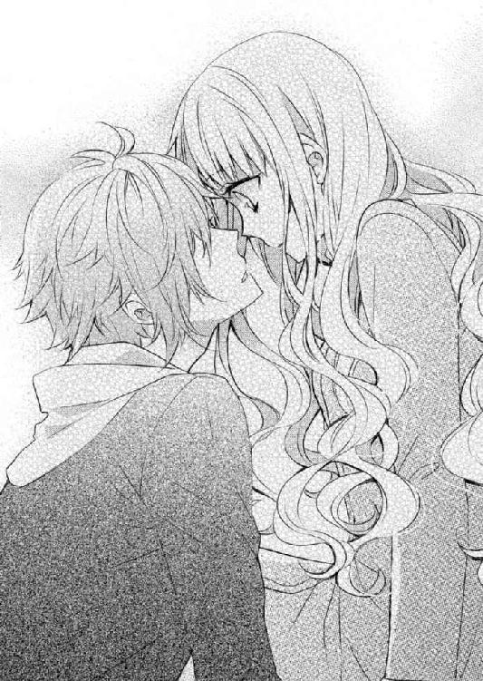
乃亜が必死に体を揺すっても、小鳩は目を覚ましそうにない。
「どうしよう」
浦に連絡して迎えに来てもらうべきなのだろか？
そう思い、以前貰った浦の名刺を取り出そうとした乃亜は、いつの間にか背後に立っていた人の気配に振り返った。
「小鳩......って、俳優の小鳩葉汰？」
背後に立つ若いカップルは、スマホ片手に、好奇心満々の表情で乃亜たちの様子を窺っている。
突然のことに驚いた乃亜が、思わず大きな声で小鳩の名前を連発したせいで、通行人の興味を引いてしまったらしい。
──しまった。
乃亜は自分の軽率さを後悔しながら、力を振り絞って小鳩を抱き起すと、コートのフードを目深に被せた。
「もう。コバヤシさん、飲み過ぎですよ」
小鳩の顔を隠し、乃亜が大きな声をあげると、背後のカップルは「なんだ」と、残念そうな呟き声を漏らした。
「こんな所に、小鳩君がいるわけがないじゃない」
嗜めるような彼女の声に、彼氏が「お前だって、もしかしたらって言ったじゃん」と、非難めいた声をあげた。
乃亜たちに興味を失ったカップルが、そんなことを話しながら立ち去る気配を背中で確認した乃亜は、意を決して小鳩に呼びかけた。
「立ってください。とにかく場所を変えます」
小鳩は有名人で、なおかつ自分の仕事のクライアント。そんな彼を、これ以上ここに放置しておくわけにはいかない。酔いつぶれた姿を写真に撮られたりしたら大変だ。
そう判断した乃亜は、強引に小鳩を立たせた。
長身で膝を大きく伸ばして立ち上がる小鳩は、それでも微かに意識を取り戻したのか、体重のほとんどを乃亜に任せながらもなんとか立っている。
「重いっ！ 歩きますよ。右足出してください。次、左.........」
酒臭い吐息に眉を寄せながら、乃亜は、指示を出して小鳩を引きずるようにして歩かせて、自宅マンションのエントランスへと入っていった。
◇ ◇ ◇
「誰も出ない、どうしよう.........」
乃亜は自宅リビングで、左手でスマホを頰に当て、右手で持っている名刺を眺めながら悲鳴に近い唸り声をあげた。
浦からもらっていた名刺にはプティ・コロンブの固定電話の番号しか書かれていなかった。とりあえずその番号に電話してみたが、呼出し音が虚しく続くだけで、誰かが応答してくれる気配はない。
留守番サービスに切り替わることも、どこかに転送されることもなく鳴り続けるコール音に、乃亜は仕方なく電話を切った。
貴斗なら浦の携帯電話の番号を知っているのだろうけれど、それを聞き出すためには、この状況を説明する必要がある。
「.........」
乃亜は、リビングのソファーで酔いつぶれている小鳩に、恨めし気な視線を送った。
路上に放置するわけにもいかず、成行きで自宅に連れ帰ってしまったけれど、浦と連絡が取れない今、小鳩をどこに引き渡せばいいのか見当もつかない。
警戒をしながら覗き込むと、小鳩は赤く腫れた額に擦り傷を作り、口を開けて熟睡していて起きる気配がない。
小鳩のスマホになら、浦の連絡先が入っているのだろうけれど、勝手にそれを使うことには躊躇いを感じる。それに、きっとロックが掛かっていて、暗証番号がなければ勝手に開くこともできないだろう。
少し待てば、目を覚まして自分で帰ってくれるかな？
そんなことを期待して小鳩の顔をしばらく覗き込んでいた乃亜は、「とりあえず」と呟き、救急箱を取り出しソファーの前に腰をおろした。
そして小鳩の額の傷を消毒すると、傷薬を塗りガーゼで保護した上から、冷却ジェルシートを張り付けておいた。
小鳩のスケジュールはわからないけれど、職業柄、目立つ場所に傷を残すのはよくないとの配慮からだ。
手当をするために額に掛かる前髪に触れた乃亜は、男の髪とは思えない艶やかな感触に微かな感動を覚えた。
それに肌も、近くで見ると驚くほどキメが細かい。
メディアに出る人と一般人では、手入れの仕方が違うのだろうか？ そんなことを考えながら、思わず何度も小鳩の前髪を撫で上げる乃亜は、その手触りに子供の頃家で飼っていたチワワのことを思い出した。
艶やかな茶色い毛並みのロングコートチワワは「マル」という名前で、小さな体に収まりきらない愛情を、いつも全身で表現していた。
自分が愛されているということに疑いを感じていないマルは、乃亜が学校から帰ってくると、振り切れそうな勢いで尻尾を振りながら出迎えてくれるのが常だった。
──そう言えば、小鳩さんはチワワに似ているかも。
子供の頃、ソファーに寝転がりマルを胸に乗せて本を読むのが好きだった乃亜は、人懐っこいマルがもし人間だったなら小鳩のようだったのかもしれないと思いひとり笑った。
手当を終えた乃亜は、名残惜しげに小鳩の髪から手を放すと立ち上がり救急箱を片づけた。
しばらく様子を見ることに決め小鳩に毛布を掛けると、ソファーの前のテーブルに置いてあったノートパソコンにパスワードを打ち込んで起動させた。
マウスを動かし「タイトル未定」のファイルの中に入っていた「下書き」を開く。
──頑張って、言葉を紡がなくちゃ......。
乃亜は自分にそう言い聞かせて、長い時間、自分の中の言葉が聞こえてくるのを待っていた。
松永デザインでの仕事として言葉を探すときには、すぐに自分の中に描かれている世界を表現する言葉が浮かんでくるのに、小説を書こうとすると、途端に言葉が見つからなくなる。
言葉が見えたとしても、夏の蝉時雨のように、ハッキリとした輪郭を持たない大量の言葉の断片が頭の中で渦巻き、悪戯に乃亜の心を混乱させる。
「うん......」
不意に、ソファーで寝ている小鳩が寝返りを打った。
存在を忘れていた小鳩に視線を向けると、鼻先まで毛布を引っ張り上げて気持ちよさそうに眠っている。
集中力が途切れた──と、時間を確認すると、一行も書けないまま一時間もパソコンの前に座っていたらしい。
──書くことを諦めたら、その一時間で本が読めるのに。
そう思うと、自分の時間をひどく粗末に扱っている気がしてくる。
なんとなく憂鬱な気持ちになって黙り込んでいると、小鳩の寝息がやたら耳につく。
「呑気だな」
穏やかな小鳩の寝顔に、思わず笑ってしまう。乃亜は、そっと手を伸ばして彼の髪を撫でた。
優しく何度も何度も小鳩の髪を撫でていると、さっきまでの憂鬱が薄れて、息苦しさが和らいでくるのがわかった。
「マル......」
髪を指に絡めながら、懐かしい名前を呼んでみた。
愛されることに疑いを持たず、自分の愛情も惜しみなく乃亜に向けてくれたマルと過ごした時間は、同時に母親が健在で、乃亜が人の裏側にある淀んだ感情を知る必要のなかった純粋で幸せな子供時代の思い出に直結している。
「あれ......」
小鳩の髪を撫でていた乃亜は、いつの間にか自分の頰が濡れていることに気付き、驚きの声を漏らした。
母親の死も、マルの死も、過去の悲しい思い出として記憶に定着していて、今さら突然泣き出すようなことではない。やっかみがもとで受けたクラスメイトの嫌がらせも、金目当てに媚びてくる大人に辟易していたのも、全ては過去の話だ。
死んだ母親への裏切り行為にも思える父親の再婚でさえ、今となっては受け入れられているつもりなのに......。
自分でもなぜだかわからないまま、瞳から溢れてくる涙が頰を濡らしていく。
けれどもそれが、自分の中の淀んだ感情を洗い流してくれるような気がして、乃亜は涙を止める努力はしなかった。
声を出さずに泣く乃亜は、起こさないように注意を払いながら、小鳩の髪をそっと撫で続けた。
そして泣き過ぎてぼんやりとする思考の片隅で、犬のような少年を主人公にした話を書いてみたいと思った。
◇ ◇ ◇
ピッピッピッ ピッピッピッ
「うん......」
愛用している目覚まし時計のアラームに重い瞼を開けた乃亜は、薄目を開けて寝室のカーテンの隙間から差し込む光を確認した。
──起きなきゃ。
そう思ってはいるのだが、どうにも瞼が重い。
寝起きで処理速度の落ちている思考回路で、昨日泣き過ぎたせいで瞼が腫れて重たいのだと気付いた乃亜は、動きの悪い頭を必死に動かし、昨日の出来事を思い出した。
──昨日は、慌ただしい日だったな。
小鳩からの贈り物のせいで機嫌を悪くした貴斗とプティ・コロンブに行き、浦と打ち合わせをした帰りに貴斗と食事をした。
そして自宅マンション前で酔っ払った小鳩を拾ってしまい、手当てをした小鳩をソファーで寝かせ、いつものように小説を書く努力をしていたら急に涙が溢れてきて......。
「......あれ？」
布団にくるまり、昨日一日の出来事を回想していた乃亜は、その先のことを思い出そうとして眉を寄せた。
昨日、とめどない涙を流しながら、漠然とした小説の構成を思い浮かべたところまでは覚えている。でもその先の記憶がない。
浦と連絡が取れなかったので、小鳩の酔いが醒めて起きるのを少し待つ気でいたのは覚えている。
だけど、小鳩を送り出した記憶がない。
それになにより、自分がお風呂に入った記憶も、寝室に向かった記憶もない。
「......」
恐ろしい想像が脳裏を駆け巡る。
──隣に小鳩さんがいたらどうしよう。
それはホラー映画より恐ろしい展開だが、記憶がない以上、その可能性はゼロではない。
──服は............着ている。
パジャマではなく、帰宅した時のままの服装だ。とりあえず自分が服を着ていることに安堵の息を漏らした。だけど背後に、小鳩がいることもあり得る。
胸に手を当てて大きく深呼吸した乃亜は「よしっ」というかけ声とともに、勢いよく起き上がると同時に体をひねってベッドを確認した。
「......いない」
ベッドの中に、小鳩の姿はなかった。
ぐるりと見渡した室内のどこにも小鳩の姿はないし、耳を澄ませても誰かがいるような物音も聞こえてこない。
「あれは、夢......？」
腑に落ちない思いでベッドを抜け出した乃亜はまず、仕事に行く前に、シャワーを浴びて着替えなくてはと考えた。
着替えずに寝たということは、化粧も落としていない。
──最悪......。
かさつく頰に指を這わせると、自然とため息が漏れてしまう。
遅刻せずにシャワーを浴びて会社に行く段取りを頭の中で組み立てながらリビングに入った乃亜は、ソファーの上で毛布に包まっている小鳩の姿に目眩を感じて近くにあった棚にしがみ付いた。
「やっぱり......夢じゃなかった」
でも目眩を起している場合じゃないと、乃亜は、必死に気持ちを立て直そうとした。
──とにかく起こして、会社に行く前に帰ってもらわなくては。
今日は朝から打ち合わせが入っているし、そうでなくても、性格的に遅刻が嫌いだ。乃亜は、小走りにソファーに駆け寄り、毛布に包まる小鳩の体を勢いよく揺すった。
「小鳩さん、起きてください。朝ですよ。......小鳩さん......」
しつこく体を揺らし続けると、最初は目を開けることを拒み、体をより毛布の中に沈ませていた小鳩も「うぅん......」と、唸り声をあげながら目を開けた。
もそもそと鈍い動きで瞼を開けた小鳩は、乃亜の姿を確認して、驚いたように瞬きを何度もした。
「乃亜ちゃん......ここ何処？」
自分が置かれている状況を理解できない様子の小鳩は、額の冷却ジェルシートを手で確認しながら周囲を見渡している。
「ここは私のマンションです。酔って覚えてないと思いますけど、昨日小鳩さんは私のマンションの前に酔っ払って座り込んでいて、私が帰ってきたらバランスを崩して転んじゃったんですよ」
小鳩は体を起こし、乃亜に申し訳なさそうな視線を向ける。
「ごめん。乃亜ちゃん、昨日のこと酔っていて覚えてないんだけど......」
「大丈夫......」
小鳩が謝罪するのだと思い、そう声を掛けた乃亜は、小鳩に、
「僕、ちゃんとコンドーム着けた？」
と、問いかけられて顔を赤くして語尾を飲み込んだ。
「そ......っそ、そんな心配をしなきゃいけないようなこと、あ、ありませんでしたからっ！」
とんでもない誤解だ。顔を赤くする乃亜の顔を、小鳩は不思議そうに覗き込んだ。
「それは残念。......あれ？ 乃亜ちゃん、泣いた？ 僕、酔って、乃亜ちゃんを泣かせるようなことした？」
その言葉に、昨夜、小鳩の髪を撫でながら泣いた記憶が蘇る。勝手に髪を撫でながら泣いていたことが後ろめたくて、乃亜は、その質問に答えることなく立ち上がった。
「とにかく、私は会社に行かなきゃいけないので、帰る準備しておいてください」
そう言い残してバスルームに向かいかけ、ふと小鳩を振り返った。
「？」
まだ毛布に包まっている小鳩は、乃亜の視線に首を傾げた。
「念のため言っておきますけど、こっち来ないでくださいね」
「うわ～信用ない。僕こう見えても紳士なのに。でも乃亜ちゃんが希望するなら、喜んで背中流してあげるよ」
爽やかな笑顔の小鳩に「とにかくそこを動かないでください」と、言い残して乃亜はバスルームに向かった。
熱いシャワーを浴びながら、昨夜のことを思い出してみたけれど、どれだけ考えても、小鳩の髪を撫でながら泣いた後の記憶がない。
──泣き疲れて、あのまま寝ちゃったのかな？
そう考えるのが一番正解のような気がするけれど、だとすれば、寝室の自分のベッドで寝ていた説明がつかなくなってしまう。
──小鳩さんが、泣き疲れて寝ちゃった私を運んでくれたのかな？
一瞬そう考えて、それはあり得ないと首を振った。
さっきの口調からして、小鳩は乃亜が泣いたことも知らずに朝まで寝ていたのだから。
それに小鳩の性格からして、ベッドまで運んでくれたのなら、そのまま隣で寝ていそうな気がする。
釈然としないままシャワーを浴びた乃亜は、洗面所の鏡で瞼の腫れを確認した。
──どう化粧をしても、腫れを隠せないよね。
貴斗から理由を聞かれたらどう説明しようか。そんなことを考えながら着替えとメイクを済ませた乃亜は、通勤用の鞄を肩にかけリビングに引き返した。
「出かけます。準備いいですか？ ってっ！ ..................小鳩さんっ！ なんで寝ているんですか？ 起きてくださいよ」
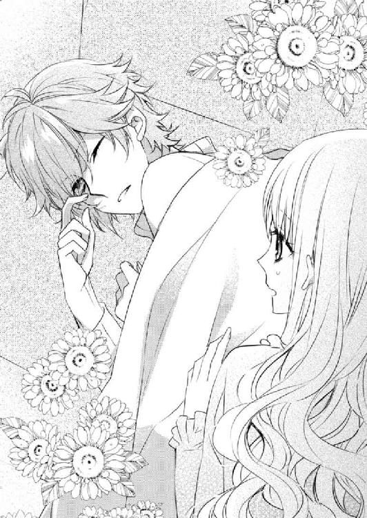
ソファーの上で毛布に包まり再び寝息を立てている小鳩の姿に、乃亜は目を丸くして駆け寄った。
──もう家を出る時間なのに。
焦って体を揺する乃亜を、小鳩は薄目を開けて確認した。
「だって乃亜ちゃんが『そこを動かないで』って言ったから、じっとしていたら眠くなっちゃって」
本気で二度寝をしていたらしい小鳩は、寝ぼけた様子で唇をモニョモニョと動かし、再び瞼を閉じた。
「そういう意味じゃなかったのに。......ちょっ！ ちょっと、目を開けてくださいよ」
乃亜がさらに強く体を揺さぶると、小鳩は再度薄目を開けて、
「あ、目の腫れ少し引いたね。でもやっぱり腫れぼったいから、ダテ眼鏡でもしていった方がいいよ」
と、アドバイスするとまた目を閉じた。
思わず指で触って目元の腫れ具合を確認している間に、小鳩は再び規則正しい寝息をたてはじめる。
「えっ......小鳩さんっ！ ちょっと」
時計を確認しながらさらに強く揺すっても、小鳩はなかなか起きてくれない。
「早くしてくださいっ！ 私は、遅刻したくないんです」
悲鳴に近い声で乃亜が懇願すると、小鳩は瞼を閉じたまま、「チェックアウトは僕がしておくから、先に行きなよ」と、ここをホテルと勘違いしているような返事を返した。
「ここは私の部屋ですぅ」
「じゃあ合鍵置いといてよ。鍵を閉めて出ていくから。鍵は郵便受けに入れておくよ」
こういった状況に慣れているのか、小鳩はそう言って毛布の中に頭まで隠れてしまった。
「だって......」
「僕の方が乃亜ちゃんよりお金持ちだから、物を盗んだりしないよ。それに女の子の体は大好きだけど、下着には興味ないから大丈夫だよ。泥棒なんかして失うには、大きすぎるものを僕は抱えているから」
「......」
確かにその通りなのだろう。
所得だけでなく小鳩の知名度を考えても、彼が乃亜のものを盗むメリットはない。下着に関しては......信じるしかない。
悩む乃亜は、チラリとテーブルの上のノートパソコンに視線を向けた。
パスワードを入れなくては起動できないのだから、中のファイルを見られる心配はないだろう。
それでも一応、寝室に運んでおこう。
「部屋の物、絶対になにも触らないでくださいねっ！ 絶対ですよ！」
時計と毛布に包まる小鳩を見比べ、意を決した乃亜は、部屋の合鍵をテーブルに置き、パソコンを寝室に移動させると小鳩を残してマンションを出た。
７．小鳩さん、改め、小鳩君
その日、仕事を定時で終えた乃亜は、誰にも話しかける隙を与えることなく、大急ぎで会社を後にした。
昨日から引き続き小鳩のことを質問したがっていたマリも、酷く腫れた瞼の原因を問いただしたい貴斗も、朝から殺気立つ乃亜の気迫に気圧されたのか、一度は名前を呼んだものの、
「なにか？」
と、ダテ眼鏡越しに鬼気迫る目つきで乃亜に問い返されて、それ以上言葉を続けることなく、「お疲れ様」と、会社を飛び出していく乃亜の背中に手を振ったのだった。
──ありえない。本当にありえない。
冷たい風が吹く夜道を足早に走る乃亜は、心の中で、そう繰り返していた。
人と関わるのが苦手な乃亜は、自分のくつろげるパーソナルスペースを守ろうとする縄張り意識が極端に強い。
潔癖症というわけではないけれど、自分の作り上げた生活空間を、赤の他人に乱されたくない。
本来、自宅には恋人のような特別な人しか入れたくないのに、たいして親しくもない、というよりほとんど初対面といっても過言ではない小鳩を残して出かけるなんて、本来ならありえないのだ。
──小鳩さんが、私の物を盗んだりしないのはわかっているけど......。
そういう問題ではなく、とにかく早く自宅の状態を確認しないと、気持ちが落ち着かないのだ。
あの状況ではしょうがなかったけれど、どうして昨夜、小鳩を拾ってしまったのだろう。こんなことになるのなら、心を鬼にして路上に放置しておけばよかった。
何度もそう後悔しながらマンションにたどり着いた乃亜は、鍵を開ける時間ももどかしく自宅マンションのドアを開いた。
「......」
そっと中を伺うと、玄関から伸びる短い廊下の先にあるリビングの扉にはめ込まれた摩り硝子から差し込む光に、嫌な予感を覚えた。
一瞬、小鳩が照明をつけたまま帰ったのだろうかと思った。というか、思いたい。
乃亜は、音をたてないようにそっと郵便受けを確認した。
──マンションのエントランスにある郵便受けには合鍵が入っていなかったから自室の扉に据え付けられた郵便受けの方に入っていると思っていたのに......。
そこにも鍵が入っていないのを確認した乃亜は、嫌な予感が的中していないことを祈りながら靴を脱ぐ。その途中で、玄関の隅に揃えて置かれている男物の靴に顔を引きつらせた。
「......小鳩さん、裸足で帰った？」
自分の希望的観測に、乃亜はすぐに「ありえないよね」と苦笑いした。
そして注意深く、足音を忍ばせて廊下を進んだ。
──音は聞こえない。でも......。
扉を開けるなり小鳩といきなり目が合ったりしないようにと、リビングから漏れてくる気配に注意を払いながら乃亜は、腰を低くしてそっと扉を開けた。
細く開いた隙間から中を覗くと、今朝小鳩が寝ていたソファーの背もたれが見えた。
扉の隙間から見える範囲の眺めでは、人の気配がない。いつものひとり暮らしのリビングだ。
小鳩の姿は見えないし、物音もしない。
──いない。本当に裸足で、照明を切らずに帰ったのかな？
そう考えた後で、だとしたら鍵はどこにあるのだろうかと、疑問が湧く。
──小鳩さん、私の鍵、持って帰っちゃったのかな？
困った事態になった。乃亜は焦りながら、とりあえずリビングに入ろうと扉をそっと押し広げた。
「おかえり」
「キャッ！」
驚いて床に尻餅をついた乃亜が横を見ると、膝を抱えるようにしてしゃがみ込んでいる小鳩と目が合った。
扉の隙間から覗くとちょうど死角になる位置で、小鳩が親しげな笑顔で手を振っている。
「おかえり。大丈夫？」
小鳩は、床に尻餅をつく乃亜に手を伸ばした。
触れるのも恐ろしいといった様子で、首を左右に振る乃亜は、床を蹴って小鳩との距離を作った。
「......」
「なにやっているの？」
乃亜の反応に少し驚いた様子の小鳩は、しゃがんだままの姿勢で乃亜に歩み寄り、その距離を縮めた。
縮まった距離を広げるために、乃亜は、また床を蹴った。
乃亜がズズッと床を蹴って後退すると、小鳩がトコトコと前進する。
一定の距離を保ちながら乃亜がリビングから後退を続けていると、小鳩が「あっ！」と小さく悲鳴をあげた。その瞬間、自分の体がぐらりと揺れるのを感じた。
ゴチンッ
いつの間にか玄関まで這いずってきて、三和土から落ちてしまったのだ。
「痛い......っ」
「大丈夫？」
乃亜は、自分が無防備な状態で受けた衝撃に、痛みと驚きと恥ずかしさで呆然としていた。そんな乃亜を、小鳩が心配そうに覗き込んだ。
「......あの、小鳩さん......キャッ！」
身動きが取れずにいた乃亜をどう思ったのか、小鳩は、乃亜の背中に自分の手を滑り込ませて抱き上げた。
「とりあえず、頭冷やそう」
小鳩は細身な体のどこにそんな力があるのか、乃亜を軽々とお姫様抱っこすると、そのままリビングへと運んだ。
生まれて初めてのお姫様抱っこに驚き、言葉が出ない乃亜は、下ろしてほしくて最初は小鳩の腕の中でもがいたが、真剣な顔で「危ないからおとなしくして」と、たしなめられて動きを止めた。
確かにこの高さから落ちるのは怖い。
「......」
落ちないようにと、小鳩の胸に頰を寄せる乃亜は、微かになにかを思い出した。
温かい海に揺られているような同じ感覚を、つい最近、体験したような気がする。
──もしかして......。
昨日、やっぱり小鳩がベッドまで運んでくれたのだろうか？ 乃亜がそう思い至るより早く、足早にリビングに移動した小鳩は、ソファーに乃亜を寝かせた。
小鳩は、冷凍庫に入れてあった保冷剤をタオルに包んで乃亜の頭の下に敷き、昨日自分が使っていた毛布を乃亜に掛けた。
「どう？ 吐き気とかない？」
小鳩は床に膝を抱えて座り、十分ほど様子を見てから、乃亜にそう確認した。
「大丈夫です」
小さな声で答える乃亜は、小鳩の一連の行動を思い出していた。
乃亜をソファーに寝かせ、保冷剤やタオルを用意する際、小鳩は「冷凍庫開けるね」とか「そこのタオル使っていい？」といったように、乃亜の了解を得てから行動に移っていたので、パーソナルスペースを荒らされているような不快感はなかった。
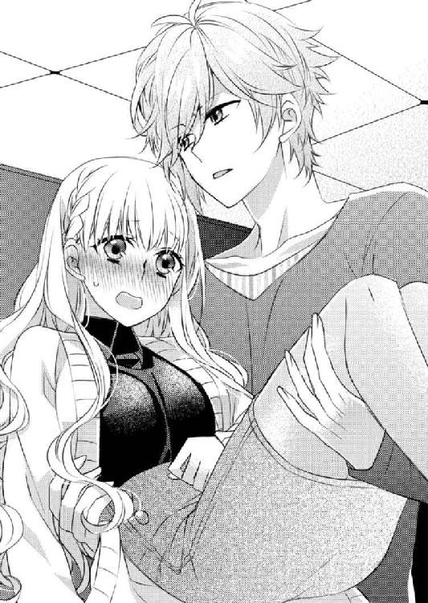
毛布を掛けるときも「昨日、僕が借りた毛布だけど」と、断りを入れてからかけてくれた。
床に座り込んでいる小鳩にチラリと視線を向けると、「なに？」と、視線で問いかけてきた。
乃亜の反応を見逃さないように待ち構えている姿は、なんだか飼い主が遊んでくれるのを待っている子犬のようだ。
──本当にマルに似ているかも。
乃亜は毛布に顔を埋め、心の中で呟いた。でも微かに小鳩の使っている香水の匂いがするのに心を乱され、すぐに顔を上げた。
そしてぼんやりとリビングを眺めた。
めったに人を招かない自宅のリビングに、小鳩がいるということが、不思議と不愉快ではない。
それはきっと小鳩がマルを連想させるうえに、乃亜のパーソナルスペースを侵害しないように気遣ってくれているおかげなのだろう。
「あの......小鳩さん......」
「なに？」
「どうしてここにいるんですか？」
しばらくぼんやりしていた乃亜は、頭をぶつけたことで思わず忘れていた疑問をぶつけた。
合鍵をポストに入れて出ていく約束をしていた小鳩が、なぜかまだ乃亜のマンションにいる。
「ああ、それはね、乃亜ちゃんに教えて欲しいことが幾つかあったのと、頼みたいことがあったのと、お詫びとお礼を言いたかったから」
そう答える小鳩は、立ち上がってカウンターで隔てられているキッチンスペースに行くと、紙袋を持って戻ってきた。
紙袋には、美味しいデリで有名な店の名前が印刷されていた。
「僕は料理も得意なんだけど、乃亜ちゃんの性格からいって、他人が勝手にキッチンを使うの、嫌だろうなって思ったから」
小鳩はその紙袋の中から、小さな容器に入れられた惣菜を取り出してソファーの前のテーブルに並べていく。
「あの......」
「あと、もちろん冷蔵庫も、勝手に開けられたくないでしょ」
そう言って小鳩は、今度はベランダから、ワインのボトルと、小さな箱を持って戻ってきた。
「この季節なら、外でじゅうぶん冷えるから」
テーブルの上に置いた箱は、ガトーショコラで有名な洋菓子店のものだった。
料理とお酒とデザート。その一式をテーブルに揃えた小鳩は、
「泊めてもらったお礼。あと、これのお礼も込み」
と、前髪を搔き上げてみせた。
小鳩の額は、腫れと赤味は消えているが、小さなかさぶたが点々と出来ていた。
ファンデーションで誤魔化せるであろうレベルの傷跡だ。
「酷くならなくて、よかったです」
ホッとした声を漏らす乃亜に、小鳩も嬉しそうに頷く。
「そんなわけだから、起きて大丈夫なら、お礼をさせてよ。で、そのついでに、僕が乃亜ちゃんの部屋に泊まった経緯を教えて」
また床に座ってソファーで休む乃亜を見上げる小鳩は、人懐っこい笑顔を浮かべる。
──マル......。
乃亜は心の中でそう呟き、体を起こして毛布から抜け出した。
◇ ◇ ◇
乃亜が今はお酒を飲みたくないと言うと、小鳩も「じゃあ僕もいらない」と言うので、洋菓子店の箱とワインはとりあえず冷蔵庫にしまい、代わりに炭酸水を二本取り出した。
小鳩の用意してくれた食事を食べながら、昨夜マンションエントランス脇の植え込みで小鳩を見付けて部屋に運んだ経緯を乃亜が話すと、小鳩は困ったように顔をしかめた。
「うわ～全然覚えてない」
しばらく考え込んだ小鳩は、頭を抱え込んで唸り声をあげた。
そして上目使いに乃亜を見て、恐る恐るといった様子で確認してくる。
「僕、乃亜ちゃんに迷惑かけた？ 酔った勢いで、絡んだり迫ったりしてない？」
「......大丈夫です」
絡んだのはきっと、小鳩の髪を撫でながら泣き続けた自分の方だろう。
「ごめん。僕、全然覚えていないんだ」
小鳩は、昨日乃亜に「頑張ってきた自分にご褒美をあげている？」と、問いかけたことも忘れているのだろうか？
そんなことを考えながら、乃亜は、首を横に振った。
「大丈夫です。小鳩さん、酔って静かに寝ているだけでした」
「そう。よかった」
安心した様子で、小鳩は、炭酸水を口に運んだ。
──なんだか、不思議な気分。
小鳩と出会ったのは今週の火曜日。今日は金曜日だから、出会ってからまだ四日しか経っていないのに、小鳩と一緒に自宅リビングで食事をしている。
人見知りが激しく縄張り意識が極端に強い乃亜にとって、本来ならそれはあり得ないことだ。しかも相手は、仕事のクライアントであり、人気俳優。
いろいろな意味であり得ないことだけれど、こうして小鳩と食事をしていることが不思議と不愉快ではない。
「そういえば、僕が送ったネックレス気に入ってくれた？」
「？」
一瞬、小鳩がなにを言っているのかわからなかった。乃亜は、小さな間をおいて「ああっ！」と、間の抜けた声をあげた。
貴斗のもとに届いた薔薇に添えられていたモノが、ネックレスだったらしいということを今頃理解した。
その表情を読み取った小鳩が、不満げに目を細めた。
「さては、箱から出してもいないんでしょう」
「ごめんなさい」
「今どこにあるの？」
「社長室......かな？」
少なくとも昨日は、社長室の窓辺に置かれていた。
今日は社長室に入っていないので、断言はできないけれど、貴斗はクライアントから届けられたものを感情に任せて捨てたりはしないと思うので、ネックレスは薔薇の花に巻きつけられたまま社長室にあるのだろう。
正直に答える乃亜に、小鳩は「ええ～」と、非難めいた声をあげた。
「ごめんなさい」
届け方と、そこに書かれていたメッセージに言いたいことはあるが、送り主を前にすると申し訳なさが先に来る。
「あのネックレス、乃亜ちゃんのブレスレットと似合うデザインだから、今度使ってみて」
一度は非難の声をあげた小鳩は、すぐに表情を切り替えて微笑む。
鮮やかな笑顔を見せる小鳩に、乃亜はペコリと頭を下げる。
「せっかくですけど、恋人以外の人からもらったジュエリーを身に着けるのは抵抗があります」
「クライアントが仕事の資料として渡したものでも？」
「......」
「じゃあ、僕と付き合う？ 僕、相手が乃亜ちゃんなら二股でもいいよ」
乃亜は一度は申し訳なさそうに肩を落としたが、小鳩の茶化すような言葉に、その表情を厳しくする。
「冗談でも、そういうの苦手です」
キッパリとした乃亜の声に、小鳩の顔から笑顔が消える。
「ごめんっ！」
嬉しければ笑って、怒られればしょげる。犬のように素直な反応を見せる小鳩に、拍子抜けしてしまう。
かくりと肩を落とす乃亜に、小鳩がもう一度「変な冗談言ってごめん」と謝る。
「いえ。私こそ。キツイ言い方してごめんなさい。......でも、そういう冗談、本当に嫌いなんです」
「そうだね。乃亜ちゃんは、言葉に対して感じる重みが人と違う。だから何気ない他人の言葉が棘のように刺さって苦しくなるんだよね。本気の冗談と本気の言葉の重みのズレに戸惑うんだ」
「......」
「だから無責任に言葉を排泄する人と話すより、選び抜かれた言葉が綴られている本を読んでいる方が落ち着くんでしょ？」
「どうして？」
──誰にも言っていない私の本音を知っているの？
小鳩に心を読まれたような気がしたけれど、自分がそう感じていることを知られたくない乃亜は、言いかけた言葉を飲み込んだ。
「ねえ、乃亜ちゃん」
「はい」
「そろそろデザートも出さない？」
「そ......そうですね。じゃあ、紅茶を淹れますね」
「ありがとう」
なにを言われるのだろうかと緊張していた乃亜は、どこか拍子抜けした思いで立ち上がった。
「とにかくそんなこと、冗談でも言っちゃ駄目ですよ」
あらためて嗜める乃亜の背中を、小鳩の真剣な呟き声が追いかけてくる。
「......本音だからこそ、拒絶されるのが怖くて冗談にしちゃう人もいるんだよ......」
「あの......」
振り向くと、小鳩が真面目な表情を崩して笑った。
「な～んてね」
「もうっ！ からかわないでください」
ムッとする乃亜に、小鳩は「ごめんね」と、どこか寂しげな声で謝った。
その表情が気にならなくもなかったけれど、なにか言って、また扱いに困る冗談を投げかけられても困る。
「......もういいです」
結局乃亜は、もやもやした思いをそのままに、肩をすくめて小鳩に背を向けた。
デザートのケーキと紅茶をそれぞれの前に置いた乃亜は、嬉しそうな表情を浮かべる小鳩を観察した。
喜びを隠さないその表情は、どうしてもマルを連想してしまう。
「美味しい」
小鳩は、香りを味わうようにティーカップに鼻を寄せた。
「そういえば小鳩さん、紅茶が好きなんですか？」
最初にプティ・コロンブに行ったときに、マユールティーの紅茶を出されたときにも思ったことだ。乃亜は母親が好きだったから知っていたし、小説の中に書いたこともあったけれど、マユールティーはそれほどメジャーな紅茶ではない。
乃亜の質問に、小鳩は目をくるりと回して考えると、満面の笑顔で答えた。
「紅茶が好きって言うより、紅茶の好きな女の子が好き」
「もう」
「だって、本当のことだもん」
「そうだ小鳩さん、私の合鍵返してください」
忘れる前に返してもらわないと。手を差し出す乃亜に、小鳩はズボンのポケットから取り出した鍵をテーブルに置いた。
「これを返す前に、乃亜ちゃんに頼みたいことがあるんだけど」
「なんですか？」
「僕を、ここに居候させてほしいんだ」
「はい？」
仕事に関する頼み事だと思い込んでいた乃亜は、小鳩の言っていることがすぐには理解できずにいた。
キョトンとした表情で見つめる乃亜に、小鳩は、人懐っこい笑顔をみせる。
「僕、料理も掃除も得意だし、家賃だって払うよ」
そう言われて、乃亜はやっと、小鳩がこの部屋に住みたいと言っているのだと理解した。
「なっ！ なに言っているんですか！」
驚いた乃亜がテーブルに両手を着いて腰を浮かせると、テーブルの上の食器がガシャンッと音を立てた。小鳩は、片目を閉じてその音に大袈裟に反応してみせた。
そしてすぐに、また笑顔に戻る。
「僕、このソファーが気に入っちゃったんだ。だから、僕をここに置いてくださいな」
自分が非常識なことを言っている自覚がないらしく、言葉尻にハートでもついていそうな甘えた声だ。
「......」
「最近、眠れない日が続いていたんだけど、昨日はいつになく気持ちよく眠れたんだ。昨日っていうか、今日の昼まで爆睡していたし。だから、しばらくここに泊めてよ」
「い............意味がわかんないです」
乃亜は顔を引きつらせ、やっとの思いで声を絞り出した。
「もちろん、乃亜ちゃんの隣で眠らせてなんて言わないよ。このソファーで寝るから心配しないで」
「じゃあ、このソファー譲りますから、自分の家で使ってください。送料私持ちで送らせていただきます」
「そんな図々しいことできないよ。僕としては、そのソファーを夜だけ使わせてくれればじゅうぶんだよ」
安眠グッズとしてソファーを使いたいから一人暮らしの女の子の部屋に居候させて欲しい。その方が、よほど図々しいのに、小鳩に悪びれる様子はない。
「無理ですっ！」
断言した乃亜は、小鳩の前に置かれている鍵に右手を伸ばした。
乃亜が鍵を取るより早く、小鳩が伸びた乃亜の手を摑んだ。乃亜の右手を左手で摑み、相変わらず人懐っこい笑顔でのたまう。
「変なことしないから、お願い。僕、その辺は本当にジェントルマンだから」
「無理ですっ！」
「トイレは座ってする派だし、女の子の部屋でアダルト見たりしないから。部屋の物、勝手に触ったりしないよ」
「そういう問題じゃないですっ！」
小鳩の手を解こうと、乃亜が左手で小鳩の手を摑んだ。すると小鳩が、その手を右手で摑む。
がんじがらめ。──両手首を摑まれた乃亜が、小鳩を目で威嚇する。
「私、恋人がいます」
「ああ......」
恋人の存在を今思い出したといった様子で、小鳩が唸った。
「そうか......恋人がいる乃亜ちゃんの部屋に、僕が泊まるなんてあり得ないよね」
「はい」
──よかった。納得してくれた。
乃亜がホッと胸を撫で下ろした次の瞬間、小鳩が、ニンマリ笑う。
「ということは、昨日僕がここに泊まったこと、彼氏に知られると困らない？ 出張中に彼女が浮気したと思って、ショック受けない？」
「......え？」
小鳩の質問に乃亜は、頰を引きつらせた。
その表情を見逃さず小鳩は、摑んだ手に力を込めて乃亜を引き寄せる。
「居候させてくれないなら、昨日この部屋に泊まったこと彼氏さんにバラすよ」
「小鳩さん、私の恋人を知らないでしょ」
憎らしいほど爽やかな笑顔を見せる小鳩に、乃亜がそう返した。
食事をしたときに、恋人が海外出張中だとは話したけれど、それ以上のことを詳しく話した記憶はない。
しかし小鳩は、乃亜の抵抗など些細なことといった様子で余裕の表情を見せる。
「じゃあ、あのドーベルマンみたいな社長さんに伝言を頼もうかな。乃亜ちゃんの彼氏さんの親友なんだよね？」
初対面の時に、馴れ馴れしい小鳩を牽制するために、貴斗がそんなことを言っていたのを思い出した。
「うっ......」
「あ、でも直接言うと、その場で殴られそうな気がするから、マリちゃん経由で伝えてもらおうかな」
貴斗に小鳩を泊めたことを知られるのは、ある意味、正樹に知られるよりも面倒なことになりそうな気がする。もちろんそれ以上に、マリに知られるのは危険だ。
というか、破滅への道まっしぐらの予感しかない。
「......」
「でもマリちゃんに知られると、二人でゴシップ誌の表紙を飾ることになっちゃうかもね。僕は、ファンの子に噓をつきたくないから、そうなったら否定コメントはしないよ」
「............お、脅しです......」
「脅す僕が悪いのか、脅される弱みを作った乃亜ちゃんが悪いのか」
抗議を意に介さない様子の小鳩に、乃亜は、すっかり脱力してしまった。
「助けてあげたのに......」
せめてもの恨み言を口にしても、小鳩は涼しい顔で「そのお礼はちゃんとしたよ」と、テーブルの上に視線を落とすだけだった。
完全な敗北に、両手を小鳩に摑まれたまま乃亜はうな垂れた。
「昨日のことは、二人だけの秘密にしようね」
──あ、悪魔......。
罵りたいけれど、あまりの展開に言葉も出ない。
「そんなわけで、しばらく泊めてね」
弾むような小鳩の吐息が、乃亜の髪を揺らす。
「.........はい」
完全に戦意喪失した乃亜は、消え入りそうな声で頷いた。
そんな乃亜に、小鳩が追い打ちをかける。
「それから僕のことは『小鳩さん』じゃなくて『小鳩君』って、呼んでね」
「............」
もう声を出す気力もない。乃亜は、小鳩のそのリクエストに力なく頷いた。
８．眠れぬ夜と、眠れる夜
「なんですか？」
湯上りに水を飲もうとリビングに入った乃亜は、ソファーの向こう側で手招きをする小鳩に不機嫌な視線を送った。
結局、鍵を返してもらえないどころか、居候させることになってしまった。
同居の許可を強引にもぎ取った小鳩は「じゃあ必要なものを買ってくる」と、出かけて行ったので、その隙にお風呂に入っていたのだが、いつの間にか戻ってきていたらしい。
「そんな怖い顔しないでよ」
相変わらず、人懐っこい笑顔を浮かべる小鳩がしつこく手招きをするので、乃亜は諦めて小鳩に歩み寄った。
「で、なんですか？」
「ほらほら、そんな怖い顔しない。せっかく一つ屋根の下で一緒に暮らすんだから、仲よくしようよ」
「......」
「ねえ？ 乃亜ちゃんて、いつもそんな恰好で寝るの？」
小鳩は、乃亜の全身に視線を走らせた。乃亜は、ジーンズと薄手のトレーナー、その上にパーカーという服装をしている。
小鳩がいるのにパジャマ姿でウロウロするのは無防備。そう思ってラフな部屋着を選んだのだけど、確かに寝るには不自然な服装だ。
「寝る前に、もう一度着替えます」
「僕のことなら、警戒しなくていいよ。僕は、気持ちよく寝たくてここにいるんだから」
そう言われても「はいそうですか」と、納得するわけにはいかない。
「いつもそうしているんです。だから、気にしないでください」
さらりと噓をつく乃亜に、小鳩は「そんなことより」と、ソファーを叩いた。
「ここに来て」
「......」
「買い物のお土産を渡したいだけだから、警戒しなくても大丈夫だよ。もし襲う気なら、もっと前にそうしているよ」
小鳩は、露骨に警戒する乃亜にへらりと笑う。
確かにそうなのだろう。さっきから二人きりでいるのだから、小鳩にその気があれば、とっくに行動に移しているはずだ。
そう納得してソファーの背もたれ越しに小鳩を確認すると、ソファーの背もたれが視界を遮っていたので気付かなかったが、小鳩は床に買ってきたのであろう商品を並べている。
「なにやっているんですか？」
ソファー越しに、床に広げられた商品を覗き込んだ。
「ほら急にここに住むことになったから、いろいろ必要な物を買ってきたんだ」
そう言って小鳩は、新品の歯ブラシを振ってみせた。
その他にも、歯磨き粉、ヘアブラシ、髭剃り、スウェットといった生活に必要な物の他に、漫画やゲームといった時間潰しの道具が広がっている。
──本気でここに住む気なんだ。
呆れすぎて、もうどうでもよくなっている乃亜は、それらをぼんやりと眺めた。
乃亜がやっと近寄ってきたことが嬉しいのか、小鳩はご機嫌な様子で鼻歌を口ずさみながら店の袋をガサゴソ探り始めた。
「あ、あった。これこれ」
そう言って小鳩は、細長い紙袋を乃亜に差し出した。
「なんですか？」
「開けてみて」
包装紙は、乃亜もよく行くマンションの近くの雑貨店のものだ。手触りからして、柔らかい布の中に小さな粒が沢山詰まっているのがわかった。
「お手玉？」
手触りから感じた感想を口にした。
「さあ？」
開けることを促すように、小鳩は笑顔を浮かべる。確かに開けて中を確かめた方が早い。乃亜は「ありがとうございます」と、お礼を言って開けた。
細い指先で袋を止めているテープを剝がし、袋を傾けると、ピンク色のタオル生地の塊が乃亜の掌に滑り落ちてきた。
「なにこれ？」
「温めて使うアイピロー。しかもウサギちゃん型」
その言葉に、あらためて掌の上の塊を確認すると、ピンク色のタオル生地のそれはウサギの形をしている。細長い胴体に垂れ下がった長い耳のウサギは、目を閉じていて、乃亜の掌で熟睡しているように見えた。
「可愛い～」
思わずテンションが上がる乃亜に、小鳩は「でしょう」と、得意気に首を反らせて鼻を前へと突き出す。
その姿は、乃亜の喜びを自分の喜びと感じていたマルのそれと重なる。
──もし小鳩君に尻尾が付いていたら、千切れそうな勢いで振っているんだろうな。
ついそんなことを考えてしまう。
「ねえ、せっかくだから使ってみてよ」
乃亜を見上げる小鳩が言った。
「うん」
頷くと、小鳩が立ち上がり乃亜の掌からピンク色のウサギを取り上げた。
「僕が温めるから、乃亜ちゃんはソファーで待っていて。電子レンジ借りるね」
素早くキッチンに向かう小鳩は「これ、やってみたかったんだ」と、言いながら、ウサギの中から取り出したものを電子レンジで温めはじめた。
「......もう」
気が付けば、全てが小鳩のペースだ。
呆れながらも、それが不思議と不愉快ではない。乃亜は、言われるがままにソファーに腰を下ろした。
「横になった姿勢で使った方が、リラックスできると思うよ」
ソファーに座った姿勢で待っていた乃亜に、戻ってきた小鳩が言う。
「でも......」
「大丈夫。僕ここにいて動かないから」
小鳩は床に座り込むと、乃亜の右手を取り、自分の頭の上に乗せた。マルの毛並みを思い出させる柔らかい髪が、乃亜の指先に触れる。
「......」
「こうしていれば、乃亜ちゃんが目を閉じていても僕が動くのがわかるでしょ」
小鳩の髪に触れていると、昨夜泣いたことを思い出して少し気恥ずかしい。
「うん......」
乃亜は、小鳩の意見に従ってソファーに身を横たえ、彼の髪から手を離して体を動かした。
肘掛けとクッションを使って首の角度を調節した乃亜が瞼を閉じると、小鳩がアイピローを乃亜の瞼の上に乗せた。
じんわりとした温かさが、瞼から伝わってくるのと同時に、小鳩がソファーを背もたれにして床に座る気配を感じた。乃亜の脇腹に小鳩の頭が軽くのしかかるのを感じると、小鳩は自分の頭に乃亜の手を乗せた。
──マル。
洋服越しに感じる小鳩の頭の重さと、髪の手触りに、乃亜は愛おしげな吐息を漏らした。
「ねえ、なにか話してよ」
じんわりとした暖かさに身を任せていると、小鳩が言った。
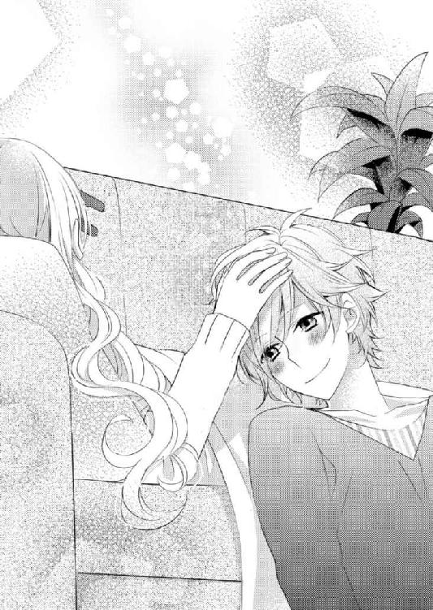
「え？」
「乃亜ちゃん、いつも言葉を選び過ぎて、口数が少なくなっちゃうでしょ？ だからこうしている間だけ、乃亜ちゃんが思っていることを、そのまま言葉にしてみてよ」
「......」
「ね、おとなしくしている僕へのご褒美」
そう甘えた声で言われると、確かにこうしている間、小鳩は退屈だろうなと思った。
「えっと......なにを話せばいいですか？」
「そうだな......じゃあ、乃亜ちゃんは、小学校の頃はどんな子だった？」
「小学校の頃......」
乃亜が言葉を探そうとすると、小鳩が「考えちゃ駄目。思い出したこと、そのまま話して」と、話すことを促した。
「お友達とどんな遊びをした？ 給食で好きだったのは？ 一年生の頃、一番印象に残っている思い出は？」
考える時間を与えない矢継ぎ早の質問に、乃亜は思わず「おトイレ」と、呟いた。
「え？ 行きたいの？」
「違います。小学生の女の子って、なんでも一緒に行動したがるんですよ」
乃亜は、話を続けた。
「どこに行くのも、なにをするのも一緒。......私、そういうの苦手なんです」
「ああ。わかる」
嫌いそう。と、小鳩が小さく笑った。
「だから小学校に入学してすぐの頃、クラスの女の子に『一緒におトイレに行ってあげる』って、誘われて......」
小学校一年生の乃亜は、クラスの女子の中でボス的な存在だった子に「一緒におトイレに行ってあげる」と声を掛けられて、酷く戸惑った。
今、自分はトイレに行きたいと思っていない。それ以前に「行ってあげる」ということは、相手は、自分が行く必要がないのに、乃亜のために同行してくれると言っているのだ。
小柄で幼稚園の年長さんの時代に、何度も年少さんと間違えられた乃亜にしてみれば、自分は小学校一年生にもなっても、ひとりでトイレに行けない幼児だと勘違いされているのだろうかと、不安になった。
だからといって、親切心で声を掛けてくれた相手に怒るのは失礼だ。
そう判断して、「おトイレぐらい、自分で考えて、ちゃんとひとりで行けるから大丈夫だよ」と、返事をした。
幼かった乃亜としては、相手の親切心を傷つけないよう十分に配慮したつもりだったのに、激怒した相手の女子によってその日のうちに「お高くとまった嫌な子」と、レッテルを張られてしまった。
「......と、いうことがありました。で、めでたく孤立した私は、教室の隅っこで読書ばかりしていました。..................小鳩君、笑っていますね」
促されるままにそこまで話した乃亜は、話し終えて、頰が熱くなるのを感じていた。
しかもその女子は、それ以後ずっと乃亜を目の敵にして、中学校を卒業するまでことあるごとに乃亜に絡んできたというオマケ話もあったのだが、とりあえずは黙っておいた。
もっと言えば、別の高校に進学した後も、わざわざ電話をかけてきて乃亜の心をえぐった。
乃亜にとっては暗黒時代の思い出。そう判断してずっと封印していた話に、小鳩は、肩を揺らして笑いを押し殺している。そして最後に、こう感想を述べる。
「乃亜ちゃんらしいね。安心した」
「安心？」
「うん。相手を尊重して言葉を選べば選ぶほど、相手とのズレに悩む結果になる。そういう小さな出来事を積み重ねて、今の乃亜ちゃんが作られたんだなって。......読書が好きで、騒がしい女子の付き合いが嫌いで、じっくり言葉を探して話す乃亜ちゃんは、昨日今日、突然できあがったんじゃなくて、長い時間を積み重ねて育まれたんだね」
「......」
過去の忌まわしい思い出を、小鳩に「乃亜ちゃんらしい」と言われるのは、不思議と嫌ではなかった。
他人に言われて初めて、嫌な思い出も、自分の性格を育てるのに必要な出来事だったのだと感じられた。
それと同時に、ふと疑問を感じた。
「あれ？ 私、読書が趣味だって、小鳩君に話したことありましたか？」
「ううん。でも、この部屋を見ればわかるよ」
そう答える小鳩が、首を動かして部屋を見渡すのがわかった。
確かにリビングにも本棚を置いていて、本棚から溢れた書籍が床にも積まれている。その状態を見れば、言わなくても乃亜の趣味が読書だということは、誰にでもわかるはずだ。
「小鳩君も、読書好きですか？」
「僕こう見えても結構読書家だよ」
もし小鳩が、自分の本を読んでいたら......。
乃亜の不安に気付く気配のない小鳩は、少年向けの週刊誌で連載している漫画の題名を並べていった。
少年漫画を読まない乃亜でも知っているような有名な漫画から、聞き覚えのない漫画まで、小鳩はタイトルを並べていく。
「知らないタイトルもあるけど、それ全部漫画なんじゃないですか？」
「うん。だって漫画の方が、読みやすいもん」
「小説は、読まないんですか？」
「夏目漱石なら、学生の頃に課題で読んだよ」
「そうですか」
「あと、ダサイオサム君？」
「それきっと、太宰治です」
乃亜は、ホッとして小さく笑った。
なら小鳩はきっと、笹原ノアなんて作家のことは知らないだろう。
「乃亜ちゃんは、どんな本が好き？ 乃亜ちゃんが勧める小説なら、読んでみようかな」
「.........」
小鳩の質問に答えずに、乃亜は、アイピローを握って体を起こした。
「もう、温かくなくなってきたから」
小鳩と小説について会話を広げることに抵抗を感じた乃亜は、そう説明して、ウサギのアイピローを小鳩に渡した。
「そう。じゃあ、お話はここまで。また乃亜ちゃんのお話聞かせてね」
小鳩が、自分の質問を無視されたことを気にしている様子はない。
「うん」
無視したことに後ろめたさを感じる乃亜を小鳩が見上げる。
「リフレッシュできた？」
そう問われて周囲を見渡すと、視界が明るく頰が暖かい。
「わぁっ！ 世界が明るい」
思わず声を漏らす乃亜に、小鳩は、満足げな表情を見せる。
「よかった。じゃあ後は、よく眠れるようにカモミールティーを淹れるね」
キッチン借りるよ。そう言い残して、小鳩は立ち上がった。
その背中を見送り、改めて小鳩が買ってきたものを眺めた。
歯ブラシ、髭剃り、漫画、ゲーム、お菓子.........髭剃り以外は、中学生の男子の荷物と言われれば、信じてしまいそうな品ばかりだ。
──大きな子供みたい。
自然と微笑んでしまった乃亜は、立ち上がり、物置代わりに使っている部屋に向かった。
そして今は使っていない籐で編んだカゴを三つ抱えてリビングに戻ってきた。
「これ、荷物の収納に使ってください」
「乃亜ちゃん、ありがとう」
乃亜の思い付きの行動に、小鳩は、語尾に幾つものハートマークが付いていそうな声でお礼を言った。
そしてカモミールティーを飲む乃亜の脇で、床に広げていた品を、いそいそとカゴに収めていく。
「よかった」
「なにがですか？」
「乃亜ちゃんが、優しくしてくれて」
「......ぅ」
そう言われると、自分が酷く悪い人間だと思われているような気がしてしまう。
そんな乃亜の心を察して、小鳩が手を左右に振る。
「そうじゃなくて、僕だって自分がとっても強引なことをしている自覚はあるよ。乃亜ちゃんはすごく迷惑しているのもわかっている。だから優しくされると、迷惑でも受け入れてもらえたんだって、嬉しくなるんだ」
「自覚があるならどうして？」
呆れる乃亜に、小鳩は肩をすくめる。
「だって眠れない夜を、ひとりで過ごすのは寂しいよ。迷惑でも、少しの間だけここにいさせて。ちゃんと眠れるようになったら、出ていくから。それまで、なんでもするからお願い」
両手を合わせて拝まれると、今飲んでいるカモミールティーやアイピローも、強引に居候させてもらう小鳩なりの気遣いなのだろう。それに変な下心を見せる気配もない。
──小鳩さん、そうまでしてこのソファーで眠らなきゃいけないのかな？
それは不思議に感じるけれど、逆の考え方をすれば、そうまでしてでもひとりでいたくないほど、小鳩はなにかに追い詰められているのかもしれないとも思う。
それは昨日、小鳩の髪を撫でながら泣き続けた自分の姿に重なる。
なにに疲れて、なにが苦しかったのかさえわからないけど、昨日の自分は、確かに小鳩の存在に救われた。
それにさっきも、小鳩の髪に触れながらアイピローをして話す時間は、決して不愉快ではなかった。
「.........しょうがないですね。しばらくだけですよ」
──うぅっ！ 見えないはずの、尻尾が見える。
小鳩は満面の笑顔をみせて、何度も大きく頷いた。
◇ ◇ ◇
カモミールティーを飲み終えた乃亜は、寝室へと引き返した。
「よしっ」
乃亜は両手で自分の頰を叩くと、普段は寝るまで読んでいた本を置くのに使っているサイドテーブルを引きずった。
ベッドを腰掛けにして、文章を書くのにちょうどいい角度にサイドテーブルを移動させると、その上にノートパソコンを乗せ立ち上げる。
パスワードを打ち込み浮き上がる画面を、乃亜はわくわくする気持ちで待ち構えた。
パソコンが立ち上がると、新しいファイルを作り文字を打ち込んでいく。漢字変換の間も惜しいほど、自分の中から言葉が溢れてくる。
──まずは、新しく書きたいと思う物語の登場人物。
主人公だけじゃなくて、主人公に関わる一人一人の、名前、年齢、外見、家族構成や趣味、生きていくうえでの絶対的な目標、そういったことを書き込んで、実際に会うことも触れることもできない人たちの命を感じる。
「......あれ？」
言葉を紡ぐことに熱中していた乃亜は、ふと喉の渴きを感じた。
時計を確認すると、深夜三時。
ずいぶん長い時間が経っていた。
乃亜は、経過した時間よりも、自分が息苦しさを感じることなく、文章を書くことに没頭していたことに驚いた。
「こういうの、久しぶりだな」
明日は土曜日だからもう少し書いていたい気持ちもあるけれど、会社員としての日常がある以上、生活リズムを大きく崩さない方がいい。そう判断した乃亜は、データを保存してパソコンを閉じた。
寝る前に水が飲みたい。乃亜は、小鳩を起さないようそっとリビングの扉を開けた。
床に置いてある間接照明の灯りだけが灯されているリビングは薄暗く、小鳩が起きている気配はなかった。
──小鳩君、眠れたかな？
眠れないと話していた小鳩の様子が気になり、足音に注意しながらソファーに歩み寄った。
見ると、小鳩は鼻先まで毛布を被り、瞼を閉じて規則正しい呼吸をしている。
──よかった。
安堵した乃亜は、小鳩を起こさないよう注意しながらその髪に手を伸ばし、柔らかい髪の手触りにホッと息を吐いた。
人の温もりに、意識していなかった疲労感が一気に込み上げてくる。
誰にも頼らず生きていける人になりたい。──そう思っているのに、同じ空間に誰かがいるということに驚くほど安心している自分がいる。
そんなことを不思議に思いながら、しばらく小鳩の髪を撫でていた乃亜は「おやすみなさい」と囁き、水を飲みリビングを後にした。
◇ ◇ ◇
乃亜がリビングの扉を閉め寝室に引き返していく気配を確かめて、小鳩は目を開いた。
体を起こして、さっきまで乃亜が触れていた髪に自分の手を伸ばす。
「......」
小鳩は、乃亜の触れた場所を確かめるように自分の髪を撫で、乃亜のぬくもりを探すようにぼんやりと掌を眺める。
そして「おやすみ」と呟いて、再び毛布に潜り込み目を閉じた。
そんなことをしても、簡単に寝つけないのはわかっている。
好きな女の子の部屋に強引に転がり込んで熟睡できるほど、自分が図々しい性格ではない自覚はある。
「それでもいいんだ.........」
誰に言うともなく呟き、毛布を鼻の上まで引き上げた。
乃亜が苦しまないのなら、泣き疲れて眠るまで泣くようなことがないのなら、自分が眠れないなんてどうでもいい。
そんなことを考えながら、小鳩は、再び瞼を閉じた。
９．小鳩君、失踪中
小鳩と一緒に過ごす週末は、意外に快適なものだった。
仕事があるのか、お昼ぐらいに出かけていった小鳩は、夕方になると食材を手に戻ってきて、キッチンを使う了承を得て、二人分の夕食を作ってくれた。
レトルトを上手に利用しながら作る小鳩の料理は、手際も味もよく、乃亜が手料理を振る舞うのが恥ずかしくなるほどだった。
乃亜は特に、小鳩が作ってくれた海老のビスクが気に入った。
レトルトのビスクソースに少し手を加えて、ボイルした海老を入れ、生クリームを落としただけなのに、その味はどこのレストランで食べたものよりも美味しく、乃亜を驚かせた。
「小鳩君って、本当に何でも器用にこなしますね」
小鳩の料理の腕前と、日々の活躍を鑑み、しみじみと感嘆してしまう。
そんな乃亜に、小鳩は「それが問題なんだよね」と、肩をすくめた。
「昔から器用で、たいていのことは簡単にこなせちゃうんだよね。だから逆に、なかなか本気になれるものが見付からないんだ」
「それはそれで、羨ましい話です」
素直に感心する乃亜に、小鳩はイヤイヤと手をヒラヒラさせる。
「なかなか本気になれるものがないっていうのも寂しいものだよ。それでやっと見つけた本気になれることが『好きな女の子を喜ばせること』なんだ」
平然と言ってのける小鳩に、乃亜が目を細める。
「ひとつでも、本気になれるものがあってよかったですね」
嫌味のつもりで言ったのに、小鳩は嬉しそうに頷いた。
「本当に良かったよ。僕は、ある女の子に恋をして、初めて世界がリアルに感じられるようになったんだ」
「はいはい。よかったですね」
「うん」
感情を込めずに拍手する乃亜に、ある疑問が湧く。
「小鳩君って、失恋したことありますか？」
小鳩のように、容姿にも才能にも恵まれて完璧に見える人間でも、ままならない思いというものがあるのだろうか？
そんな乃亜の疑問に、小鳩はあっさり首を横に振る。
「失恋なんて、したことないよ。僕がするわけないじゃん」
悪びれる様子もなく言われてしまうと、呆れるよりも、小鳩らしくて可笑しくなってしまう。
「小鳩君らしいです」
「あ、信じてないでしょ」
ムッと唇を尖らせる姿も、また乃亜の笑いを誘った。
そんなやり取りをしながら夕食を一緒に食べて、お風呂に入った後は、小鳩の頭を撫でながらアイピローをして、最後に暖かいものを飲んで寝室に向かう。
それが二人の日課になりつつあった。
アイピローをする間、小鳩は当然のように乃亜にお話をねだるので、乃亜も求められるまま、色々な思い出話を小鳩に聞かせた。
小鳩に「乃亜ちゃんにとって、恋人ってどんな存在？」と、聞かれたときは「裏切りたくない大事な人」と、答えた。
乃亜が精神的に一番辛かった時期を助けてくれたのは正樹だった。だからそのお礼の意味も込めて、正樹を悲しませるようなことはしたくないし、正樹の望む自分でいたいと思う。
「ずっと一緒にいて欲しいから、あの人が好きでいてくれる人間になりたい。そう思って努力しています」
そう話すと、小鳩は「僕にはよくわかんないな。乃亜ちゃんは、乃亜ちゃんのままでいいのに」と、興味なさそうに呟いた。
イケメンで売れっ子俳優の小鳩は、ずっと人生の明るい場所を歩いてきた。だから、地獄に垂らされた一本の蜘蛛の糸にしがみついて、ようやく明るい場所に登ってきた乃亜の気持ちがわからないのだろう。そう思うと、少し羨ましい。
そうやって他愛もない会話を楽しんだ後でパソコンに向かうと、楽しみながら言葉を紡ぐことが出来た。
◇ ◇ ◇
二人で週末を過ごした乃亜は、清々しい気分で月曜日に出社した。
でもすぐに、その清々しさは打ち砕かれた。
「小糸さん、大変なことになったね」
始業時間までまだ間があり、人もまばらなオフィスに入ると、珍しく先に来ていたマリが乃亜目掛けて一目散に駆け寄ってきた。
相変わらず、朝の挨拶もなく自分の話したいことを話すマリに、乃亜はとりあえず「おはようございます」と、返す。
新聞を握りしめて駆け寄ってきたマリは、そんな乃亜に非難の視線を向ける。
「なに呑気なこと言ってるのよ」
「呑気って......。なにかあったんですか？」
「小糸さん、ニュースとか新聞を見てないの？」
「見ていますけど、なにか大きな事件ありましたか？」
「じゃあ、なんで知らないのよ」
乃亜の問い掛けに、マリは、苛立った様子で持っていた新聞を広げ、乃亜の顔の前に突き出した。
マリが握りしめていたのはスポーツ新聞。その中でも、どちらかと言えば怪しいゴシップニュースや風俗情報に力を入れていて、乃亜が手にする種類のものではない。
その新聞の一面に、でかでかと『人気俳優 小鳩葉汰失踪か？』という見出しとともに、小鳩の写真が掲載されている。
「ええ～っ！」
予想外の見出しに、さすがの乃亜も、悲鳴に近い声をあげた。
小鳩は、昨夜もリビングのソファーで気持ちよさそうに寝ていたし、朝だって、朝食を作って乃亜を送り出してくれた。
目の前の記事に目を走らせた乃亜は「あっ」と、声をあげた。
「ほらこの見出し、最後に『？』が付いていますよ」
衝撃的な見出しの末尾にクエスチョンマークをつけるのは、不確かな情報をまことしやかに語るゴシップニュースでは、お約束の手口だ。
そんな情報に一瞬でも踊らされた自分を恥じながら、乃亜はマリを見た。
マリは、わかってないわねと、首を横に振る。
「これは昨日の新聞。もうネットでは、小鳩君失踪で大騒ぎなんだから。ネット情報だと、土曜日から小鳩君の姿を見た人がいないらしいわ」
「まさか......。失踪なんて、そんなことありえませんっ！」
「なにを根拠にそう言っているのよ」
「だって......」
まさか、土曜も日曜も小鳩と一緒にいたとは言えない。
「それどころか、誘拐されたんじゃないかって書き込みもあるのよ」
「誘拐っ！」
思わず大きな声をあげてしまった乃亜は、両手で口を抑えて背中を丸めた。そして声のトーンを落として「そんなこと、ありえないですよ」と、否定した。
「熱狂的なファンが、言葉巧みに小鳩君をマンションにでも誘い込んで、監禁しているかもしれないって噂よ。ほら小鳩君って、純粋だから悪い女の子に騙されちゃいそうだし、心配だわ」
「純粋......」
誰が？ と、頰を引きつらせる乃亜にはかまわず、マリはなおも続ける。
「とにかく、小鳩君は失踪しているの。それに関しては、確かな証拠があるんだから」
「......」
人差し指を立て声のトーンを下げるマリに、乃亜も固唾を飲んだ。
「だって私がメール送っても電話を掛けても、連絡をくれないのよ」
「......そう、ですか」
「無事でいるなら、私が何回も連絡しているのに、返信くれないなんて変じゃない。事故とか重病とか、いろいろな噂が流れているんだけど、もしかしたら誘拐の可能性が一番高いのかもしれない......。だって事故や病気なら、普通、一度くらい返信くれるはずでしょ？」
それを失踪や誘拐の根拠にするのはどうかと思うが、マリは本気で小鳩の身を案じているらしい。
「そのうち連絡あるんじゃないですか？」
そんなことを話している間に他の社員も出社してきた。
乃亜からなんの情報も引き出せないと理解したマリは、渋々といった様子で自分の部署に引き上げていった。
その背中を見送って、乃亜も仕事の準備を始めた。
パソコンを立ち上げ、まずはメールのチェックをしようとマウスを動かしたが、ふと気になってインターネットにアクセスした。
そして「小鳩葉汰」「失踪」とキーワードを入れて検索してみると、マリの言っていたとおり、小鳩失踪の見出しが幾つも出てきた。
中には確かに、誘拐と騒いでいる書き込みもある。
「情報って興味がないと、存在しないのと同じ状態になるんだ......」
昨日、一昨日と、小鳩と過ごした休日と、ネットの中の情報がかけ離れていて、とても同次元の出来事には思えない。
まるで別次元に迷い込んでしまったようようだと、乃亜は幾つかを内容を確認しながら唸った。
比較的確かと思われる情報を集約すると、どうやら小鳩は、金曜日に体調を崩したとの理由で雑誌の取材をキャンセルし、それ以降の仕事も休んでいるらしい。
マンションの前で小鳩を拾ったのは木曜日。金曜日といえば、ちょっと食材を買ってきた以外は、ずっと乃亜の家のリビングで寝ていたと言っていた日だ。
そして強引に居候を始めた日でもある。
土曜日も日曜日も、小鳩はどこかに出かけていた。だからてっきり仕事に行っていると思っていたのに。
「じゃあ......」
──小鳩君、どこに行っていたのかな？
悩む乃亜の背後から「仕事中に、なにやっているんだ？」と、低い声が降ってきた。
驚いて振り向くと、腰を屈めた貴斗がパソコンの画面を覗き込んでいた。
「貴......じゃなく社長......あの......」
慌てる乃亜に、貴斗は「冗談だよ」と肩を叩いた。
「俺も気になるから、今から浦氏に会ってくるつもりだ」
「あ......」
「一緒に行くか？」
「はい」
乃亜は即答して、すでに歩き出している貴斗の背中を追った。
そんな二人に、マリが「私に連絡してって、小鳩君に伝えてよ」と、叫んでいたが、返事をしなかった。
◇ ◇ ◇
浦に会えば、小鳩失踪など根も葉もない噂だと一笑に付してもらえると思っていたのに、その期待はあっけなく打ち砕かれた。
「連絡取れなくて、私も困っているんですよ」
二人の訪問を出迎えた浦は、弱く笑った。
それでもたいして困った印象を受けないのは、浦の穏やかな雰囲気のなせる技なのだろうか。
「噂じゃなかったんですか？」
貴斗の問いに浦が深く頷く。
「金曜日に突然、『しばらく仕事を休みたい』と電話があって、それっきり連絡が取れないんですよ。電話を掛けても、呼出し音も鳴らずに留守電に切り替わるし、メールの返事もない。困ったものです」
「それは......」
なかなかの一大事だと思うのだが、浦の口調はどこまでも穏やかだ。
「スケジュールの方は？」
貴斗の質問に、浦は軽く手をヒラヒラさせる。
「それは大丈夫です。今回プティ・コロンブの拡大準備のために、もともと小鳩のスケジュールは余裕のある組み方をしていました。ある程度の融通はききます」
ある程度の融通がきく......という言い方は、連絡が取れなくても困らないという意味ではないのだろう。
「小鳩さんは、よくこういうことをする人なんですか？」
「いえ、初めてです。ああ見えて小鳩は、真面目な性格ですので。受けていた仕事をキャンセルしたことも、今までに一度しかありません」
──一度......あるんだ。
乃亜は小さく肩を落としたが、マリが、小鳩は小学生のうちから芸能活動をしていると話していたとを思い出した。幼い頃から、それだけ長く仕事をしていれば、一度くらいはそういうこともあるのかもしれない。
「......」
──どうしよう。小鳩君が、うちにいるって言った方がいいのかな？
「なかには誘拐説なんてものもあるようですけど、さすがにそれはないと思います」
「まあ彼の場合、誘拐というより、自分から進んで女性についていって帰ってこないとかはありそうですが」
皮肉交じりに呟く貴斗は、小鳩がクライアントだったことを思い出し、浦に気まずそうな視線を向け「失礼」と、咳払いした。
「まあ、あり得ない話でもないですね。......小糸さん、どうかされました？ 少し顔色が悪いような」
小鳩のことを打ち明けるべきか悩んでいた乃亜は、浦に尋ねられて慌てて首を振る。
──こんな会話の後に「実はうちにいます」なんて言い出せない......。
──今ここで打ち明けなくても、この後、小鳩君を追い返せば問題ないよね。
「気のせいですっ！ 大丈夫ですっ！」
二人の視線を受け、乃亜は沈黙を貫くことに決めた。
小さく咳払いをして「私のことより、小鳩く......さんの話を」と、ぎこちなく微笑んだ。
その意見に、貴斗が頷く。
「しかし、では何故、失踪や誘拐なんて噂が流れたんでしょうね」
「まあ突然仕事をキャンセルや延期した上に、本人と連絡が付かない状態ですから。そういった憶測を立てて、面白おかしく騒ぎ立てる人は現れますよ。良くも悪くも、注目されてなんぼといった仕事をしていますから」
さらりと流す浦に、注目されることへの馴れを感じる。
ならばこちらがこれ以上、掛ける言葉はない。そう判断した貴斗が、「早く連絡が来るといいですね」と、儀礼的に浦を励ました。
その後で、浦からパンフレットで紹介したい商品の写真を預かり、デザインの方向性の提案を数種類出すことで話を纏めた。
そしてその後のことは小鳩との連絡が取れてから......ということで、その日の打ち合わせは終了した。
◇ ◇ ◇
「最悪......最悪......最悪......」
その日の帰り道、乃亜は電車に揺られながら、そう唸り続けていた。
一言唸っては、今日一日の出来事を思い出して、再び「最悪」と唸る。それを繰り返しながら、電車を降り、自宅マンションへと向かった。
マンションの前でふと立ち止まって自分の部屋を見上げると、もう灯りが灯っている。
部屋で自分の帰りを待ってくれている人の存在に、乃亜は不機嫌に眉を寄せた。
「小鳩君っ！ ......ミュシャ？」
勢いよくリビングに怒鳴り込んだ乃亜は、床に広がるジグソーパズルの断片に、怒っていたのも忘れて半疑問形の声をあげた。
「おかえり～。よくわかったね」
床に寝転った小鳩は、乃亜を見上げ、呑気な声をあげる。そして手にしていたパズルのピースを床に置いて、体を起こした。
「なにしているんですか？」
「暇だから、パズルしてた」
予想外のことに啞然とする乃亜に、小鳩は、３０００ピースのジグソーパズルの箱を見せた。
四季の花と一緒に四人の女性が描かれている箱の側面には、アルフォンス・ミュシャという作者の名前が書かれている。
「乃亜ちゃんも、一緒にする？」
「パズルって、たまにやりたくなりますよね。......じゃなくてっ、小鳩君っ！ なんでここにいるんですか？」
「ここに？ 乃亜ちゃんがいていいって言ったから」
「そうじゃなくて......」
世間で小鳩失踪の噂が流れてことを、小鳩は知らないらしい。そのことを伝えるために、乃亜は、今日一日の出来事をぐるりと回想した。
マリに朝から衝撃的なニュースを聞かされ、ネットでは小鳩誘拐説が流れ、プティ・コロンブに行けば困っている浦に遭遇した。そして会社に戻れば、小鳩のことをマリにしつこく聞かれ、マリの伝言を告げなかったことを「友達なのにあり得ない」と責められ、マリの相手をすることで仕事が遅れていることを上司に怒られ......。
関係ないけれど、お昼に食べたサンドイッチのチーズが古くて変な味がして気持ち悪くなったし、ストッキングが伝線したし、間違い電話を掛けて怒られた......。
「ああ～もう......」
なにをどこから説明すればいいのかわからない。乃亜は、しゃがみ込んで頭を抱えた。
「えっと......」
しゃがみ込んむことで目線の高さが同じになった小鳩が、申し訳なさそうに乃亜を見ている。
「乃亜ちゃんに、なにか迷惑かけた？」
「とっても迷惑でしたっ！」
今日起きた様々なことの全てが小鳩のせいではないが、おおむね小鳩のせいのような気がしなくもない。
「なんだか、大変そうだね」
小鳩が「とりあえず、一番言いたいことから話してよ」と、穏やかな口調で乃亜を促す。
ムカツクほど爽やかな笑顔に腹が立たなくもないが、そのおかげで、最優先に話すべきことを思い出した。
「そうだっ！ 小鳩君、どうして電話に出ないんですか？ 浦さんが、困っていましたよ。それにそのせいで、小鳩君失踪説が流れています」
乃亜の言葉に、小鳩が目を丸くした。
「え？ なんでそうなるの？」
「小鳩君が電話に出ないせいです」
「......あれ？ 僕の電話って、何処にあるんだっけ？」
しばらく考え込んだ小鳩が、そう首を傾げた。
「持ってないんですか？ いつから？」
そう言われてみると、居候を始めてから今日まで、小鳩がスマホを触っている姿を見た記憶がない。
「いつから......金曜日に浦に電話したのが最後の記憶だから、金曜日？」
「金、土、日、月......四日も？」
「たぶん」
「たぶん？ どうして探さなかったんですか？」
「だって、乃亜ちゃん僕の番号知らないから、どうせ連絡くれないでしょ」
確かに今日、小鳩失踪説を聞いた時、すぐにでも小鳩に連絡してその真意を確かめたいと思ったけれど、小鳩の連絡先を知らないのでそれができなかった。
「そういう問題じゃないと思います。私から小鳩君に電話することはなくても、他の人からの電話はありますよ」
「でも僕に掛かってくる電話の大半は女の子からだから、乃亜ちゃんが嫉妬するといけないし、鳴らなきゃ鳴らない方がいいかなと......」
「どうして私が、嫉妬するんですか」
呆れる乃亜に、小鳩は「隠さなくてもいいのに」と、微笑んだ。
本気で怒るのがばからしくなってきた。──乃亜は、大きくため息を吐いた。
「とにかく、電話を探して、すぐに浦さんに電話してあげてください」
「たぶん落としたと思うから、明日、新しい電話の契約をしてくるよ。で、必要なところには電話しておく。それでいい？」
「もうそれでいいです。とにかく仕事関係者には早く連絡して、失踪や誘拐は根も葉もない噂だって説明してください」
「誘拐？ 誰がそんなことを？ 浦なら、僕が誘拐される心配より、自分から進んで女子についていっちゃわないか心配しそうな気がするけど」
冷静な意見に、昼間のプティ・コロンブでの気まずさが蘇る。浦ではないが、貴斗がそんなことを話していた。そして浦も、否定はしていなかった。
「とにかく、小鳩君のせいで迷惑したんです！ 新しい電話契約をしたら、すぐ浦さんに電話してあげてください」
そう言い残してリビングを出ていこうとした乃亜を、小鳩が呼び止めた。
「せっかくだから、新しい携帯のアドレス、乃亜ちゃんが決めていいよ。『ノア ドット ラブ』とかどう？」
能天気な小鳩の態度に、今日一日、それどころかここ数日の自分に降りかかった不幸が走馬灯のように蘇ってくる。
「じゃあ『コバトクン ドット メイワク』にしてください」
あまりの怒りに大きく深呼吸をした乃亜は、低い声でそう言い残して部屋を出て行った。
「了～解ぃ」
軽い感じで返す小鳩に、それ以上なにも言う気にはなれなくなった。
10．小鳩君が失恋しないわけ
次の日、乃亜を見送った小鳩はプティ・コロンブに向かった。
「元気？」
悪びれる様子もなく顔を見せた小鳩を、浦は怒るでも安堵するでもなく「おやおや」と出迎える。
「世間は、貴方が失踪したんじゃないかって騒いでいますよ」
乃亜と貴斗を最初に出迎えた二階の部屋のソファーに腰を下ろす小鳩に、浦がからかい交じりの笑みを浮かべて報告する。
「知ってる。昨日、乃亜ちゃんから聞いた」
「ああ、やっぱり小糸さんのところにいたんですね」
「うん。僕は恋に生きる男だからね」
「小鳩さんの場合、恋心というより、執着心と呼ぶべきじゃないですか」
「どうして？」
驚く小鳩に、浦は呆れた様子で息を吐いた。
「ろくに話したこともない女の子に五年も片思いしているなんて、恋心というより執着心でしょう。乃亜さんの方は、小鳩さんを覚えていなかったんでしょう？」
「いいんだよ」
小鳩は、拗ねたように唇を尖らせる。
そして「これから僕を好きになってもらうから」と、負け惜しみのように付け足した。
「でも彼女には、恋人がいるんでしょ？」
「今はね。まだ僕も乃亜ちゃんも二十代なんだから、この先五十年くらいかければ何とかなるじゃないかな？」
「どうでしょう？」
何処までも冷静な浦に、小鳩が鼻白む。
「まあ、いいや。......そんなことより、新しい携帯電話の番号とアドレス」
小鳩は、浦にメモ用紙を渡した。
「今まで使っていた電話は？」
「自分のマンションに置きっぱなし」
「どうりで電話が繋がらないはずです。今頃、女性からの着信でいっぱいじゃないですか？」
「だから置いてきた。乃亜ちゃん以外の女の子から電話かかってきたら、きっと乃亜ちゃんが嫌な顔するもん」
「それは、乃亜さんが小鳩さんを好きになって初めて起きる現象だと思いますよ」
メモを受け取りその場で自分の携帯電話に登録する浦は「なんですか、このアドレス」と、笑った。
「コバトクン ドット メイワク。斬新でしょう。乃亜ちゃんが考えたアドレスなんだよ」
「斬新というか......彼女、怒っていたんじゃないですか？」
指を動かす浦が、苦笑いを浮かべた。
「大丈夫だよ。乃亜ちゃん怒っても、すぐに許してくれるもん。昨日だって、夜はウサギちゃんとお茶の時間を楽しんだから、本気では怒ってはいないはずだよ。乃亜ちゃんは感情表現が下手だから、心配したり驚いたりすると、怒っているような態度を取っちゃうだけだよ」
「お茶はともかく、ウサギちゃんって、なんですか？」
「二人だけの秘密。それより、仕事はいつまで休んで大丈夫？」
急に真面目な表情をする小鳩に、浦はさっと記憶をたどり「あと十日です」と、即答した。
「十日か......。ドタキャンした雑誌の取材は？」
「その先の号に伸ばしてもらうことで話はまとまっています。その代わり、いつも以上のリップサービスを......とは、言わなくてもわかっていますよね」
言うまでもないといった様子で軽く手を上げる小鳩に、浦は、言葉尻を濁した。
見た目の華やかさに反して、小鳩は一つ一つの仕事が丁寧だ。それは彼が、人気に甘えて我儘な言動を取れば、最後は自分に返ってくることを、骨身にしみて承知している証拠だ。
過去の仕事でそのことをじゅうぶんに学んだ小鳩に、浦がそれ以上言うことはない。
正直、そんな小鳩だからこそ、急に仕事を休みたいと言い出したときは驚いた。でもそれは小鳩が独立してから初めて口にしたワガママだったから、どうにか調整した。
そして浦には、もともと仕事が丁寧な小鳩だからこそ、ここでワガママを通せば、あとで今以上に仕事に邁進するだろうという打算もあった。
「十日で乃亜ちゃんは、ちゃんと眠れるようになるかな？」
「さあ、どうでしょう？」
ここまで無理をして仕事を休む理由が、恋人でもない、ただ好きなだけの子が夜眠れていないみたいで心配だから......ときているから呆れる。
自分に与えられた休みを指折り数えていた小鳩が、浦の視線に気付いてニカリと笑う。
「ついでに、乃亜ちゃんが僕を好きになってくれるなんて、ラッキーな展開ないかな？」
「どうでしょう？ 下手に告白してフラれる可能性の方が強いと思いますが。失恋したら、彼女のことは諦めますか？」
「まさか。それに僕が、失恋する心配はないよ」
「強気ですね」
からかう浦の視線に、小鳩は首を横に振る。
「そうじゃなくて、失恋っていうのは、恋心を失うってことだろ？ 僕は、乃亜ちゃんが僕を好きになってくれなくても、乃亜ちゃんを好きであり続ける自信がある。だからこの恋心を、僕は永遠に失わないよ」
ここまで堂々と盲目的な愛情を語られると、浦の方が気恥ずかしくなってしまう。
◇ ◇ ◇
「なにかあったらメールして」
そう言い残し居候している乃亜のマンションに戻る小鳩を見送った浦は、一階の店舗部分の窓ガラスを拭きながら店内を見渡した。
可愛く繊細なジュエリーの数々、細部の装飾にまでこだわった内装。そのどれもが、乃亜をイメージして作り上げてきたことを知っている。
「器用で頭いいはずなのに、どうしてバカなんでしょうね」
メールアドレスを思い出すと、つい笑ってしまう。
小鳩と浦の付き合いは、小鳩が、自由にやりたいからと今の個人事務所を立ち上げる前、大手芸能事務所に所属していた頃からになる。
その大手事務所でマネージャーを勤めていて、子役兼モデルから俳優へと路線変更を模索していた小鳩の担当になったのが始まりだった。
知り合った当時の小鳩は、器用で頭がいい分、努力を知らない少し生意気な少年だった。
そんな小鳩が努力を覚えたのは、笹原ノアという作家が書いた小説を映画化するために開かれたオーディションに落ちてからだった。
そのオーディションで小鳩は、自分にＮＯを突きつけた原作者の少女に、出会った瞬間恋に落ちた。ということは、小鳩と浦だけの秘密だ。
本人が詳しい経緯を話さないので知らないが、恋に落ちた小鳩は、彼女が次回作を書きそれが映画化されるときには絶対自分が主役を演じるのだと宣言し、そのために必要な努力を惜しまなかった。
そしてどんな女の子にも愛されるキャラになろうと努力するあまり、華やかな分、軽薄なイメージを持たれるようになってしまったのだから、本末転倒はなはだしい。
少なくとも、乃亜がそういう男性が好みとは思えない。
しかも肝心の作家、笹原ノアは、受賞から七年経った今も次の作品を発表していないのだから、もう笑うしかない。
再会を待ち続けて五年。我慢しきれなくなった小鳩が、自分から再会のチャンスを作ったのも無理のない話だろう。
こういった業界にいれば、本人や近しい人間がどれだけ隠したところで、一度は時の人になった人間の本名やその後を調べるのは簡単なことだった。
浦から、形は違うが乃亜が文章を書くことを仕事にしていると知らされた時、小鳩は本当に嬉しそうな顔をしていた。
彼女の勤務している会社のパンフレットから、彼女の書いた文章を探し出す小鳩には正直舌を巻いた。どうしてわかるのかと驚く浦に、小鳩は「彼女ならどう書くかを想像すればわかる」と笑っていた。
そうやってチャンスを手繰り寄せて再会した乃亜は、昔と変わらず可愛らしい姿で、昔と変わらずゆっくり言葉を選んで話す女性だったと喜んでいた。
そして昔と変わらず、とても誠実に言葉を選びながらも小鳩のズルさを突いてくる彼女に、小鳩は改めて恋に落ちたと話していた。
「僕、性格悪いのかもしれない」
乃亜と食事に行った日、自分は再会のつもりだったのに、乃亜が初対面だと認識していることに落ち込む小鳩は、そう言っていた。
この五年、乃亜が幸せでいることを願っていたはずなのに、いざ乃亜に恋人がいると知ると、自分が入り込む隙が欲しくて彼女が恋人とうまくいっていないことを願ってしまっていたことに、失望したのだとか。
その上いざ付け入るチャンスが巡ってくると、彼女が泣く姿に動揺して、少しでもなにかをしてあげたくなって強引に居候を始めたのだから、小鳩の恋心は常に空回りをしていると言うしかない。
でもそれなりに恋愛の場数を踏んだ浦には、その純粋さが眩しくもある。
「コバトクン ドット メイワク アット.........」
乃亜が決めたという、小鳩の新しいアドレスを呪文のように口にする浦は「願わくは我が主が、あまり迷惑がられていませんように」と祈りながら窓ガラスを磨いた。
11．おしまいの準備
「迷惑なんですけど」
仕事から帰って来た乃亜は、腰に手を当て床に転がる小鳩を見下ろした。
「あ、乃亜ちゃんお帰り」
「床で寝ないでください。倒れているのかと思うじゃないですか。それに風邪ひきますよ」
「心配してくれたんだ。ありがとう」
ジグソーパズルをやりながらいつの間にか居眠りをしていた小鳩は「ヤベッ。よだれ」と、口元を袖で拭った。
その姿に、乃亜は心底嫌そうに顔をしかめた。
「ごめん。ちゃんと着替えるよ」
「きゃぁっ！ ここで脱がないでください」
体を起こし、服を脱ぎだす小鳩に、乃亜は小さく悲鳴をあげて回れ右をした。
「見てもいいのに」
「見たくありません！」
からかう小鳩の声に、乃亜は即答した。
「ヤベ、こんな時間。今日の夕飯の準備してないや」
「じゃあ、今日は私が作ります」
「えっ？ いいよ。今から作るよ」
「いいです。お礼の意味も込めてですから」
「お礼？」
「この前、小鳩さんにアドバイスしてもらった蓼科のお店の案件のラフに、ＯＫが出たんです」
「そう。よかったね」
「小鳩さんのアドバイスのおかげです。だから、そのお礼です」
服を着替える気配を背中で感じていた乃亜は、そう答えた。
居候を始めてから、当然のように小鳩が料理をしてくれるのでつい任せてしまっていたが、乃亜自身も料理が嫌いではない。
「ほんとう？ じゃあ僕、パスタが食べたいな」
嬉しそうな声をあげる小鳩に、乃亜は了解と頷いてみせた。
着替えを済ませてキッチンに立った乃亜は、冷蔵庫の食材を確認して、鍋に湯を沸かし始めた。
「乃亜ちゃん、パスタを茹でるお湯にオリーブオイル入れるの？」
椅子に腰かけカウンター越しに乃亜の動きを眺めていた小鳩が、小さく驚いた。
「なに味にするかにもよりますけど、おおむねそうですね」
パチンッと、オリーブオイルの容器の蓋を閉じた乃亜は、説明を続ける。
「こうすると麺に風味が付くし、茹でた後にバターを絡める必要もないから。変ですか？」
「ううん。ただ他の人の料理の手順を見ることってあまりないから、面白いなって思って。手順とか、使う調味料とか、味付けのポイントとか、自分と違うから新鮮だよ」
「確かに」
「野菜の切り方も......だね」
キャベツを切り始める乃亜の手元を、小鳩が興味津々といった様子で覗き込んだ。
「そうやって考えると、食材もですよね。私、ビスクってお店でしか食べたことなかったから、家で食べられたのは新鮮な気分でした」
初めて小鳩が作ってくれた料理を思い出し、乃亜がしみじみと言う。そんな乃亜に、小鳩が小さなアドバイスを送る。
「もし自分で作るなら、冷凍のロブスターの方が安上がりだよ。結構美味しいし」
「冷凍のロブスターなんて、売っているんですか？」
「うん。結構便利で、僕、炒飯とかにも使うんだけど美味しいよ」
「へ～。私も今度買ってみよう」
感心する乃亜は、ふと、あることを思い出した。
「そう言えば、浦さんには連絡しましたか？」
「うん。ちゃんと新しい携帯電話の番号とアドレスも教えた」
「そう。よかった......」
これで失踪説や誘拐説の誤解もとけるだろう。そう安堵した乃亜は、小鳩の言葉が気になって顔を上げた。
「アドレス......って、普通のアドレスにしましたよね」
「普通？」
「だからその、昨日、感情にまかせて変なこと言っちゃいましたけど、アレを本気にしたりしていないですよね？」
恐る恐る視線を向けると、小鳩が「大丈夫」と頷いた。その表情に、乃亜はホッと視線を手元に戻した。
さすがの小鳩にも、それくらいの良識はあるらしい。
小鳩は、カウンターに置いてあるメモ用紙とペンを引き寄せた。
「新しい連絡先、ここに書いておくね。今度はちゃんと登録してね」
乾いた紙の上をペンが走る音を聞きながら、乃亜はフライパンを火にかけた。
夕飯の鮭とキャベツのクリームパスタとサラダを食べた乃亜は、入浴を済ませてソファーに横になる。
そっと目を閉じる乃亜の瞼に、小鳩はウサギのアイピローを乗せて床に座る。その気配を感じた乃亜が、小鳩の頭に手を乗せた。
もう日常の習慣の一部と化しているアイピローの時間だ。
乃亜の指が自分の髪の感触を確かめるように動くのを感じて、小鳩は、嬉しそうに目を細めた。
「......中学校一年生の時に、母が事故で亡くなったんです」
「......うん」
小さな沈黙の後で、乃亜は話し始めた。
乃亜が話す言葉の一つ一つを聞き逃さないよう、小鳩が耳を澄ませているのがわかる。
その小鳩の真剣さに、乃亜は、彼になら打ち明けてもいいと、自分の決意を再確認する。
「その頃、マルっていうチワワを飼っていました。栗色の毛のロングコートチワワで......ちょうどこんな感じでした」
そう言って、小鳩の髪を少し強めに撫でた。
「ワン」
犬の鳴きまねをする小鳩に、乃亜はクスリと笑った。
「そのマルを散歩させている最中の交通事故で、私は、母とマルを同時に失いました」
「悲しかった？」
母を亡くして「悲しかったね」と決めつけて言葉をかけてくれる人は沢山いたけれど「悲しかった？」と、乃亜がなにを感じているのか確かめてくれたのは、小鳩が初めてだ。
もちろん悲しかった。悲しくないわけがなかった。でもそうやって聞かれることで、口にできない感情が乃亜にはあった。
「......はい」
「そう」
「凄く悲しかったです。頭がおかしくなるんじゃないかってくらい、泣き続けました」
「うん」
「でもそれと同時に、酷い話だけど、私は自分が生まれ変わったような感覚を覚えたんです」
「生まれ変わった？」
「はい。私は大切な二つの命を失って初めて、自分が生きているって実感したんです。それまでだって、もちろん自分が生きていることは理解していました。息をしてご飯を食べて学校に行って......でもその生きるという時間には限りがあるって実感したのは、その時が初めてでした」
静かな間をおいて、乃亜は「酷い話ですけど、愛する人たちの死に、私は生きている喜びを教えられました」と、唇だけで卑屈に笑う。
「バカだな......」
「はい。どうしようもなく、バカです。最低の人間です」
頷く乃亜に、小鳩は「そうじゃないよ」と、優しく声をかける。
「乃亜ちゃんは最低な人間でも、バカな子でもないよ。......それだけお母さんとマルちゃんを愛していたんだよ」
「──！」
「それまでだって、ニュースとかで人の死に関する情報を目にすることがあったはずだ。道端で死んでいる小動物の死を目にしたことだってあるはずだ。そういった他者の死は、乃亜ちゃんに『可哀想』って感情を持たせることはできても、生きている喜びを教える程の重みを持っていなかっただけだよ」
「......」
今まで、そんなふうに考えたことはなかった。小鳩の意見に、乃亜は静かに息を飲んだ。
愛する人の死を踏み台にして生きる喜びを感じている自分は、残酷な人間だと思っていたのに、小鳩は違うと言ってくれる。
「愛しているからこそ、その人を失った痛みが、乃亜ちゃんに生きている大切さを気付かせるだけの力があったんだよ」
「..................ぁぁ」
感嘆のため息を漏らす乃亜は、小鳩の髪に指を絡めた。
「今の乃亜ちゃんが生きている喜びを実感しているのなら、それは、乃亜ちゃんのお母さんとマルちゃんが愛されながら生きていた証拠なんだよ」
──ありがとう。
小鳩の言葉が、ずっと抱えていた罪悪感から解放してくれる。
「あのね、小鳩君......」
「ん？」
ずっと秘密にしてきたことを、小鳩になら話してもいいような気がした。
「私、母の死んだ後に小......」
乃亜が「小説を」と言いかけたとき、室内にリズミカルな電子音が響いた。それと同時に、テーブルの上に置いてあったスマホが震える。
音に反応した乃亜が飛び起きるようにして体を起こすと、ピンク色のウサギが床に落ちて、小鳩の脇に転がる。
めったに鳴らないスマホの着信画面には「安田正樹さん」と、表示されている。
「あ......」
着信者の名前に乃亜が思わず視線を走らせると、小鳩は乃亜と視線を合わせることなく側に転がるウサギを手に立ち上がった。
小鳩は細長いウサギの胴体を鷲摑みにして歩き、そのままリビングを出ていった。
乃亜はその背中を見送り、スマートフォンを手にした。
「もしもし、乃亜？」
電話の向こう側から聞こえてくる眠たげな声に、乃亜は「うん」と、返す。
「急に声が聴きたくなって。今電話していて大丈夫？」
「大丈夫です」
そう答えながらも、胸の奥で小鳩に対する罪悪感が疼いた。
「そっちはどう？」
「相変わらずです。貴斗さんは元気です」
「別に僕は、貴斗の様子を知りたくて電話してるわけじゃないよ」
愛おしさを混ぜた苦笑いが、耳にくすぐったい。
「私も、元気です」
「よかった。小説は......なにか......読んでいる？」
読んでいる？ と、問いかけるまでの間が、正樹が本当に問いかけたい言葉を隠しているのだと教えてくれる。
乃亜は、一人頷くと「大丈夫だよ」と、呟いた。
「最近、小説を書いているの」
「本当？」
乃亜の答えに、正樹の声のトーンが上がった。
「うん。犬と男の子が主人公の話......たぶん、中編小説ぐらいの長さになると思う」
「最後まで書けそう？」
この七年、新しい小説を書き出しては、途中で作品が空中分解していく様を見てきた正樹が、心配そうな声を出した。
乃亜自身も、書き上げる自信がなくなっていて、最近は小説を書いていることを隠していた。そしてこっそり書く小説も、正樹の心配そのままに、途中で空中分解してしまい、一作も最後まで書き上げることができずにいた。
──でも今回は違う。
今回は、この作品は、完成できる自信がある。
小鳩が居候するようになってから、そんな確信が乃亜の中に生まれていた。
お風呂上がりにアイピローをしながら小鳩と話をした後でパソコンを開くと、不思議なくらい自然と言葉が見つかるのだった。
「大丈夫だと思う。......たぶん」
それでも断言するのが苦手な乃亜は、言葉尻に「たぶん」と付けてしまう。
そんな乃亜の性格を承知している正樹は「じゃあ、大丈夫だね」と、受け合った。
「面白いか、商業ベースに値する作品になるかはまだわからないけど、最後まで書けると思うし、私は楽しんで書いているよ」
「そう。よかった」
「うん。久しぶりに、書くことが怖くないの」
「読みたいな」
「......書きあがったら」
「最初に読ませてくれる？」
「うん」
乃亜自身、担当を外れた後もずっと支えてくれた正樹に、最初に読んで欲しいと思っていた。
「ありがとう」
嬉しそうな正樹の声に、目を細めた。
初めての担当編集者として出会った正樹は、乃亜が次作を書けるようになるのを辛抱強く待ってくれていた。出版社が笹原ノアという作家に見切りをつけ、正樹の配属が変わり、二人の関係が恋人同士になった今でも、正樹が心のどこかで笹原ノアの新作を待ち続けていたことに気付いていた。
だから、今書いている小説を仕上げることで、その期待に応えたかった。
「頑張ります」
そう宣言する乃亜は、正樹の体調とロサンゼルスの天気を確認して電話を切った。
「小鳩君？」
電話を切った乃亜は、名前を呼びながら廊下を覗いた。しかし、薄暗い廊下に小鳩の姿はなかった。
一瞬、出かけたのかと思ったが、閉じてある脱衣室から微かに光りが漏れていることに気付いた。
「小鳩君？」
もう一度名前を呼びながら脱衣室の扉を開けると、小鳩の姿があった。
「なにしているんですか？」
お風呂上りにスイッチを入れた洗濯機を背もたれにして床に座る小鳩は、アイピローのウサギの鼻を、自分の鼻に当てていた。
「ウサギちゃんと、内緒話。電話終わった？」
「はい」
乃亜が頷くと、小鳩は立ち上がった。
「終わったなら探しに来なくても、名前呼んでくれればいいのに」
振動する洗濯機を背もたれにしていた小鳩は、さっき乃亜が名前を呼んだことに気付かなかったのだろう。
「ごめんなさい」
「謝るようなことじゃないよ。この子、もう冷たくなっちゃったから今日は終わりだね。温かい飲み物淹れるね」
小鳩は、扉のノブに右手を掛けたままの乃亜の横を通り抜ける。
「そうじゃなくて......」
正樹との電話に気を遣って小鳩がリビングを出ていったことはわかっている。
小鳩を追い出すような形になったことを謝りたいのだが、でもそれをはっきりと言葉にするのは、正樹に対する罪悪感がある。
伝えたい正直な思いを飲み込む乃亜を残して、小鳩はリビングに戻っていく。
そしてドアの前で振り返ると、ニッコリ笑って「体冷えちゃうよ」と、手招きをした。
小鳩の後に続いてリビングに入った乃亜は、夕食を作るとき小鳩が座っていたカウンターの椅子に腰掛けた。
「ココアでいい？」
「うん」
キッチンに立つ小鳩は、雪平鍋にカップ二杯分の牛乳を注ぎ温め始めた。
牛乳の火加減を見守る小鳩の横顔を見守りながら、乃亜は、寝室に戻ったら書くべき言葉をあれこれ考えていた。
「いつ？」
「え？」
雪平鍋から視線を離さず小鳩は、スプーンを使って表面に浮かぶ白い幕を掬い取る。
「彼氏さん、いつ帰ってくるの？」
「............えっと......」
言いよどむ乃亜に、小鳩が軽い口調で伝える。
「僕、あと十日ぐらいで出ていくつもりだけど、その前に彼氏さんが帰ってくるなら教えてね。ちゃんと出ていくから」
牛乳が温まったことを確認して、小鳩が火を止めた。
そして乃亜と視線を合わせると、優しく微笑む。その笑顔につられて、乃亜もぎこちない微笑を返した。
「うん......わかった............」
今さらながらに、小鳩が期間限定の居候だったことを思い出す。
転がり込んできたときには迷惑だと思っていたのに、いつの間にか小鳩がいることが当たり前になっていた。
正樹が帰って来たら、小鳩とこうして一緒に暮らせるわけがない。わかっているのに、心が追い付かない。
──おしまいの日が来るのを忘れていた。
うまく笑えず俯く乃亜の頰を、小鳩が腕を伸ばして抓んだ。
「いふぁい......」
頰を抓まれ「痛い」とうまく発音できない乃亜に、小鳩が、小さな子供をあやすように優しく囁いた。
「大丈夫。乃亜ちゃんが呼んでくれたら、僕はいつでも駆けつけるから。会いたくなったらいつでも呼んでよ」
恋人がいるのに、小鳩に甘えたいと思うなんて間違っている。
「なに言っているんですか」
自分の弱さを見透かされているようで恥ずかしい。その恥しさを隠すために、乃亜は怒った口調で小鳩の手を払いのけた。
「本気だよ」
なおも優しい口調の小鳩は、温めた牛乳をカップに移してココアの仕上げにかかった。
そんな小鳩に乃亜は「もう」と、ため息を吐いた。そしてふと、カウンターの隅に置かれているメモに気付いた。
──そういえば、さっき小鳩君が......。
メモ用紙を引き寄せた乃亜は、小鳩のアドレスに目を丸くした。
「はい乃亜ちゃん......ん？ どうしたの？」
「小鳩君、このアドレスなんですか！ 変えてください！」
焦る乃亜に、マグカップを差しだす小鳩が、ニッコリと微笑む。
「無理だよ。だってもういろいろな人に、そのアドレスで登録してもらっちゃったもん」
「そんな......」
「コバトクン ドット メイワク。一度聞いたら忘れられないアドレスだよね」
カウンターに顔を伏せる乃亜の傍らに、小鳩はマグカップを置いた。
12．おしまいの日が来る前に
世界は「始まり」と「おしまい」に溢れている。
生まれて死ぬまでを、人生の大きな「始まり」と「おしまい」だとすれば、その間には、たくさんの小さな「始まり」と「おしまい」が溢れている。
当然のことだけど、突然始まった小鳩との生活にも、いつか「おしまい」の日が来る。
ちゃんとわかっていたはずなのに、「おしまい」の日を予告した小鳩に動揺してしまう。
金曜日の夜、入浴を済ませた乃亜は、リビングでノートパソコンを開いた。
パスワードを打ち込み、言葉を紡ぎ始める。
始めは見られるのが嫌で文章を書くのは寝室だけにしていたけれど、小鳩が必要以上に乃亜の行動を詮索しないとわかったので、書く場所を一人で生活していた時と同じようにリビングに戻したのだ。
いつもの場所で書く方が落ち着くというのもあるが、それ以上に、小鳩がいなくなる日が近いのなら、今は少しでも長く一緒にいたい。
黙々と文章を綴っていた乃亜は、ふと手を止め、小鳩の姿を観察した。
小鳩は、パズルを夢中で組み立ていている。
乃亜が見ている範囲では、手際よくピースを組み立てているように思えるのだが、ピース数が多くて手間取るのか、その進行は緩やかで、完成にはまだ時間が掛かりそうだ。
──小鳩君がいなくなるまでに、この小説を書き上げられるかな？
せめて下書きだけでも終わらせたいのだが、自分の書くペースと、小鳩に告げられたタイムリミットをすり合わせると、微妙な気がする。
そう思った途端、別な不安が胸をかすめる。
──小鳩君がいなくなっても、私は続きを書けるかな？
小鳩と暮らすようになって書けるようになったのなら、小鳩がいなくなれば、また書けなくなる可能性が高いのではないのだろうか。
そんな不安が、乃亜から離れない。
書きたいのに書けない。沼地を這いつくばるような感覚が蘇る。
ここしばらく忘れていた感覚に、自分はまたひとりで耐えられるのだろうか？
「......」
その視線を感じたのか、小鳩が乃亜を見上げた。
「乃亜ちゃん、そろそろ目が疲れたんじゃない？ ウサギちゃん温めようか？」
「えっと............じゃあ、そうします」
明日は会社が休みだからもっと遅くまで小説を書くつもりでいたのだが、人懐っこい笑顔を浮かべる小鳩に、乃亜は、条件反射のように頷いてしまった。
馴れた手順でソファーに横たわる乃亜に温めたアイピローを乗せた小鳩は、ソファーを背もたれにして床に座る。
そんな小鳩の気配を頼りに、乃亜は、自分から小鳩の頭に掌を乗せた。
「......小説を、書いているんです」
小鳩の髪に指先が触れるとすぐに、乃亜はそう切り出した。
「うん」
最近は毎晩、小鳩の前でノートパソコンを開いていたので、小鳩に驚いた様子はない。
「ずっと昔にも、小説を書いたことがあります。その小説がとても小さな文学賞を取って、書籍になったことがあります」
「......そうなんだ」
自分の過去を聞いてほしい。そう思ったはずなのに、小鳩に全てを話す勇気が持てず、思わず「小さな文学賞」と、噓をついた。
そんな乃亜の告白に、小鳩が頷く。そして小さな間を置いて「すごいね」と、付け足した。
感情の読み取れない小鳩の声に、乃亜は、静かに深呼吸をした。
一瞬、話すのを辞めようかとも思ったけれど、今はなにも考えず、言葉を選ばず、思っていることを素直に話す時間だと思い直して先を続けた。
「私が書いた小説は、母が私に聞かせてくれた、父との恋愛から結婚に至るまでの思い出話をベースにしていました。父は無口で鈍感な人だし、母も素直じゃない人でした。だから、高校時代から両想いだったくせに、笑えるぐらい遠回りをした上での結婚だったんです」
物語の主人公は、乃亜の母親の性格を反映させた女子高校生が、父親の性格を反映させた男子高校生に告白するまでの話だった。
好きなバンドが同じっていうだけで勝手に運命を感じたり、星座の相性が悪いだけで悲観したり、他の女子と仲良くしている姿にイライラしたり、毎日が感情のジェットコースターに乗っているようだった日々。文化祭の準備で遅くなった帰り道、いつもは一緒にいない時間に一緒にいられるだけで幸せな気分になれたこと。
そんな誰もが経験したことのある、稚拙な恋心を詰め込んだ物語は、キャラクターの名前と性格こそ両親を反映させていたが、内容のほとんどは乃亜の想像が生み出したものだった。
乃亜が書いた物語には、現実の二人が高校生だった頃には存在していなかったマルも登場している。
「小説を書いたのは母とマルが死んだ直後で、今思えば、私はそうやって母とマルを失った痛みに、自分なりの折り合いを付けようとしていたんだと思います」
乃亜が話し終わるのを待って、小鳩が頷く。
「乃亜ちゃんは、その物語を書くことで、死んだお母さんとマルちゃんにもう一度会いに行っていたんだね。実際に会うことができなくても、生き返らせることができなくても、乃亜ちゃんの物語の中で、お母さんとマルちゃんはもう一度幸せに生きていて、乃亜ちゃんは、そんな二人に会いに行っていたんだね。乃亜ちゃんのペースで、別世界で幸せに生きる二人に『さよなら』を言うために」
──......！
乃亜自身も気付いていなかった深層心理を、小鳩に気付かされた。
「そう......だったのかもしれません」
確かにあの小説が書籍になったことで、乃亜なりの心の区切りになった。
「本が出版されてよかったね」
心から喜んでくれているような小鳩の声に「よくないです」と、乃亜は呟いた。
「全然よくなかったんです。だってその小説のせいで酷く傷付いている人がいるんです」
「誰？」
「......父の再婚相手の人です」
厳密に言えば、小説が出版されたことで傷付いた人がもうひとりいる。乃亜は、その人の名前を隠し、そう答えた。
「乃亜ちゃんの、新しいお母さん？」
「そうとも言います。でも正直、私が高校を卒業する頃に父と再婚した彼女のことを、私は母とは思えずにいるんです。高校卒業と同時に、私は東京に出てきちゃったから、ほとんど一緒に暮らしたこともないし」
「嫌な人なの？」
乃亜は素早く首を横に振る。
正直に言えば、父親に再婚の話を切り出されたときは、母親に対する裏切りに思えて、父親に嫌悪感さえ覚えた。でも父親には父親の人生があるのだからしょうがないと思い、多少時間は掛かってしまったけれど父親の再婚を受け入れたのだった。
「違います。とても優しい人です。だから父が再婚したことに不満はありません。......あの人を母親と思えないのは、一緒に過ごした時間がほとんどなくて、そう呼ぶだけの感情が持てないだけです」
乃亜の気持ちの整理がつくまで待ってくれた父親の再婚相手は、とても優しく遠慮がちな人だった。
そんな人だから、乃亜の書いた小説の母親を現実の母親とリンクさせ、完璧な女性だと思い込み、現実を生きている自分に劣等感を抱いていった。だから乃亜が自分を母親と呼んでくれないのだと思い、乃亜との関係をギクシャクしたものにさせてしまった。
「生きている人間は、完璧にはなれません。あの人は、それが理解できずに、私が書いた高校生の母の幻影に苦しんでいました」
現実の母親だって、生きている頃は父親とささいなことで喧嘩したし、ヒステリーを起こし乃亜に八つ当たりしたこともある。小説には、彼女のそんな部分を書かなかっただけだ。
それなのに父親の再婚相手は、書かなかった部分は、乃亜の母親には存在しない感情なのだと誤解し、コンプレックスを増長させていった。
ありのままの母親の姿を話して、違うと教えてあげればよかったのかもしれない。でもそれを口にすることは、死人の悪口を言っているような気がしてできなかった。
もっと時間をかけて、父親の再婚相手とそのわだかまりを解けばよかったのだろうけれど、あの頃の乃亜には、そんな余裕がなかった。
だから全てを放棄するようにして、東京に出てきてしまった。
「小説を書くことで傷付く人がいるのに、それでも私は、小説を書きたいと思ってしまうんです」
「うん」
掌に触れる小鳩の頭が微かに動いた。
きっと乃亜が泣いていないか確認したのだろう。
──大丈夫。
そう伝えるために、乃亜は、小鳩の頭を丁寧に撫でた。
「書きたいけど、思うように書けない。そんな感じで苦しんでいます」
なるべく明るい声でそう締めくくった乃亜は、ウサギの温もりが消えるまでの残りの時間を他愛もない話で終わらせた。
◇ ◇ ◇
──最低な人間ね！
耳の奥で響く笑い声に、乃亜は、体を跳ね起こした。
パサリと、真っ暗な闇の中に、掛け布団がベッドから落ちる音が聞こえた。
少しずつ暗闇に目が慣れ、寝室で寝ていたことを思い出した乃亜は、乾いた夜の闇に息を吐き出し呼吸を整える努力をした。
「まただ......」
布団が落ちる音よりも、激しく鼓動する自分の心臓の音が耳につく。
頰に掛かる髪を搔き上げようと首筋に触れると、冬なのに汗をかいているのがわかった。
汗に触れた指先が痺れて、体温が下がっていく。
──大丈夫。
込み上げてくる恐怖心をねじ伏せようと、自分にそう言い聞かせても、息苦しさと指先の痺れが加速していく。
──誰か......。
一瞬、この時間なら正樹に電話をしてもいいだろうかと考えた。
でも電話したところで、正樹が駆けつけられるわけじゃないし、仕事で忙しい正樹を不用意に心配させてしまうだけだ。
──怖い。
この場にこうしていることが怖くて、乃亜は、もがくようにしてベッドを抜け出した。
小鳩を起こさないよう注意しながらリビングに入り、窓から差し込む月明かりを頼りにキッチンに向かった。
音をたてないよう冷蔵庫を開け、いつだったか小鳩が買ってきたワインではなく、眠れない時用に買ってある缶ビールに手を伸ばした。乃亜は３５０ミリリットルの缶の蓋を開けると、それを静かに飲んだ。
一気に流し込むと、普段はお酒を飲まない乃亜の体に、アルコールが急速に浸透していく。
それに比例して感覚が鈍り、息苦しさが少しだけ薄らいでいく。だから苦しくて眠れそうにない夜は、いつも酔いに任せて強引に眠ることにしている。
だけどこの日の乃亜はビールを飲み干すと、寝室ではなくリビングへと足を向け、月明かりを頼りに、ソファーで毛布にくるまる小鳩の寝顔を観察した。
──そういえば額の傷は、もう治ったんだ。
いつの間にか小鳩の額が綺麗になっている。
小鳩が穏やかな寝息を立てている気配に、乃亜は、息苦しさが和らいでいくのを感じた。
こんな苦しい夜には慣れっこのはずなのに、小鳩が居候を始めてから、自分がそんな感覚に襲われることがあったことさえ忘れかけていた。
──きっと小鳩君がいなくなったら、またこういう夜を過ごすんだ。
もし自分がずっと一緒にいて欲しいとお願いしたら、小鳩はどんな反応を見せるのだろうか？ そんなことを考えた乃亜は、すぐに馬鹿げていると首を振った。
自分には正樹がいるし、小鳩には帰るべき場所がある。
小鳩が「あと十日でいなくなる」と告げたのが火曜日だから、一週間もすれば小鳩はこの部屋からいなくなるのだ。
あと一週間で、小鳩との生活に「おしまい」の日がやってくる。そう思うと、不覚にも涙が溢れてきた。
慌てて涙を拭う乃亜の手をすり抜けた涙の滴が、小鳩の額に落ちた。
「ん......っ。あれ？ ......乃亜ちゃん」
寝ぼけた様子で「あれ、本気で寝ちゃってたや」と、唸る小鳩は、もそもそとした動きで体を起こした。
「えっと、ごめんなさい」
姿勢を直し距離を取ろうとする乃亜の左手を、小鳩が摑んだ。
小鳩に摑まれることで、正樹のブレスレットの感触を強く感じた。
「どうしたの？ お酒飲んでる？」
アルコールの匂いを確かめるために鼻を近づける小鳩に、乃亜は「眠れなくて」と、言い訳するように答えた。
「そうなんだ。怖い夢でも見た？ 寂しかったなら起こしてくれればよかったのに」
月明かりに浮かび上がるいつもと変わらない人懐っこい笑顔が、乃亜の心を締め付ける。
「......」
「まだお酒飲む？ おつまみ作ろうか？ それとも温かい飲み物淹れたほうが落ち着く？」
──ひとりにしないで......。
立ち上がろうとする小鳩の動きを止めるように、乃亜は、小鳩に顔を寄せた。
「小鳩君......」
「乃亜ちゃ......」
「......」
なにかを質問しようとする小鳩の唇を、乃亜は、自分の唇でふさいだ。
そのまま小鳩に抱きつくようにして体重を任せると、柔らかな唇の隙間から、戸惑う小鳩の息遣いを感じた。
そんな小鳩の戸惑いをねじ伏せるように、乃亜は、自分から積極的に唇を動かした。
──怖い。怖い。怖い。
しがみ付くように小鳩に抱きつくと、小鳩も乃亜の背中に手を回す。そのまま乃亜の体を引き寄せて、向き合う形で自分の膝の上に座らせた。
不安定な姿勢で小鳩の胸に頰を寄せると、自分の動悸より小鳩の鼓動が耳につく。
乃亜は、自分以外の誰かの存在を確かめたくて、自分の顔を小鳩の胸に押し付けた。
「──っ！」
躊躇いがちに背中を這う小鳩の左手の感触に、乃亜は、強く瞼を閉じた。
この場で小鳩の手を振り払ってひとりになるより、誰かの鼓動を感じていたい。そう覚悟を決めて、小鳩の動きを制止せずにいると、小鳩の手が乃亜のパジャマをたくし上げて直に背中に触れる。アルコールで火照った肌を、小鳩の冷たい手が撫でる。
細くしなやかな指が這う感触に、乃亜は顔を俯かせた。
「乃亜ちゃんは、僕にどうして欲しいの？」
「......」
緊張で声を出せずにいる乃亜の顎を、小鳩が強引に持ち上げた。
「教えてくれないと、僕がしたいように乃亜ちゃんに触れちゃうよ」
そう宣言して、小鳩が乃亜の唇を塞いだ。
「..................くぅ」
「......んっ」
荒々しい小鳩の口付に、乃亜が苦しげに喉を鳴らした。
でも小鳩は苦しげな反応を見せる乃亜を解放することなく、さらに荒々しく乃亜の唇を求めてくる。
乃亜の顎を捕らえている小鳩が、乃亜の下顎を強く押さえた。そうすることで出来た唇の隙間から、小鳩の舌が乃亜の中へと侵入してくる。
乃亜の唇を舐めた舌が、そのまま咥内へと侵入してくる感触に、乃亜は体を跳ねさせた。
「ふぅ............ぅっ」
ざらつく舌の感触に、首を捻って小鳩の唇から逃れようとしたが、顎を捕らえられていてできない。背中に回していた手で小鳩の背中を叩いても、小鳩が気にする様子はない。
圧倒的な男女の力の差に、今さらながらに小鳩が生身の男性なのだと気付かされた。
「今さらズルイよ。誘ってきたのは乃亜ちゃんだよ......」
唇を解放した小鳩が、冷笑を浮かべる。
「でも......。くぅ............」
「逃がさない。これは、中途半端な覚悟で男を誘った乃亜ちゃんへの罰だよ」
「──っ！」
戸惑う乃亜の反応を楽しむように、小鳩は乃亜の首筋に唇を這わせる。
生暖かく湿った唇の感触に乃亜が固唾を飲むと、小さく揺れる喉の部分を小鳩が甘嚙みした。そしてそのまま、舌で肌を刺激する。
「あ......っ」
自分が捕食されるような錯覚に、乃亜は、喉を震えさせた。
そんな乃亜の反応に、小鳩がクスリと笑ったのがわかった。
獲物を捕らえた捕食者の余裕とも感じられる小鳩の笑みに、乃亜は、体が熱くなるのを感じた。
顎を離れた指が、乃亜のパジャマのボタンを外していく。
露わになっていく胸元に向けられる小鳩の視線だけでもたまらなく恥ずかしい。
乃亜が慌てて胸を隠すより素早く、ボタンを全部外した小鳩の手が乃亜の胸の膨らみを捉えた。
「あの.........小鳩君.........うぅ............っ」
握りつぶすように胸を揉みしだかれ、痛みを伴うその感触に呻いた。でも小鳩は、そんな乃亜の声に配慮することなく、乃亜の胸をさらに弄る。
強弱をつけながら胸を揉まれ、乃亜は、小鳩の着ている服を握りしめた。
「痛い？」
そう問われても、どう返せばいいかわからない。
この痛みは、自分がしでかしたことへの罰なのだろうか。──そう思い、その痛みに耐えていると、最初は胸の弾力を楽しむように動いていた指が、胸の先端の突起を捕らえた。
「あっ」
いつの間にか硬くなっていた乳首を指と指の間に挟まれて引っ張られると、それだけで堪えようのない感触が背中を突き抜ける。
「いい声だね」
思わず漏らした喘ぎ声を、小鳩が小さく笑う。それだけでも死ぬほど恥ずかしいのに、小鳩は「もっとその声を聞かせてよ」と、さらに執拗に乃亜の乳首を摘まんでくる。
「ぁ............こば......ヤァっ」
胸を弄ぶ小鳩が、乃亜の首筋を舐めた。
その舌がゆっくりと、大きな手で包み込むようにして押し上げられている乃亜の胸元へと下がっていく。
柔らかな肌に、小鳩の舌が熱い。その感触に、乃亜の肌がザワリと震えた。
「僕に、こうして欲しかったんでしょ？」
一瞬唇を離した小鳩が、強い口調で確認してくる。そして乃亜の答えを待つことなく、柔らかな膨らみに舌を這わせる。
隆起した胸の先端に小鳩の舌が触れると、乃亜の体が大きく跳ねた。
もがいて小鳩の腕を振りほどこうとしても、華奢な見た目に反して力強い小鳩の腕を振りほどくことができない。
小鳩は、左手で乃亜の胸を揉みしだきながら、舌でもう一方の胸を弄ぶ。
「あぁ............駄目......っ。ヤダっ」
きつく目を閉じた乃亜が涙交じりの声で訴えると、小鳩の力がするりと抜けた。
「なんてね。やっと、乃亜ちゃんの言葉を聞かせてくれた」
「え？」
小鳩は乃亜の素肌から手を離してパジャマの乱れを直し、ボタンを留めなおしていく。
クスクス笑う小鳩に、全身の力が抜けていく。脱力する乃亜を抱きしめ、小鳩が問い掛ける。
「乃亜ちゃん、僕に本気で襲われると思った？」
「......」
小鳩は、腕を伸ばして乃亜との間に隙間を作ると、自分が使っていた毛布で素早く乃亜を包み、また強く抱きしめた。
「よし。これで触りたくても触れない」
「あの......」
「変なとこ触ったりしないから、ちゃんと言葉で教えてよ。乃亜ちゃん、なにがそんなに怖いの？」
毛布越しに乃亜の背中をポンポンと同じリズムで叩く小鳩は、小さな子供をあやすような口調で話し掛けてくる。
「......え？」
「乃亜ちゃん、前に僕のことを頭がいいって言ってくれたことあったでしょ？ たぶん僕、本当に頭がいいんだよ」
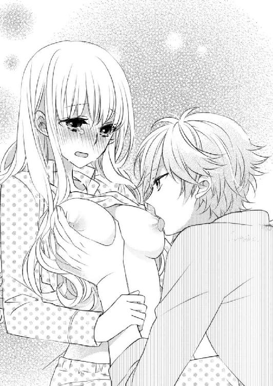
まだ呆然としている乃亜の頰を両手で包み、小鳩がその瞳を覗き込んだ。
「......」
「頭がいいから、乃亜ちゃんがどんな思いで僕を求めているかわかるんだ。乃亜ちゃんは今、ひとりになるのが怖くて、孤独に溺れちゃいそうで、それが怖くて僕にしがみついているだけなんだよね？」
「あ......」
あっさり見透かされている自分の弱さが恥ずかしい。そんな乃亜に、小鳩は優しく言葉を重ねる。
「......どうせなら『乃亜ちゃんが僕に惚れて、誘っている』って勘違いできるくらいバカなら、一瞬だけ幸せな気分になれたのかもしれないけど。頭の良い僕としては、その辺の違いがわかっちゃうんだな」
「......」
「乃亜ちゃんが望むなら、僕は二股でも浮気相手でもかまわないよ。でもそんな付き合い方をしたら、結局は乃亜ちゃんが苦しくなっちゃうから」
小鳩は乃亜の顔を引き寄せると、乃亜の鼻に自分の鼻を触れさせる。小鳩の鼻の冷たさに、子供の頃、マルにこうやってキスしていたことを思い出した。
小鳩の言葉に、やっと正気を取り戻した乃亜は顔をくしゃくしゃに歪めて涙を浮かべた。
「ご......ごめんなさい」
「冗談だよ。バカじゃなくてよかった。バカな勘違いして乃亜ちゃんとセックスしたら、あとで乃亜ちゃんが酷く後悔しなきゃいけなくなるもん。そんな風に乃亜ちゃんを傷付けるバカな男じゃなくてよかったと思っているよ。......でも僕も男の子だから、今度こんなことされたら、理性を保つ自信はないからね」
そう言って強く抱きしめてくる小鳩。その温もりが、乃亜に、自分がどれほど愚かなことをしようとしていたのか実感させる。
「ごめん......なさい......。......ごめんなさい......」
乃亜が、顔をくしゃくしゃにして謝った。小鳩は、そんな乃亜の肩を押して体を反転させて、背中から乃亜を抱きしめた。
ソファーの肘かけ部分を背もたれにして、乃亜を包み込むように抱きしめる小鳩は、「謝らなくていいから、ちゃんと話して」と、乃亜の耳元で囁く。
「............」
頷く乃亜は大きく深呼吸をして「不安神経症って病気を知っていますか？」と、切り出した。
「パニック障害みたいなの？」
首をかしげる小鳩が言った。
「パニック障害は、不安神経症の一種です。......私は、高校生の終わり頃に軽度の不安神経症って診断されました」
「そうなんだ......」
「発作が起きると、動悸が激しくなって息苦しくて、自分が目には見えない泥沼に沈んでいくような恐怖感に襲われます。高校を卒業した時に環境を変えてからは、たまに息苦しくなることはあっても、ここまではっきりとした発作が出ることはほとんどなかったんですけど、今日は久しぶりに......」
「本当だ、脈拍早いね」
背後から手を伸ばす小鳩は、左手で乃亜の左手首を摑み、脈拍を確認した。
「............」
細い自分の手首を包む大きな手の感覚に、乃亜は、そっと安堵の息を漏らした。
「トクトクトクトクトク......乃亜ちゃんが生きている証拠だね」
「ああ.........本当だ。私、生きているんですね」
発作が起きて息苦しいのさえ、自分が生きている証拠なのだ。
当たり前のことを思い出させてくれる小鳩の胸に、乃亜は自分の背中を預け、瞼を閉じた。
小鳩の温もりに、暴走していた鼓動が少しだけ減速する。
「どうしてそうなったか、原因って覚えている？」
乃亜は、目を開けてゆっくり話し始めた。
「はい。......私の書いた小説が出版されたことがあるって話しましたよね」
「うん」
「そのせいで嫌な思いを沢山しました」
露骨な嫉妬ややっかみ、お金のために媚びる大人、自分の立場をよくしたくてあからさまな噓をつき他人の悪口を言う人。そのどれもが、乃亜を息苦しくさせた。
でも一番、乃亜を傷付けたのはあの言葉だろう。
「小学校の頃から苦手な子がいたんです」
「トイレ友達の子？」
始めの頃にした些細な昔話を、小鳩はまだ覚えていたんだ。小さく驚きながら、乃亜は頷いた。
「友達じゃないですけど、その子です。その子とは、別の高校に通っていたんですけど、本が出版されて話題になったことで、私が小説を書いていることを知ったらしく電話してきたんです」
母親の突然の死を乗り越えた美少女作家。出版社が、宣伝効果を狙ってマスコミに売り込む題材としては申し分ない。
そんな乃亜のプロフィールを、マスコミも好意的な扱いで発信してくれた。
でも受け取る側の誰もが、その通りに情報を受け取ってくれるとは限らなかった。
「なんて言われたの？」
「母親の死を金儲けに利用する最低な人間。って、罵られました」
今思い返しても、電話から聞こえてくる彼女の声は、嫌味なんてものを通り越したレベルだった。
乃亜を罵倒し、その言葉に傷付く乃亜の反応を読み取ったように嘲笑って一方的に電話を切った彼女の声が、今も耳に残っている。そして今でも乃亜を苦しめる。
小鳩は、手首を摑む手に力を入れた。その力強さが、先を話すことを躊躇う乃亜を勇気づけてくれる。
「彼女がやったって証拠はないんですけど、同じような言葉が、ネットに書き込みされたり、私の学校の前に紙が張られたりして......それが呼び水になって、学校でも同じようなことを言われるようになりました」
もともと人と接するのが苦手で、単独行動が多かった乃亜には、マイナス要因の情報から守ってくれる友達がいなかった。
地元で乃亜が自分を取り巻く環境に苦しんでいる間も、全国レベルでみれば小説は記録的な売れ行きをみせて映画化もされた。
「苦しかったね......」
昔のことを話すことでまた加速しだす鼓動を抑えるように、小鳩が乃亜を強く抱きしめた。
「お母さんとマルの思い出を汚されていくようで、凄く苦しかった」
「小説が出版されたことで、乃亜ちゃんの今のお母さんだけじゃなく、乃亜ちゃん自身も傷付いていたんだね」
乃亜が隠しておいた小説が出版されたことで傷付いているもう一人の名前を、小鳩はあっさり言い当てた。
「読んだ人も、書いた人も傷付けてしまうような小説、書かなきゃよかった」
静かに泣く乃亜の耳元で、小鳩が「違うよ」と、囁いた。
「その子はきっと自分の日常に満足していなくて、自分の中に溜まっていた黒い感情を吐き出す場所を探していたんだよ。そして、たまたま近くにいた乃亜ちゃんに投げつけただけ。死んだお母さんやマルちゃんのためにも、自分を傷付ける人のために、乃亜ちゃんが不幸にならないで」
「............」
──自分を傷付ける人のために、乃亜ちゃんが不幸にならないで。
包み込むような小鳩の声が、乃亜の心に優しく浸透していく。
確かにそのとおりだ。
父親は乃亜の小説が出版されたことを喜んでいた。正樹も貴斗も、乃亜が新しい小説を書くことを楽しみにしている。
名前も知らない読者だって、次回作を楽しみにしていると言ってくれていた。
乃亜が大切に思う人たちは、乃亜が小説を書くことを望んでいるのに、乃亜に悪意を持って接してくる人の言葉に影響されて書けなくなるのは間違っている。
「今のお母さんのことは、これから時間をかけて修復していけばいいし」
その言葉に、乃亜は強く頷いた。
小鳩の温もりを感じながら深呼吸をすると、さっきまでの息苦しさが消えているのがわかった。
それに合わせて、鼓動も安定していく。
乃亜の脈拍が安定したのを確認して、小鳩は乃亜の左手首を開放した。そして両腕で、乃亜を強く抱きしめた。
「残念だけど、この世は乃亜ちゃんの都合のいいようにはできていないんだ。だから傷付くことは沢山ある。でも傷付いたら、その百倍僕が抱きしめてあげるから、乃亜ちゃんを愛している人も沢山いるこの世界を嫌いにならないで」
「はい」
「あと、僕のパンフレット、いい感じに仕上げてね。再来週、ラフを浦のところに持っていくんでしょ」
浦からメールで報告があった。──そう付け足されると、あのアドレスがみんなに広まっていることが恥ずかしいけれど、黙っておいた。
「頑張ります」
素直に頷く乃亜は、目を閉じて小鳩の胸に甘えるようにもたれかかった。
深く息を吸い込むと、小鳩の使っている香水の匂いが微かに感じられた。
小鳩と一緒に暮らす日々には、もうじき「おしまい」の日がくる。仕事も忙しいから、その日が来るまでに、今書いている小説を完成させられるかはわからない。
でも今日のこのひと時の思い出があれば、きっと小説を最後まで書けると思う。
しばらくの間、小鳩の温もりに甘えていた乃亜は、ふと小鳩が居候を始めた理由を思い出した。
「そういえば、小鳩君は、眠れるようになりましたか？」
あと一週間ほどで出ていく小鳩は、乃亜のリビングのソファーだとよく眠れると言って居候を始めたのだった。
首を大きく曲げて、返事をしない小鳩を見上げると、小鳩はいつの間にか目をつぶり規則正しい寝息を立てている。
「もう......」
聞くまでもなかった。──ホッと息を漏らす乃亜は、自分が動いて小鳩を起こしてはいけないと思い、そのまま小鳩の胸に身を任せて目を閉じた。
13．「おしまい」の日に
小鳩のデザインするジュエリーは、チェーンの繊細さが特徴だと思う。
乃亜は浦から送られてきた写真をデスクに広げ、以前小鳩が送ってきたネックレスを照明にかざした。
ネックレスに添えられていた薔薇は、貴斗によってとっくに捨てられていたが、さすがにネックレスは捨てずにとってあった。それをさっき、写真と一緒に貴斗から渡されたのだ。
──綺麗。
細い十字状に反射する光に、乃亜は目を細めた。
このネックレスは、小柄で線の細い女の子に似合う気がする。髪が長く、肌の色も、日に焼けた小麦色の肌より、色白な子に似合いそうだ。
──小鳩君て、こういうのが似合う女の子が好みなのかな？
乃亜は、自分も、髪が長くて小柄で線が細く色白な女の子に該当することに気付いて首を振った。
「なんかの催眠術か？」
隣のデスクの希一が、乃亜の行動に不審な顔をしている。
「違います」
見られていたことが恥ずかしい。乃亜は、ネックレスをデスクの上に置いた。
「それ、例のアイドルのブランド？」
「イケメン俳優に分類されているけど、アイドルではなく役者さんです」
「同じようなもんだ。ラフの準備か。打ち合わせはいつ？」
「来週末です」
小鳩に抱きしめられたまま朝まで眠ったのは、もう三日も前のことだ。
時間の流れの速さに、乃亜は静かにため息を漏らした。
「ふうん」
希一は、デスクに広げられている写真を一枚手に取った。そしてもう一方の手を自分のデスクに伸ばして、置いてあったカタログを手にした。
乃亜が首を伸ばして見ると、自動車用タイヤのホイールメーカーのカタログだった。足の綺麗な女の子が車に寄り添っている。
そのカタログの女の子の首元に、ネックレスの写真を近づける。
よく見ると、女の子の首筋にはネックレスが着けられている。
希一は、女の子のネックレスとプティ・コロンブのネックレスが同じものか確認しているらしい。
「一緒か？」
「違うと思いますよ」
乃亜には、どう見ても二つが同じものだとは思えない。
「同じだろう」
シルバー素材というだけで、ペンダントトップの宝石の色もデザインも全然違うネックレスなのに、希一にはその違いがわからないらしい。
希一は写真とカタログの女の子の首元をしばらく見比べていたが「まあ、どうでもいいけど」と、写真を乃亜に返した。
「で、そのアイドルは失踪中なんじゃないのか？」
「失踪中じゃないです。ただ、休暇を取っているだけです。それに打ち合わせは、マネージャーの方としているから問題ないですし」
「そうか？ 別の関係者は、失踪だって今日も騒いでいたぞ」
──別の関係者？
誰のことだろうかと一瞬悩んだけど、希一が、庶務課のデスクの方をチラリと見たので、マリのことだとわかった。
マリは今日も朝から、連絡が取れない小鳩のことを心配していた。
何度もメッセージを残しているのに小鳩が返事をくれないのは異常事態だと、大騒ぎしている。
「ああ......」
乃亜は、自分が失踪しているという噂をネットで目にした小鳩が「たいして関係のない人に限って、関係者を気取って騒ぎたがるのはなぜだろう」と言っていたのを思い出す。
本当の小鳩の関係者には、浦を介して連絡が行っているので「失踪」などと騒いでいない。もちろんニュースとして扱われることもない。それでもネットには、小鳩失踪の情報が流れていて、マリは、そんな情報を探し出しては騒ぎ立てている。
本当のことを教えてあげたい気持ちもあるけれど、マリの口の軽さを考えると、そういうわけにもいかない。
気の毒だけれど、世界が乃亜に都合のいいようにできていないのと同じで、マリにも都合のいいようにもできていないのだから仕方がない。
──ごめんなさい。
そう心のなかで手を合わせる乃亜の肩を軽く叩いて、希一が立ち上がった。
「さて、社長のとこに行ってくるかな」
難しい顔をして、今手がけている機械メーカーのカタログの資料を手にした。
本人としては自信を持って提出したのに、再度練り直すように言われていた案件なので、少し気が重いらしい。
──誰でも、自分の思い通りにならないものを抱えているんだよね。
乃亜はいつもより歩幅を狭くして歩く希一の背中を見送り、日曜日のメールを思い出しながら、左手首のブレスレットを見た。
左手を高く持ち上げ、その輝きを確認すると、すぐに手を下ろして仕事を再開する。
そうやってデスクに向かうこと二十分、希一が乃亜の肩を叩いた。
「小糸、社長が呼んでたぞ」
社長室に向かうときとは違い、戻ってきた希一の声が軽い。その明るい様子からして、ＯＫがもらえたらしい。
「わかりました」
乃亜は頷き、社長室へと向かった。
社長室に入ると、貴斗は、乃亜にソファーを勧めた。
「乃亜ちゃんの顔を久しぶりに見た気がする」
貴斗は向かいに座り「元気だったか？」と、冗談ぽく片手をあげた。
「元気です」
忙しくてゆっくり話す暇がなかっただけで、会社でお互いの顔は見かけているのだから、わざわざ確認しなくてもそれはわかっている。それでも一応、乃亜も確認しておく。
「貴斗さんも、お元気でしたか？」
「飲み過ぎ以外はな」
予想通りの回答に、乃亜は、クスリと笑った。
「あの小僧から受けている仕事は順調か？」
「大丈夫ですよ」
「まあ小僧が休養中とかで、乃亜ちゃんの周りをチョロチョロしなくて一安心だ。あれ以上、乃亜ちゃんにちょっかい出してきたら、本気で闇討ちしてやろうかと思ったが」
ソファーの背もたれに両手を広げて体重をかけ、不遜な笑みを浮かべる貴斗に、まさか自分のマンションで休養しているとは言えない。
「......」
どこまで冗談かわからない貴斗の言葉に、乃亜は密かに冷や汗を流した。
「まあいいや。ところで......」
貴斗は姿勢を直し膝の前で両手を組み、乃亜に、今度受ける予定の仕事内容を話し始めた。
「......バレンタインデーにちなんだショートストーリー？」
貴斗の話を聞き終えた乃亜が、戸惑った様子で呟いた。
「そう。それを添えたパンフレットを作りたいんだ」
貴斗が話したのは、来年一月末から二月中頃まで都内のデパートで開催されるショコラフェスティバルのパンフレットに関してだった。
バレンタインデーに向けて国内外のショコラブランドが一堂に出店するので、それぞれの店とその店の主力商品を紹介するパンフレットの制作依頼を受けたのだという。
貴斗とクライアントで最初の打ち合わせをした際、先方から、商品と恋愛を絡めたショートストーリーを織り込むと面白いのではないかという提案があったのだという。
そしてそのショートストーリーを、乃亜に書いて欲しいと貴斗は言うのだった。
「......」
「今はプティ・コロンブのカタログを受けている最中だから、全体的な制作は他の奴に振るとしても、ショートストーリーだけでも乃亜ちゃんに頼めればと思ったんだけど......」
「......考えてみます」
「まあ、無理はしなくていいから」
その場で断られると思っていたのか、乃亜を見守っていた貴斗が、ホッと息を漏らした。
じゃあこの話はこれで終わり。そう宣言するように、貴斗がパンッと手を叩き、表情を和らげた。
「よかったな」
「なにがですか？」
「正樹だよ」
「ああ......。貴斗さんにも連絡あったんですね。私も、昨日電話をもらいました」
「ああ、さっきメールが来てた。思ったより早い帰国になったな。本来いつの予定だった？」
「半月くらい早まりましたね」
「乃亜ちゃんに、早く会いたくなったんだろうよ」
「どうでしょう」
「嬉しくないのか？」
貴斗が怪訝そうな顔をするので、乃亜は慌てて首を横に振る。
恋人が帰国するのに、嬉しくないわけがない。
「まさか......。ただ、予想以上に早くて、色々準備ができてなかったから驚いただけです」
「準備？」
「なんでもないです」
慌てて手をパタパタさせる乃亜を、貴斗はそれ以上追及しようとせず、意味深な笑みを浮かべて「準備ねえ～」と呟いただけだった。
「とりあえずショートストーリーについては、少し考えさせてください」
後ろめたい思いと、気恥ずかしい勘違いをされている気まずさから、乃亜は、そう言って席を立った。
「まあ、考えてみて。それと、明日は空港まで迎えに行くのか？ 有給休暇余っているから使うか？」
そんな貴斗の気遣いに、乃亜は、首を横に振る。
「仕事します。どうせ正樹さんもそのまま会社に顔を出すと思うし」
「そうか......。まあこれからは、いつでも会えるしな」
その言葉に一礼を残して、乃亜は社長室を後にした。
そして自分のデスクに戻り、仕事に集中した。
小鳩との共同生活が今日で『おしまい』を迎える。だから、今日は残業せずに家に帰りたい。
日曜日に受けた正樹の電話の内容を、乃亜はすぐに小鳩に伝えた。乃亜の報告に小鳩は、いつもと変わらない人懐っこい笑顔で、「じゃあ、火曜日の夜に出ていくね」とだけ告げた。
◇ ◇ ◇
定時で仕事を終えた乃亜をリビングで出迎える小鳩は、何故か正座で乃亜を待ち受けていた。
「長い間お世話になりました」
「なんで正座なんですか......しかも正装」
三つ指を突き深々と頭を下げる小鳩は、なぜかタイトなスーツを着ている。
「いや......最後ぐらい、男前な格好を見せとこうかなって」
頭をあげた小鳩は、照れたように笑ってみせた。
確かにここにいる間の小鳩は、スウェットやデニムといったラフな格好ばかりだったので、パーティー向けの黒く光沢のあるスーツ姿で髪の毛を後ろに流していると、芸能人オーラに溢れていて別人のようだ。
「......」
──いつもリビングでだらけている小鳩君じゃなく、芸能人の小鳩葉汰だ。
見慣れない小鳩の姿に、今さらながら気おくれしてしまう。
「さすがに紋付き袴じゃ、乃亜ちゃんがひくかなと思って」
「スーツでも、じゅうぶんひいています」
小鳩は、ムッとした表情で返す乃亜をケラケラ笑いながら立ち上がった。そしてそのままキッチンスペースに向かう。
カウンター脇の椅子に脱いだジャケットを掛け、料理を始めた。
「最後の晩餐だから、腕を振るったんだ。後は仕上げに愛情を注ぐだけだから、ちょっと待っていてね」
「愛情、入れなくていいです」
「またまた」
小鳩は陽気に笑い、鍋を温め始める。
「もう......」
──今までのお礼をちゃんと言いたかったのに。
こんなふうに出迎えられ、お礼を言うタイミングをなくしてしまった。
ため息を吐いて着替えるために寝室に向かおうとした乃亜は、何気なく視線を向けたリビングの眺めに違和感を覚え、動きを止めた。
──床に広げてあったジグゾーパズルと、カゴ三つ分の小鳩君の荷物がなくなっている。
頭の回転の速い小鳩のことだからすぐにでも完成させると思っていた３０００ピースのジグゾーパズルは、結局完成することなくリビングの床を占拠していた。
そのパズルがなくなっただけで、リビンがやけに広く感じられる。
「最後のウサギちゃんタイムが終わったら、出ていくね」
乃亜が美味しいと言ったビスクが添えられた夕食。それを食べながら、小鳩はそう宣言した。
乃亜も、その意見に異存はない。
それでもいつもよりゆっくりと食事をして、ゆっくりお風呂に入った乃亜は、ソファーに横たわると悲しくなってきた。
小鳩を拾ってから一週間とちょっと、それだけの時間を一緒に過ごしただけなのに、小鳩が出ていくことが悲しくて仕方ない。
「乃亜ちゃん......目がウサギみたいだよ」
アイピローを乗せるために顔を覗き込んだ小鳩が、冗談ぽく指摘する。
「......気のせいです」
乃亜は、今にも泣き出しそうな声で、せめてもの強がりを返した。
「今日は、僕が話していい？」
ソファーの傍らに腰を下ろす小鳩が問い掛けた。
「え？」
「いつも乃亜ちゃんにお話してもらっていたから、今日は、僕に話させてよ」
髪をセットするために整髪料を使っているので、髪の手触りがいつもと違う。その髪の上に手を置き、乃亜は「うん」と、頷いた。
「ありがとう」
話せば、きっと声が涙で震えてしまう。それがわかっていたから、小鳩の申し出は、乃亜にとっても嬉しかった。
そんな気持ちに気付いているのかいないのか、小鳩は、「僕の昔話をするね」と、切り出した。
「五年前の僕は、まだ大手の芸能事務所に所属していて、凄く嫌なガキだったんだ。小学生の頃からモデルやドラマの端役なんかはしていたんだけど、大学生になったのを期に本格的な芸能活動を始めて、すぐに才能があるって言われて調子に乗っていたよ」
「......」
過去を思い出したのか、小鳩が苦々しく笑うのがわかった。
「その頃はガキだったから、映画のオーディションとか簡単に受かるのは自分の才能だって信じていた。才能があっても、主役を取るには血のにじむような努力と大手事務所の後押しが必要だって学んだのは、独立した後」
独立してから、最初の一年は苦労したよ。──小鳩がそう笑えるのは、今は、大手事務所の後ろ盾がなくても主役を取れるようになったという自負があるからだろう。
「そんなお調子者だった僕は、五年前のある日、事務所の人に言われるまま、ある映画のオーディションを受けたんだ。若い子の間で爆発的人気になっていた小説の映画化だった」
「......」
五年前、若い子の間で爆発的人気になっていた小説。
その言葉になにかを予感していた乃亜は、小鳩が「しかも原作者は、現役女子高生」と、付け足したことで自分の書いた小説のことだと確信した。
ただあの映画で主役を演じたのは......。
「僕はそのオーディションで、見事に落とされた」
──ああそうだ。
心の中で呟く乃亜は、あの映画の製作に自分はそれほど関わってはいないけれど、公開で行われた主人公とその相手役の二人を決める最終オーディションには参加していたことを思い出した。
最終オーディションといっても、合格者が内定している出来レースで、乃亜が参加したのは「原作者もその才能に惚れ込んだ逸材」といった内容の宣伝文句を付けるための布石に過ぎなかった。
最初に関係者にそのことを告げられた時には、正直驚いた。でも世の中はそういった茶番で成り立っていて、大の大人がそれだけのしかけを用意するのは、この小説の映画化に関わっている人の数も、掛けられた金額も膨大だからだと説き伏せられた。
媚びへつらいながらそんな茶番を強要する大人たちに嫌悪感を持ったけれど、乃亜一人が異議を唱えるには、なにもかもが大きくなり過ぎていた。
だから出来レースと知りながらも、大手事務所が後押しする新人俳優に一票を入れる覚悟をして、最終オーディションに参加したのだった。
でもオーディションで目にした主人公の相手役に内定している青年の姿に、乃亜は愕然とした。
主人公のモデルは乃亜の父親なのだから、たいしてハンサムじゃなく、不器用でありきたりなコンプレックスを抱えている普通の男の子であってほしかった。なのに、オーディション会場で目にした少し年上の男の子は、完璧すぎるほど完璧な、自信に満ちたイケメンだった。
だからついオーディションが始まる前に、人目がないところで、その彼に声を掛けて頼んでしまったのだ......。
「正確に言えば、満場一致でヒロインの相手役に選ばれていたのを、僕が辞退したんだけどね。だって原作者の女の子に、辞退して欲しいって頼まれちゃったんだもん」
「......」
そのとおりだ。
自分のイメージとかけ離れた青年に、どうしても主人公の相手役を演じて欲しくなかった。だからといって、乃亜ひとりが票を入れなかったところで、他全員が彼に票を入れるのだから状況は変わらない。
だから事情を説明して、辞退して欲しいと本人に頼んだのだった。
「あれは衝撃だったよ。可愛い女の子に声かけられて、ファンの子かな？ って思ったら、怖い顔して『アナタ、原作の小説読んでないでしょう』って怒られたんだもん」
「怒ってはいないです......」
──小鳩君は、最初から私が笹原ノアだって知っていたんだ。
そう納得して、乃亜は反論した。
べつに怒ってはいなかった。ただ緊張と人見知りをしていただけだ。それに言い方だって、もっと優しい言葉を選んでいた気がする。
「そうだった？」
たぶんわかっているのだろう。小鳩は、わざととぼけた声を出して笑った。
「僕的には、胸ぐら摑まれて『テメエ、原作読んでないくせにこの役演じられる気になってんじゃねえよ』って、言われた気がしたんだけど」
「もう......」
もちろん胸ぐらなんか摑んでいないし、言葉はもっと丁寧だった。だけど言った内容としては、おおむね合っている。
──自信に満ちた顔をしているのは、自分がイケメンで器用で、どんなことも難なくこなせる自信があるからなのでしょう。でも原作の小説を読んでいればわかるはずです、あの役は、不器用でコンプレックスがいっぱいで挫折を味わった人に演じて欲しい役なんです。──
そういったことを、当時の乃亜なりに言葉を選んで伝えたつもりだ。
「しかも、今まで実力で取ってきたと思っていた役が、事務所の圧力のおかげだったって知らされてショックだったよ」
「ごめんなさい」
乃亜の言葉に驚くその少年の顔を見るまで、彼も、出来レースのことを承知しているのだと思っていた。
だから衝撃を受ける彼の表情に、乃亜も衝撃を受けたのだった。
「いいんだよ。あのとき僕は初めて、自分がちっぽけな存在で、大人たちの作った世界の歯車に過ぎなかったことに気付いたんだ」
「......」
「それに乃亜ちゃんの予想どおり、僕は、あの小説を読んでいなかった。ネットで粗筋だけ確認して、適当に演じれは天才だからオーディションに受かるって思い込んでいた。作者に、凄く失礼なことをしていたね」
ごめんね。と、小鳩が自分の方に顔を向けるのがわかった。
「いえ」
「会場で満場一致で選ばれた後、マネージャーだった浦に出来レースのことを確認したときは、わかっていたはずでもショックだった。自分が傷付きたくないから、あの日、乃亜ちゃんの言葉を疑っていたんだ。あのときの乃亜ちゃんの目は、噓をついている目じゃないってわかっていたのに。そして家に帰って初めて笹原ノアの小説を読んだよ」
「......」
「読んで泣いた。ピュアで不器用で傷付きやすくて、それでも誰かを一生懸命に大好きな気持ち......あの頃の僕に演じられるわけないって思った。僕が無理やり演じたら、乃亜ちゃんを傷付けると思った。だから辞退したんだ」
「うん」
オーディション会場では、彼は辞退しなかった。だからきっとそのまま彼に決まるのだと思っていたら、数日後、彼の事務所から出演辞退の連絡が来た。
役を演じ切る自信がない。その辞退理由は、それはそれで話題になると一度は突然の辞退を非難していた大人たちを喜ばせたのだった。
そして急遽、オーディションで二位の得点を付けられていた俳優が演じることになった。
小鳩の一位が出来レースだったのだから、二位の得点を得ていた彼が実質的な一位であり、それに異論を唱える者はいなかった。
そのことにホッとはしたけれど、その後、もろもろの出来事に翻弄され精神的に追い詰められていった乃亜は、ただ一度会っただけの俳優の顔も名前も忘れてしまっていた。
「あれ、小鳩君だったんですね」
「やっぱり僕を忘れていたんだ。酷いなぁ」
冗談ぽく小鳩が非難の声をあげる。
「小鳩君も、酷いです。小説なんか読まないって言っていたくせに」
「ああ。そうだったね」
小鳩は悪びれる様子もなく笑い「僕は、好きな子が望むならどんな噓でもつくよ」と、付け足した。
「好きな子に恋人がいて、彼を裏切りたくないって思っているなら、裏切らせない。眠れない夜が辛いなら、犬の代わりにそばにいる。......それが僕の愛し方だから。僕と過ごす時間、少しは今まで頑張ってきた乃亜ちゃんのご褒美になった？ 少しは眠れるようになった？」
「......」
「あの日の僕は、緊張で声を震わせながらも、出演辞退を頼んだ笹原ノアって作家に興味を持った。そしてその小説を読んで感動した。君の大切な世界を壊さなくて済んで、本当によかったと思っているよ。............あの日からずっと、この小説を書いた子は、どんな子なのか考えていたよ。きっと人見知りで、人と話すより本を読むのが好き。人の言葉に傷付きやすい分、言葉を選んで話す女の子だと思った」
「.........」
「全部正解だったね。僕、凄いでしょ」
「もう」
犬なら振り切れんばかりに尻尾を振っているであろう小鳩の笑顔が、想像できる。その笑顔を想像して、乃亜は、呆れるように息を吐いた。
「でも外れてもよかったんだ。ただ、僕がそんな想像をしてしまう相手は、乃亜ちゃん、君に対してだけだったんだよ」
「小鳩君、私............っ」
告白をされていることに気付いた。でもどう返せばいいのかわからない。
言うべき言葉を選べずにいる乃亜の唇に、柔らかな唇が触れた。
小鳩の緊張が伝わってくる口付けを、振り払うことも受け止めることもでない。
ほんの数秒。
体を硬直させる乃亜から、小鳩の唇が離れた。そして小鳩が立ち上がる気配がした。
「君が誰を好きでも関係ない。僕は、あの日からずっと君に恋しているんだ。......恋人とお幸せに」
身動きできずにいる乃亜に「そのままでいて。鍵は、今度こそ郵便受けに入れておくから」。そんな言葉を残して、小鳩はリビングを出ていった。
廊下を歩く足音が遠ざかり、玄関のドアが開閉する音が聞こえた。
そして最後に、鍵を施錠して、その鍵を金属製の郵便受けに落とす音が響くと、室内は静まり返った。
小鳩の気配が消えたリビングで、乃亜は冷たくなったウサギのアイピローを乗せたまま、小鳩との同居生活にとうとう「おしまい」が来てしまったことをひしひしと感じて泣いていた。
14．小鳩君の噓
二日後の夜、やっと会えた恋人の正樹のしかめっ面を前に、乃亜は申し訳なさそうにうなだれた。
正樹自ら予約した鰻屋。そこで好物の鰻を前に露骨に顔をしかめるのは、よほど不機嫌な証拠だ。
「なんでこんなことになるんだろう」
「ごめんなさい」
深いため息をついて唸る正樹に、乃亜は小さな声で謝った。
その姿に、正樹はまたため息を漏らす。
「乃亜が悪くないのはわかってる。しょうがないんだよ......」
「でも......」
「そうそう」
乃亜に対して一瞬優しい表情を見せた正樹は、すぐに険しい表情に戻って、乃亜の隣で鰻を食べる貴斗を睨んだ。
「なんでお前が一緒にいるんだ」
「俺も鰻を食いたかった」
貴斗は涼しい顔で答え、肝吸いを啜る。
「一人で食え」
「嫌だ。俺は寂しいと、箸が進まないタイプなんだ」
「じゃあ食うな。それになんでお前が乃亜の隣にいる？」
「嫌だ。食う。じゃあお前は、俺と並んで飯が食いたいのか？ でかい男二人、肩を並べて飯食うと肘が当たるぞ。威圧感あるし」
確かに正樹の方が貴斗よりは小柄だが、それでもじゅうぶん大柄な部類に入る。
「うぅ......」
「それにお前が乃亜ちゃんの隣に座ったら、オレが乃亜ちゃんと見つめ合って飯食うことになるぞ。久しぶりに会ったんだから、顔見たいだろう？」
「そうだけど......」
貴斗はやすやすと正樹を論破し、満足した表情でまた鰻を頰張る。
見慣れた二人のやり取りに、乃亜は、呆れながらも微笑を浮かべた。
前日に日本に帰って来た正樹から夕食を一緒に食べようと誘いが来たとき、ちょうど近くにいた貴斗がそれを聞きつけ、待ち合わせ場所まで送ってやると言い出したのが始まりだった。
なんとなくこんな展開を予想していた乃亜としても、最初は断ったのだが「久しぶりに友人の顔が見たいし、その後食事の予約をしているから二人の邪魔はしない」と貴斗に押し切られ、一緒に待ち合わせ場所に向かったのだった。
そして顔を合わせれば、強引な貴斗のペースに流され、三人で食事をすることになってしまった。しかも貴斗は、正樹が予約するであろう店を予測して、ちゃっかり自分の席も予約していたのだから呆れる。
「俺もひとりで食事するつもりで予約した店が、たまたま一緒だったんだからしょうがないだろ」
「俺が日本に帰ってくると、必ず鰻か豚カツって知っていて、二分の一の確率で予約したんだろう？」
なおも恨めしい視線を送る正樹を貴斗が「バカか」と睨む。
「とんかつ屋も鰻屋も、お前の贔屓の店は承知している。......久しぶりの乃亜ちゃんとの食事。お前の性格からいって、満席で座れない可能性のあるとんかつ屋を避けて、焼く間もゆっくり喋れる鰻屋を選ぶのは確か。だから確率は、一分の一だ」
「......」
万事言い負かされっぱなしの正樹に、貴斗が意地悪く笑う。
「せっかくの鰻が冷めるぞ。それにお前が不機嫌にしていると、乃亜ちゃんも気遣って飯が食えんぞ」
やっと諦めがついたのか、正樹は、渋々といった様子で箸を手にした。それにならって乃亜も箸を持つ。
「じゃあ、三人の再会を祝していただきます」
先に食べ始めていた貴斗がそう言って手を合わせると、正樹も不服そうに手を合わせて食事を始めた。
──帰って来たんだ。
貴斗とじゃれ合う正樹の姿を見ると、自然とそんな安堵感がこみあげてくる。
それと同時に、小鳩と過ごした時間が、急速に過去のものになっていく。
「仕事は順調？」
「問題ない」
正樹の問い掛けに貴斗が答える。
「貴斗に聞いてない」
「私も順調だよ」
「同じ会社なんだから、同じ返事に決まっているだろ」
慌てて答える乃亜の尻馬に、貴斗が乗った。
「それでも俺は、乃亜に答えて欲しい。最近はどんな仕事しているの？ この前話していた蓼科のガラス工房はどうなったの？」
「あれはもうＯＫもらって、今は別の仕事をしてるよ」
「そうだ、小鳩葉汰って俳優わかるか？ よくテレビに出ているだろ。じつは彼の......」
正樹に、貴斗が箸を向ける。
「人に箸先を向けるな。行儀が悪い」
貴斗を窘める正樹が、すぐに神妙な表情を見せた。そして「彼、活躍していて嬉しいよ」と、感慨深げな表情を見せた。
「なんだ、その意味深な言い方？ 小鳩葉汰を知っているのか？」
箸を下ろす貴斗が、怪訝そうに眉を寄せる。
「以前、彼と仕事の関係で会ったことがあるんだ。......ちょうどその頃、所属事務所の決めた仕事を強引に断って、仕事を干されていたから、なんとなく今の活躍を見ると、嬉しくなるんだ」
「それいつ？」
驚く乃亜に、正樹は「五年位前かな」と、答えた。
「結構揉めたらしく、その後、彼が独立といった形で事務所を辞めることで決着したらしいよ。まあそれが今の活躍に繋がっているから、結果としては悪い判断じゃなかったんだろうけど。あの頃は大変だったらしいよ」
「ゴシップ情報にうといお前にしては、やけに詳しいな」
「彼が断った仕事に、少しだけ携わっていたから」
「なるほど」
貴斗は納得した様子でまた箸を動かし始めた。
正樹がハッキリ言わなくても、乃亜には、小鳩が断った仕事が何なのかすぐにわかった。
正樹は、今までの乃亜の態度から、彼女が自分の小説の映画化の際に、突然降板した少年が小鳩だと覚えていないとわかっていたから話題にしたのだろう。実際昨日まで、あの日の彼が小鳩だったことを知らなかった。
あの頃、担当だった正樹にも、自分が小鳩にそんなお願いをしたことは話していない。だから正樹は、あれは小鳩が一方的に断ったものだと思っているのだろう。
──私のせいだ......。
そういえば以前、浦が、小鳩が一度だけ仕事をキャンセルしたことがあったと話していた。あれは、自分のせいだったんだ。自分が大人の事情にがんじがらめにされていたのと同じように、小鳩にだって、小鳩を取り巻く事情があったはずなのに、そんなこと考えもせずにずいぶん向こう見ずなことを頼んでいたのだ。
酔った小鳩を拾った日、小鳩は「活躍しないと、乃亜ちゃんが気にすると思って」と、乃亜のためにも頑張ってきたようなことを言っていた。
──そんな迷惑を掛けた小鳩君のことを忘れていたんだ。
唇を嚙む乃亜の隣で、貴斗が大きく咳払いをした。
「なあ、日本酒飲まないか」
「いいけど......、小鳩葉汰がどうしたの？」
「忘れた。辛口でいいか？」
貴斗は眉間に皺を寄せ、お品書きを手に店員を呼んだ。
◇ ◇ ◇
「結局、こうなるんだよな」
貴斗を降ろしたタクシーの車内で、正樹がため息を漏らした。
食事中に日本酒を飲みだした貴斗が「もう一軒行こう」と言い出し、二人を引きずるようにして飲み屋街にくりだし、ご機嫌で酔いつぶれた貴斗を乃亜と正樹で自宅マンションまで運ぶ羽目になったのだった。
二人で運ぶと言っても、乃亜は鞄とコートを持っただけで、正樹ひとりで貴斗を担ぐようにして運んでいったのだが。
「俺だって、時差ボケで早く寝たいのに」
正樹が大きなアクビをした。
乃亜はさほど飲んでいないが、正樹は貴斗に絡まれ飲まされていたし、時差ボケもあるのでそうとう眠いらしい。
「泊まっていく？」
「いいの？」
恋人である以上、それが普通だろう。そう思い乃亜が聞くと、正樹が嬉しそうに返した。
「うん」
「ありがとう」
頷く乃亜の手を、正樹が握りしめる。小鳩の手よりずっと大きくたくましい正樹の手が、今の乃亜には落ち着かない。
それでも乃亜は、その手を握り返して「変なの」と、小さく笑った。
◇ ◇ ◇
お風呂を出た乃亜がパジャマ姿でリビングを覗くと、お湯が溜まる前にソファーでうたた寝を始めた正樹が、同じ姿勢のままで寝息を立てていた。
──クマが出来ている。
少し垂れ気味の目に疲労の蓄積が感じられる。
背が高いのに、卵型の輪郭と人のよさそうな垂れ目が、貴斗よりずっと若く親しみやすい印象を与える。
ワックスで乱雑に流しているだけの髪も、正樹を若く見せる手助けをしている。しかも今は、その髪型がさらに崩れているので、一段と幼く見える。
「......」
乃亜は床に膝を突き、昨日まで小鳩のいた場所で眠る正樹を観察した。
だらりとソファーから落ちる左手を引き寄せ、自分の頰を寄せると、男らしい手に安堵の吐息が漏れた。細くしなやかな小鳩の指とは違う。
──ずっとこの手に抱きしめて欲しいと思っていたのに......。
思っていたはずなのに、心のどこかで、回数を数えられるほどしか触れられていない小鳩の指を恋しがっている。
「......どうした？」
瞼を小さく痙攣させて、正樹が薄目を開けた。寝ぼけ眼で乃亜を見つめる。
「......ごめんなさい」
慈しみのこもった眼差しに、涙が溢れた。
「乃亜？」
「......ごめん......なさい。............ごめんなさい」
涙がぽろぽろと溢れ、乃亜の頰と正樹の手の隙間に落ちていく。
「どうした？」
「..................私、正樹さんがいない間に」
「浮気でもした？」
ストレートな問い掛けに、乃亜は慌てて首を横に振る。
あれは......小鳩と過ごした日々は、浮気ではなかった。
一度だけ酔った勢いで正樹を裏切りそうになったことはあったけれど、小鳩の優しさのおかげで踏みとどまった。
「違う。でも............っ男の人を、この部屋に泊めた」
「誰？」
「こっ......っ！」
泣きながら打ち明けようとする乃亜を、正樹が身を起こして抱き締めた。
「やっぱりいい。聞きたくないっ！」
これ以上乃亜になにも言わせない。その意思表示のように、正樹が乃亜に口づけをした。
そのまま正樹は、乃亜を抱き寄せソファーに押し倒し上に覆いかぶさった。
「正樹さん............くぅっ」
「聞きたくないっ！」
いつも穏やかな正樹には似つかわしくない低い声に、乃亜は言葉を飲み込んだ。そしてそのまま、乃亜の唇を、自分の唇で塞いだ。
「ん......ぅ」
乱暴に求めてくる正樹の唇の感触に、乃亜は体を硬くする。
いつもとは違う荒々しい口づけが怖い。正樹から逃れたくて肩を押したのだけど、そんな乃亜の行動を正樹が言葉で封じる。
「嫌いになったんじゃないなら、俺を拒まないで」
正樹を嫌うわけがない。──そう伝えたくて、乃亜は、腕の力を抜いた。
正樹の唇の動きを感じながら視線を落とすと、テーブルの上に置かれているウサギのアイピローが目に留まった。
無機質な人形でしかないウサギになにか問い掛けられているような気がして、乃亜は正樹の肩をもう一度強く押した。
「ここじゃ......やだ」
ずっと小鳩が使っていたソファーでこうしていると、その全てを小鳩に見られているような居心地の悪さを感じてしまう。それに正樹に抱かれている間も、小鳩のことを考えてしまいそうで怖い。
そんな乃亜の思いをどう受け止めたのかはわからないが、小さく頷いた正樹は、乃亜を抱き上げて寝室に向かった。
乃亜を寝室のベッドに寝かせた正樹は、着ていた服を脱ぎベッドに入ってきた。
「乃亜......愛してる」
正樹は素早く乃亜のパジャマを脱がせ、華奢な乃亜の体を抱きしめた。
「ぁ............ぁあっ......正樹さ......んっ！ あっ！」
首筋から息を吹き込むように、正樹の熱い口づけが乃亜を襲う。ざらつく唇の感触が、正樹の荒々しい情熱を伝える。
乃亜の心がどこにあるか確かめるように、正樹の唇が、乃亜の頰から額、もう一度唇に口付けをして、首へと下りて囁く。
正樹の手が、下肢へと下がっていくのを感じて、乃亜は目を強く閉じた。
──小鳩君っ！
「.........」
自分の心の叫び声に驚く。
「乃亜？」
腕の中の乃亜の異変を感じて、正樹が動きを止めた。そして心配そうに、乃亜の表情を窺う。
心より体の方が正直な反応を示してしまう。そんな乃亜の肌に触れる正樹は、今なにを感じ取っているのだろう......。
「あの.........」
「ごめん。やっぱり時差で疲れているみたい。今日は止めておこう」
正樹は乃亜を残してベッドを抜け出し「シャワー借りるね」と、寝室を出て行った。
──触れられないことに、ホッとしている。
ベッドに残された乃亜は、罪悪感に唇を嚙んだ。
シャワーを浴びてきた正樹は、ベッドに戻ると乃亜を強く抱きしめた。
「よかった。正直、誰かを泊めたって聞いて怖かった。でも冗談だったんだな」
「......え？」
乃亜は、ずっと聞きたかったはずの正樹の鼓動に、ぎこちなく耳を傾けていたが、次の瞬間不思議そうに顔を上げた。
正樹はそんな乃亜の髪を優しく撫でた。
「もしくは本当に、ただ泊めただけだったんだ」
「あの......」
「部屋の空気感でわかるよ。この部屋もだけど、リビングとかバスルームとか、いつもとの違いはどこにもない。乃亜以外の誰の気配も感じられない」
「......？」
寝室......はともかく、そんなことあるのだろうか？
乃亜は正樹の腕の中で小さく首をかしげ、小鳩の行動を思い出して、ふと、あることに気付いた。
──小鳩君の洗濯物を見たことがない。
一緒にいる間、乃亜は定期的に洗濯していたけれど、小鳩の洗濯物を洗ったことも畳んだこともない。でも小鳩はいつも清潔な服を着ていた。
──それにお風呂もどうしていたのかな？
小鳩がお風呂に入っているのを見たことはないのに、洋服同様、小鳩から不衛生な印象を受けたことはない。洗濯洗剤やボディーソープが、いつもより早いペースで減っていると感じたこともない。
小鳩は最初からこの部屋にいなかったみたいだ。
「ああ......」
──違う。
きっと小鳩は、乃亜がいる時間しかこの部屋にいなかったんだ。
乃亜が会社に行っている間に、自分のマンションにでも戻って、いろいろな用事を済ませていたのだろう。
そして乃亜が会社から帰ってくるちょっと前にマンションに戻ってきて、二人分の食事を作って、ずっとこの部屋にいたように振る舞っていたんだ。
いつまでも完成しなかったパズルの意味が、やっとわかった。
頭のいい小鳩のことだ。ずっと家にいたのなら、あのパズルをとっくに完成させることが出来たはず。
──最初に酔っ払った小鳩君を拾った日から、小鳩君は気付いていたんだ。
精神的に不安定な乃亜が、誰かにそばにいて欲しいと思っていることを。そして不安なあまり、愚かなことをしないように見守っていてくれたんだ。
涼しい顔で幾つも噓を重ねて、乃亜を守っていてくれたんだ。
「どうした？」
顔を上げると、正樹が自分に心配そうな視線を向けている。
優しい正樹。小鳩だって乃亜が正樹を裏切るようなことを望んでいない。
「なんでもない」
この人を裏切りたくない。──乃亜は、正樹を抱きしめた。
「そういえば、小説は進んでいる？」
「うん。もう少しだけ、時間が掛かるけど」
「よかった。焦らなくていいよ」
「うん」
今書いている小説が完成するまでには、小鳩とのことを忘れてしまおう。
小鳩の気配の消えたこのマンションで小説を書き上げる頃には、小鳩との日々を忘れているはず。
そんな思いを込めて、乃亜は、自分から正樹に口づけをした。
15．小鳩君の痕跡
正樹を泊めた次の日の朝、乃亜と正樹は、珍しく寝坊してしまった。
朝食も食べずに正樹と一緒に飛び出すようにマンションを出てきたのだが、それでも遅刻ギリギリのタイミングでタイムカードを打つ結果になった。
「......大丈夫かな？」
タイムカードを定位置に戻しながら呟く。
自分が遅刻を免れると、今度は正樹が遅刻していないか心配になる。向こうの会社の方が距離的に遠い。本人は「駅から走れば大丈夫」と言っていたけれど。
──お昼休みにメールしてみよう。
そんなことを考えながら自分のデスクの引き出しを開けた乃亜は、すぐに違和感を覚えた。
──物の位置が変わっている。
椅子に座っているとき膝の上に位置する薄い引き出し、その中の配置が微妙に変わっている。
乃亜は、必要なときにすぐに取り出せるようにと、仕事で使う物はそれぞれ定位置に置くことにしている。だがその中の物が、定位置に置かれていない。
近くの席の人が、机の上に置いてある文房具を断りなく借りていくことはたまにある。でも人の引き出しの中を勝手に探る人はいないと思うのだけれど。
「ないっ！」
乃亜は引き出しの中を確認して、思わず大きな声をあげた。その声に周囲の視線が集まる。
「どうした？」
隣の希一が、周囲の視線を代表するように問いかけた。
「こば......プティ・コロンブのネックレスがなくなっているんです」
商品の写真を収めたファイルの隣に、プラスチックケースに入れて収めておいたネックレスがなくなっている。
希一が、開け放ったままの乃亜のデスクの引き出しに視線を向ける。
「そこに入れといたのか？」
「はい」
「他の場所に置いて、勘違いしているんじゃないのか？」
「それはないです。もしそうなら、入れていたケースだけが残っているなんて不自然です」
自信を持って言う乃亜に、希一が納得したように頷く。
常に整理整頓されている乃亜のデスクを目にしているので、念のために確認しただけなのだろう。
「最後に確認したのはいつ？」
「昨日の午後......違う、午前中です。午後は、社長と一緒に別件のパンフレットに使う写真の撮影に出ていましたから」
「てことは、昨日の昼以降から今日の朝までか」
「誰か、私の引き出し開けていました？」
「どうだろ？ いなかったと思うけどな」
記憶をたどるように、希一が自分の拳で右のこめかみを押す。
「お昼休みとかですかね？」
デスクの持ち主がいないときに引き出しを漁るという行為は、それなりに人目に付くと思う。普通に考えて就業中は避けて、オフィスに人がいなくなる時間を狙うだろう。
「昼休みは......どうかな？ 俺は自分のデスクで飯食うし、他にも何人か残ってるし」
乃亜は気分転換もかねて外に食事に行くことがあるけれど、食に頓着しない希一は、通勤時にコンビニで買ってきたパンやおにぎりで済ませている。
「だとしたら......」
昨日遅くまで残っていた人が犯人ということになるのだろうか。──でも社内の人間に「犯人」という言葉を使うことには躊躇いがある。
希一はそんな乃亜を視線で制し、周囲をぐるりと見渡した。
それほど広くないオフィス。大方の人は事の成り行きに関心を持ちながらも、自分の仕事に取り掛かっている。中には、よほど気になるのか乃亜の様子をチラチラと盗み見している者もいるが。
その中のひとりに視線を止めた希一が頷く。
「夜中に泥棒が入った可能性が高いな。警察に被害届出すか？」
希一が、いつになく大きな声で話した。
「警察......ですか？」
小鳩にはプレゼントだと言われたが、乃亜としては資料として預かっているつもりなので、失くすわけにはいかない。だからといってすぐに警察に被害届を出すのはどうだろう。「小糸の引き出しの中に、指紋でも残っていればすぐに犯人も見つかるだろう。......高価なネックレスの紛失。れっきとした窃盗として、被害届を受理してもらうべきだ。いますぐ警察に電話しよう」
希一がさらに声のボリュームを上げて言うと、離れた席に座っていたマリが勢いよく立ち上がった。
そして自分の鞄からなにかを取り出すと、乃亜に駆け寄ってきた。
「ごめん。ごめん。これを借りていて返すのを忘れていたわ」
マリが差し出したのは、まぎれもなく、乃亜が探していたネックレスだ。
「貸した覚えはないです」
乃亜は差し出されたネックレスを握りしめ、マリに険しい視線を向ける。
「昨日、急に合コンが入って、帰りに借りただけよ」
「これ、仕事で預かっているサンプルです」
「謝ったし。返すのを忘れていただけなんだから、そんな怖い顔しないでよ」
反省する様子もなく、マリは笑う。
仕事で預かっている商品を遊びに行くのに借りていく。──それだけでもじゅうぶん理解できないのに、さっき乃亜が探しているときは、知らん顔をしていたのも腹立たしい。希一が警察と騒いだことで、自分の立場が悪くなるのが嫌で名乗りを上げてきたのだろう。
「............」
言いたいことは沢山ある。それをどう伝えようかと言葉を探す乃亜に、マリが面倒臭そうにため息を吐く。
「謝ったんだからいいでしょ。友達なんだから、そんなに怒らなくてもいいじゃない」
友達......という言葉に、我慢の限界を感じた。
マリのことを友達だと思ったことはないし、まして、自分がしでかしたことが「友達」なんて言葉で許されると思っていることが理解できない。
「友達じゃないです。そしてそれ以上に、社会人として、そんな行動は非常識です」
「──！」
その瞬間、マリの表情が攻撃的なものに一変した。それでも怯むわけにはいかないと、乃亜もマリを睨んだ。
「......」
「なにそれ？ 私は友達としていろいろ話しかけてあげたりしていたのに、その言い方はないんじゃない？ 小糸さんて、性格悪い！」
ヒステリックな声でそう叫ぶと、マリはオフィスを飛び出していった。立ち去るついでに、乃亜のデスクの文具を払い落とすことを忘れない。
──自分が悪いくせに、癇癪起こして逃走......。
あり得ない。と、ため息を吐く乃亜は、しゃがみ込んで文房具を拾い始めた。
「やっちゃったな」
希一が一緒になって床にしゃがみ込み、定規を差し出して笑う。
それを受け取った乃亜は、肩をすくめて立ち上がると、周囲を見渡した。
小さな会社。マリの自分勝手な行動も、癇癪を起してオフィスを飛び出す行動もこれが初めてではないので、今さら誰も気にもしていないらしい。
「お騒がせしてすみません」
それでも周囲に一礼をして、乃亜はネックレスを所定の位置に戻した。ついでに場所がずれている物をそれぞれの定位置に戻す。
「まあ、貴重品を鍵のかかる引き出しに保管しなかった小糸も悪いな」
「はい。今後気を付けます」
確かにその通りだ。
今回は、持ち出した人がすぐにわかったからよかった。でも、もしすぐに見付からなければ、疑う乃亜も、疑われる周囲も、嫌な思いをしなくてはならなかっただろう。
素直に謝る乃亜に、希一が頷く。
「過ち認めざる者、それを過ちと言う。なんて言葉があるから、間違いを反省できた段階で、間違いじゃなくて勉強だと思っとけ」
「ありがとうございます」
「まあこれで、しばらく話し掛けられなくて楽なんじゃない。......ん？」
乃亜の視線に、希一が首を傾げる。
「前田さんのシンプルで前向きな考え方好きですよ」
考えるより先に出てしまった言葉に、乃亜は自分で恥ずかしくなって顔を赤くし「変な意味はないですよ」と、慌てて付け加えた。
そんな乃亜に、希一は冷静な視線を向ける。
「わかってるよ」
「ですよね。......前田さんとなら、お友達になりたいです」
恥ずかしくなる発言ついでに、そう付け足す。
マリのような、自分の都合で押し付けてくる「お友達」じゃなく、希一となら仕事外の些細なことも話せる友達になりたいと思う。
「お友達になっても、あのイケメンとの食事には付き合わないよ」
「わかっています。あのときはすみませんでした」
「じゃあ、お友達でいいんじゃない。............なんか、言葉で確認して友達になるのって、小学生みたいだけど」
希一は、照れくさそうに眼鏡の角度を直して、自分のデスクの資料を手にした。
確かに相手に「友達になって」とお願いして友達になるなんて小学生みたいだ。もしくはマリのように、押し掛けで勝手に友達になる場合ぐらいだろう。
「あっ！ 私、誰かにお友達になってなんてお願いしたの、これが初めてです」
「変な奴」
「ですね............」
「小糸、恋人できた？」
つられて笑う乃亜に、希一が聞いた。
「？」
恋人なら、昔からいる。──そう答えようか考えていると、希一が続けた。
「なんか最近、雰囲気が変わったから。今までの小糸って、言いたいことガマンして感情をあまり見せないタイプだったのに、最近、いい意味で感情を見せるようになったから」
「............」
確かに。今までの自分なら、今日みたいなことがあってもマリにあんなふうに言えなかっただろう。それに希一に友達になって欲しいなんて、思っていても口には出せなかった。
「そういう変化って恋人の影響が多いから、そう思っただけだよ」
ことの真相にまでは興味がないらしく、希一は、乃亜の返答を待たずに仕事に集中し始める。
その姿を見て、乃亜も自分の仕事に取り掛かった。
今日の予定を確認しながら「だとしたら......」と、心の中で呟いた。
──私が、いい意味で変わったのだとしたら、それは......。
乃亜は、左手首を見つめた。
左手首のブレスレットの下に、あの夜、落ち着くまで乃亜の脈拍を確認してくれていた小鳩の指の感触が蘇る。
◇ ◇ ◇
昼休み、昼食を取るために一度オフィスを出た乃亜は、スマホを忘れてきたことに気付いて引き返した。
正樹にメールしようと思っていたのに。そう思いながらオフィスに向かっていた乃亜は、マリの声に足を止めた。
「小糸さんって、絶対社長とヤッてるのよ」
想像もしていなかった言葉に、乃亜の全身が凍りついた。
驚いて声の聞こえる場所を探すと、ビルの共有スペースにある喫煙所に人影が二つ見えた。
──中井さんは、煙草を吸わないはず......。
不思議に思い、摩り硝子になっている喫煙所の仕切りに耳を寄せた。
近づくと、仕切り越しにでも煙草の匂いがする。その匂いに、誰かを思い出しかけながら聞き耳を立てていると、マリの声がまた聞こえてきた。
「じゃなきゃ、私と同じ学歴で、向こうだけ企画部なんてありえない。.........小鳩君のパンフレットの件だって、絶対に体使って仕事取っているのよ。信じられない！ 最低っ！」
あり得ない......。
どこをどう捻じ曲げればそんな発想になるか想像もつかない。マリの言葉に、目眩さえ感じる。
その発想は、乃亜だけじゃなく、貴斗や小鳩にも失礼だ。
怒鳴り込もうか......乃亜が、喫煙所のドアを開きかけたとき、聞き馴れた声が聞こえてきた。
「ああ～。どうかな？ でも、もしそうだったら？」
希一の声だ。
その声を聞いて、そういえばこの煙草の匂いは希一から時々漂ってくる匂いだと気付いた。
希一の言い方だと、彼も自分たちのことを疑っているのだろうか。そう考えると、にわかに心がざらつく。
──前田さん......。
そんなことを考えていると、希一が擦れた笑い声を漏らして、問い掛ける。
「もし小糸が誰かとヤッテて、なんの問題がある？」
「なにそれ？ ......どういう意味よ？ 腹が立つでしょ？」
「真意は本人たちに聞かなきゃわからんが、男の立場から言わせてもらえば、セックスさせてくれる上に、仕事できる部下って最高じゃない？」
「はい？」
予期していなかった希一の言葉に、マリが素っ頓狂な声をあげる。
そんな反応を楽しむように、希一は続ける。
「社長、小糸、あのアイドル、全員独身なんだから、誰が誰とどんな関係でも問題ないだろ。それとは別の話として、小糸の作る文章はいいよ。デザインのバランス感覚も絶妙だし。だから企画部にいるし、仕事の依頼が来る」
希一らしい考え方だ。
「だとしても......」
「それに社長が一発やらせれば人事異動させてくれるって本気で思っているのなら、お前もやればいいだろ。社長のこと嫌いじゃないんだろ？」
「......」
「だけど誘って断られたり、寝ても人事が今のままだったりしたら、中井が小糸に女としても社会人としても負けているって認める覚悟しとけよ」
「なにそれっ！ セクハラで訴えるわよっ！」
冷ややかな希一の声に、マリが感情的な声をあげる。
以前希一は、男性社員である自分が乃亜とマリの間に入って助け船を出すと、マリのようなタイプは一段とややこしくなるので、傍観者を決めさせてもらうと公言していた。その彼がここまで言うのは、友達として擁護してくれているのだろう。
──残念だけど、世界は乃亜ちゃんに都合よく出来てはいないよ。
小鳩の言葉が蘇る。でもそんな世界でも、信じられる友達に出会えるのだから悪いものじゃない。
いつもなら息苦しい動悸を感じそうな場面なのに、今はただ心が温かい。
「............」
そのうちマリが飛び出してくるだろう。そう予測した乃亜は、そっとその場所を離れた。
マリがどう思っていても関係ない。自分が大事だと思える人が、自分のことを認めてくれているのならそれでいい。
好意を持てないマリのために、自分を不幸にする必要はない。
乃亜は気配を消して、そっと喫煙所を離れた。
◇ ◇ ◇
「遅刻しなかったんだ。よかった」
「だから、走れば大丈夫って言っただろう」
電話の向こうで正樹が笑う。
「だって、私がギリギリだったから」
乃亜は自宅から正樹に電話をかけ、唇を尖らせ長い髪を指に絡めた。
昼休みは、結局スマホを取りに戻らず外に出掛けたので、帰宅後、正樹の邪魔にならない時間を見計らって電話を掛けた。
「歩幅が違うからな」
「なんかムカつきます」
乃亜の言葉に、正樹が愉快そうに笑う。
「..................そう言えば、小説の方はどう？」
そう言えば。──そう切り出すまでの間で、正樹がなにかの拍子に思い出したのではなく、切り出すタイミングを計っていたのだとわかる。
「大丈夫。進んでる」
そう答えた乃亜は、喉の渴きを覚えて立ち上がり、冷蔵庫を開けた。
よく冷えた炭酸水を求めて視線を巡らせると、他のものに視線が留まった。
「..................乃亜？」
急に黙り込んだ乃亜に、正樹が呼びかけた。
「なんでもない。ちょっと急に思い出したことがあって」
「そう」
「ごめんなさい。今日は、原稿を書きたいから」
「そうか。頑張って」
乃亜は電話を切り、冷蔵庫に入っていたワインボトルを指で撫でた。
ウサギのアイピローの他に小鳩の痕跡は残っていないと思っていたので、不意に姿を見せた小鳩の痕跡に戸惑ってしまう。
「小説を書こう」
そして、書き終わる頃には、小鳩のことを忘れよう。
16．小鳩君、迷惑......
次の週末、乃亜は貴斗と一緒にプティ・コロンブを訪問した。ラフのチェックをしてもらい、意見をもらうためだ。
「落ち着き過ぎですね」
ラフのチェックをした浦が意見を述べた。
「落ち着き過ぎ？」
「ええ。ジュエリーなので品格や清潔感は必要ですが......。小糸さんにとって、ジュエリーの代名詞として連想するのは、エンゲージリングでしょうか？」
「はい」
エンゲージリングのページを開く浦に、乃亜は頷く。
見開きで紹介しているエンゲージリングのページでは、左ページに、背景に黒を使用したエンゲージリングの写真を大きく掲載している。右のページでは白地に黒字で、エンゲージリングが持つ意味や女性の思いを含んだ商品紹介の文章。
その両ページにまたがるようにして、エンゲージリングを茎に付けた白いカラーの花の写真や、手を取り合う男女といった、結婚のイメージ写真を三枚と、シルバーで商品名が書かれている。
無色のダイヤモンドとシルバーのリング、それを効果的に表現するには、悪くないレイアウトだと思っていたのだけれど、浦の顔を見るとそうではなかったらしい。
「結婚のイメージとしては、上品に演出した永遠の約束？」
「はい。駄目でしょうか？」
「駄目じゃないんですよ。確かに普通はそうです。......ただ、小鳩の作るジュエリーのコンセプトは『永遠の約束』ではなく『今の純粋な気持ち』なんです」
「今の......純粋な気持ち？」
「ええ。小鳩に言わせると、将来の約束などを求めて恋愛を始めると、どうしても不安や駆け引きが二人の間に生まれてしまう。......そういった不純物を含まない、純粋な愛情だけを込めたジュエリーを作りたいそうです」
「好きなものを好き。......そう手放しで公言するのなんて、少々子供じみてませんか？ それがこぞ......小鳩さんの恋愛スタイルなんですかね」
少し皮肉交じりに口を挟む貴斗に、浦は楽しそうに頷く。
「ああ、確かにそうですね。彼の愛情表現はストレートですから」
「はた迷惑な愛情表現ですね」
「ただしそれは、小鳩の求める理想的な愛し方というだけです。現実の小鳩は、じゅうぶん大人ですから、相手の迷惑にならないように愛情表現をしますよ」
乃亜は、ゆっくりラフを捲り、他のページを確認する浦の表情を窺った。
──この人は、小鳩君が私のマンションにいたことを知っているのかな？
「なにか？」
視線に気付いた浦に問いかけられ、乃亜は、慌てて首を振る。
「いえ......えっと......ゼリービーンズをばらまいたような感じでしょうか？」
「いいですね。わくわくドキドキ。カラフルで、目の前の恋を楽しんでいる感じがして」
浦が頷くのを受けて、乃亜は、そのまま言葉をメモした。そして「ところで......」と、顔をあげた。
「ところで......小鳩く......小鳩さんは、お元気ですか？」
──クライアントの近況を尋ねても不自然じゃないよね。
乃亜が心の中で自分自身に言い訳しながら尋ねると、浦は頷く。
「もちろん、元気ですよ」
「そうですか」
浦にどんな答えを期待していたのか、自分でもわからないまま乃亜はぎこちなく笑った。
◇ ◇ ◇
「まあ、一回目のラフのチェックはこんなもんだよ」
プティ・コロンブを出たあと、浮かない表情をする乃亜の背中を貴斗が叩いた。貴斗としては力加減をしたつもりなのだろうけど、その衝撃にふらついてしまう。
「わかってますよ」
乃亜は体勢を立て直しながら、貴斗を見る。
あの後も浦は、乃亜たちの用意したラフと自分が描いている商品イメージのズレを言葉にしていった。その意見を踏まえて、大幅な修正を加えたものを近日中に再度提案させてもらうことになった。
そのことに不満はない。
浦を介して小鳩のイメージを確認することが出来たので、修正するのが楽しみなくらいだ。
じゃあ、どうしてそんな浮かない顔をしている？ そう言いたげに、貴斗は首を捻る。
「ならいいが......。俺、今からもう一件回るとこあるから先に戻ってくれ」
「はい」
乃亜はその流れで、通りかかったタクシーを拾い乗り込む貴斗を見送ると、駅に向かって歩き出した。
冷たい風が頰を打つ。道沿いの樹木は葉を落としているものが多く、いつの間にか冬の色が濃くなっているのを感じる。
──冬の方が、空気が透明に光っている。
足を止め枝だけになった樹木を見上げていると、賑やかな声が聞こえてきた。
見ると、少し先で幼稚園児の集団がはしゃいでいる。以前見かけた茶色い園服を着た園児の集団が、寒さを気にすることなく、元気に遊んでいる。
──ちびっこカルガモの大群。
その光景に目を細める乃亜は、すぐに悔しそうに唇を嚙んだ。
「もうっ」
乃亜は、園児たちから視線を逸らすと、今来た道を引き返した。
◇ ◇ ◇
「おや、小糸さん。忘れ物でも？」
扉が開く音に驚き振り向いた浦は、勢いよくドアを開け、肩で息をする乃亜に目を丸くした。
大きく息を吸い、呼吸を整える乃亜は、潤んだ眼差しで浦を睨んだ。
「迷惑なんです」
「はい？」
店内へと足を進める乃亜は、浦を見上げ「迷惑なんです」と、繰り返した。
「だって、小鳩君のこと忘れようとしても、そこらじゅうに小鳩君が溢れているんです。テレビを見ても本屋さんに行っても小鳩君を見掛けるし、会社で悩んだときは小鳩君の言葉を思い出すし、マンションにもウサギちゃんがいるし冷蔵庫にはワインがあるし......」
「ウサギ？ ワイン？」
柔らかな髪の手触り、美味しいビスク、知らなければ求めることもなかった数々の思い出を残して消えてしまうなんて。
「道を歩いているだけでも、小鳩君の断片がそこらじゅうに溢れていて、どうしても小鳩君のことを思い出しちゃいます。......ずっと小鳩君の気配が、私から離れない！ ......そういうの迷惑です」
完全に見かけることがなければ、いつか思い出になるのかもしれない。だけど小鳩は、そこかしこですぐに顔を見せる。
そしてそれ以上に、乃亜自身が、無意識に小鳩の断片を探してしまう。それが苦しい。
「心配していたのに。元気だって言われると、なんだか不愉快だし......」
両手で顔を覆いポロポロ涙を流す乃亜に、浦が困り顔で問いかける。
「小鳩が、嫌いですか？」
乃亜は、首を横に振った。
「そういう意味じゃないんです。別に、小鳩君が元気じゃなくなればいいって思っているわけでもないんです。でも......」
──私がいなくても、平気なのが悲しい。
「小鳩は元気です。ただ元気と幸せは同義語じゃないですよ。アナタがそばにいなければ、小鳩は、幸せじゃないです」
「私......最低です。恋人がいるのに、浦さんの言葉にホッとしています」
「恋人が大事ですか？」
「はい」
浦の問い掛けに、即答する。
正樹は、乃亜にとって掛け替えのない存在だ。
地元で精神的に追い詰められていた乃亜を、東京に連れ出し、支えてくれた。
今の自分の安定した生活は、正樹が導いてくれたものだ。
そんな正樹に、自分はなにかを返したい。いつもそう思っている。
「では、愛していますか？」
「......」
感謝している。大事に思っている。それは愛していると同義語なのだろうか？
黙り込む乃亜に、浦がため息を吐く。
「どうしてアナタたちは、恋に誠実であろうとするんでしょうね？ 別に結婚しているわけじゃないのですから、思うように生きればいいじゃないですか。結婚しても不誠実に生きると、痛い目に遭いますけど」
「？」
乃亜が顔を上げると、浦は「バツイチなんです」と、左右の人差し指をクロスさせる。
「別に不誠実に生きることを勧めているわけじゃないんです。ただ、誠実に生きようとするあまり、わざわざ幸せを手放す必要はないんじゃないですか？」
「......？」
「不誠実な生き方には、代償として苦労が伴いますから大変です。......でも小糸さんと小鳩が放棄している不誠実な幸せは、代償を払うに値しない幸せですか？」
「......」
乃亜が首を縦にも横にも動かせずにいると、浦は背を向け、近くにあった紙になにかを書き込み乃亜に差し出した。
「これは？」
「小鳩の自宅の住所です。私の問い掛けの答えは、小鳩に会って自分で出してください。今日は、それほど遅くならずに帰ると思いますから」
そう言って差し出されたメモを、乃亜は、黙って受け取った。
◇ ◇ ◇
小鳩の住むマンションは、乃亜の住んでいるマンションからさほど遠くない場所にあった。
山の手線で四駅分離れた場所にずっと小鳩がいたのに、ほんの数週間前までは、言葉を交わすこともなかったと思うと、なんだか不思議な気分になる。
仕事を終えた乃亜は、自分でもなにがしたいのかわからないまま、マンションの前で小鳩の帰りを待っていた。
──ここで待っていると、小鳩君の迷惑になるのかな......。
小鳩の住むマンションはセキュリティが万全で、鍵がなければエントランスにも入れない。なので乃亜は仕方なく、エントランスの前の郵便受けなどが並んでいる小さなスペースに立っていた。
一度小鳩の部屋のインターホンを押してみたのだが反応はなかった。だから、まだ帰っていないのだと判断してここで待っているのだが、時々通り過ぎる住人が怪訝そうな視線を向けてくるので気まずい。
──小鳩君は有名人なんだから、こんなところで待ち伏せしたら迷惑かな？
冷える指先を擦り合わせながらそんな心配をしていると、またひとり住人らしき人が帰って来たので、乃亜は回れ右をして壁の方を向いた。
エントランス前の自動ドアに暗証番号を打ち込もうとしていた長身の男性は、乃亜の姿に気付くと目深に被っていたフードを外した。
「あれ？ 乃亜ちゃん？」
聞きなれた声に振り向くと、そこには小鳩が立っていた。
「小鳩君......」
「どうしてここに？」
驚く小鳩の顔に、突然の訪問への後悔がこみ上げる。
「浦さんが教えてくれました。あの......迷惑ですよね。ごめんなさい」
急いで帰ろうとする乃亜の手を摑んで、小鳩が「ごめんね」と、謝る。
「こんなに手が冷えて。寒かったよね。電話くれれば、すぐに帰って来たのに」
小鳩は、冷えた乃亜の手を少しでも温めようと撫でさする。その表情で、彼が乃亜の訪問を少しも迷惑に思っていないのだとわかる。
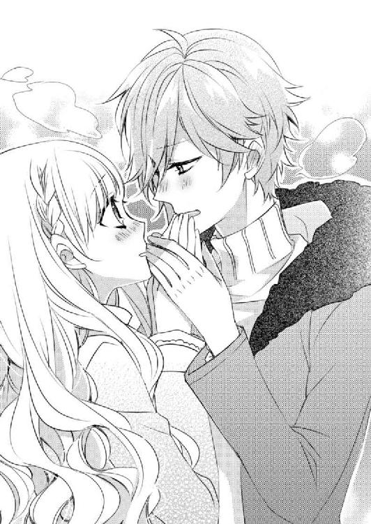
「小鳩君の電話番号知らないです」
「え？ なんで？ 新しい電話番号、メモしておいたよ」
そういえばこの前、メモを渡された記憶がある。あのときは書かれていたアドレスに驚いて......。
「アドレスが、あまりにインパクトがあったので、そのまま丸めて捨てちゃいました」
「もうっ」
苦笑いする乃亜に、小鳩は額に手を添えてため息を吐いた。
「ごめんなさい」
「いいよ。乃亜ちゃんらしい。とりあえず、中に入って温まろう......」
乃亜の手を引き、小鳩は自動ドアの暗証番号を打ち込む。でも自動ドアが開くと「あ、でも......」と、乃亜を見た。
「？」
「僕の部屋に入るのは、恋人に悪い？ どこかお店に行く？」
小鳩は記憶を辿って、近場のお店をピックアップしていく。
小鳩は乃亜の空腹具合を確認しながら幾つかのお店を提案してくれたが、乃亜はそれを断った。
たぶん自分が話したいことは、第三者がいる場所で話すことじゃない。
「小鳩君の部屋に行ってもいいですか？ 二人だけで話がしたいです」
「そう？ じゃあ、中に入って」
小鳩は乃亜の手を引いて中に入ると「今日の打ち合わせでなにかあった？」と、心配そうな顔をした。
なにもなかったわけではないが、それをどう説明すればいいかわからない。
「えっと......とりあえず......。今さらですけど、映画のことごめんなさい」
頭を深く下げる乃亜に、小鳩がキョトンと瞬きをする。
「なにが？」
「あの仕事断ったことで、その後の仕事に影響あったんですよね？」
「ああ。なんだそのことか。あれは僕にとってラッキーな出来事だったから、謝らなくていいよ」
「え？」
「だってなにも言ってくれなかったら、僕は乃亜ちゃんを傷付けていた。そして乃亜ちゃんを好きになることもなかった。......しかも僕には、窮地を好機に変えるだけの実力があった。僕ってラッキーマンだよね」
小鳩に悪戯っぽい笑顔を見せられると、これ以上謝れなくなってしまう。そんな乃亜に、小鳩が「他には？」と、問い掛ける。
「他に......」
「カタログのことでわからないことない？ なにか聞きたいことがあれば、なんでも答えるよ」
乃亜は首を横に振る。
「今日は、ただ小鳩君に会いに来たんです」
乃亜の手を引いてエレベーターに乗り込んだ小鳩は、もう一方の手で階数指定のボタンを押すと、壁にもたれかかり重い息を吐いた。
「......」
「小鳩君？」
やっぱり迷惑だったのだろうか。──心配そうに覗き込む乃亜の目を見て、小鳩が困ったように微笑んだ。
「会いに来てくれて嬉しい。でも乃亜ちゃん......あんまり僕を喜ばせる発言しないでね」
「え......？」
「僕、こう見えても男の子だから、乃亜ちゃんにそんなこと言われちゃうと、やっぱり多少の期待はしちゃうから」
小鳩は乃亜の手を摑む手に力を入れ「もちろん、わかってるよ」と、続ける。
「......」
「僕は君が望むなら、忠実なワンコでいるよ。小説に行き詰まって気分転換したくなった？ おっと......」
乃亜は、小鳩に摑まれていない方の手で小鳩のジャンパーの裾を摑んで引き寄せた。そして自分の方へと体を傾ける小鳩の胸に、額を寄せた。
「小説も、仕事も関係ないです」
「じゃあ、彼氏さんと喧嘩した？」
「......」
小鳩の胸におでこを寄せたまま首を横に振る。
「えっと、じゃあ......」
小鳩は、乃亜が自分に会いに来る理由を探す。
「.........」
乃亜はこの思いをどう言葉にすればいいのかわからない。もどかしい気持ちで顔を上げると、驚くほど近くに小鳩の顔があった。
「......」
「......」
お互いに、お互いの顔の近さに驚いて息を飲んだ。
短い間を置いて、乃亜は引き寄せられるようにつま先立ちになると小鳩にキスをした。
チンッ。と、弾けるようなベルの音がして最上階に着いたエレベーターのドアが開くと、乃亜は、踵を床につけた。
「そういうことなんです」
乃亜は、頰を赤くして俯いた。
つまりそういうことだ。
正樹に対する罪悪感がないわけじゃない。彼を嫌いになる理由がない。
でもどうしても小鳩に会いたくて、会えないのが辛くて、会えば触れたくなる。
そのためになら、どんな代償を払ってもいい。
「恋人がいるのに、小鳩君に触れられたいって思っちゃうんです」
そう打ち明けると、訳も分からず涙が落ちた。
そんな乃亜の震える手を握りしめ、小鳩はエレベーターを降りた。
◇ ◇ ◇
初めて入る小鳩の部屋は、白と黒を基調にまとめられていた。
無言のまま部屋に入った小鳩は、乃亜の手を引き寝室の扉を開けた。
「小鳩君......ちょっと待って」
強く腕を引かれ、突然離された拍子にベッドに倒れ込んだ乃亜は、ベッドの傍らに腰を下ろす小鳩を見つめた。
小鳩は着ていたフードつきのジャケットを床に脱ぎ捨て、首を傾げた。その動きに合わせて、艶やかな髪が流れる。
「なにを、いつまで待てばいいの？」
「......」
その問い掛けに、ベッドの上に体を起こした乃亜は口ごもった。
確かになにをいつまで待って欲しいのか、自分でもわからない。
「乃亜ちゃんがいいって言うまで、いつまででも待つよ」
小鳩は、優しい噓を重ねて、見返りを求めることなく乃亜を守ってきてくれた。
今ここで乃亜が帰りたいと言えば、さっきのキスもなかったことにして、乃亜をすんなり解放してくれるのだろう。
でもそれでは......。
「小鳩君は、それでいいんですか？」
乃亜の問い掛けに、小鳩は迷いなく頷いて返す。そして、右手で乃亜の頰にかかる髪を耳に掛けた。
微かに耳に触れた指先から、小鳩の緊張が伝わってくる。
耳に髪を掛けた小鳩の指が、乃亜の頰に優しく触れる。
一緒に暮らしていた間、簡単に触れられる距離にいたのに、小鳩の方から乃亜に触れたことは数えるほどしかない。
「前にも言ったよね。僕は、勘違いで乃亜ちゃんを傷付けたくないんだ」
呼吸を感じられるほど近い位置で小鳩が話していると、それだけで触れられた場所が熱を帯びる。
「......」
「それに......乃亜ちゃんの方が、失うものが多いから」
──失うもの......。
自分が失うものが、改めて脳裏をかすめた。
正樹、正樹の友人である貴斗、貴斗の会社での仕事。......東京での暮らしを支えてくれているほとんどのものを失わなくてはならない。
それでも、小鳩を求める気持ちが止められない。
「......です」
乃亜は消え入りそうな声で「待たなくていいです」と、呟いた。
「後悔は......するかもしれません。大きな代償を払うことになるのもわかっています。それでも、私は小鳩君に触れられたいんです」
乃亜の告白に、小鳩が深く息を吸った。ヒュウッと、喉の奥で笛のような音が聞こえる。
その息遣いを合図にしたように乃亜が瞼を閉じると、小鳩の唇が、乃亜の唇に触れた。
唇をただ触れ合わせるだけの口付け。
そして小鳩が体重を乃亜に預けてくるのに任せて、二人、ベッドに倒れ込んだ。仰向けに倒れ込む乃亜に寄り添うようにして横たわる小鳩が囁く。
「愛している。乃亜ちゃんだけをずっと愛している」
その言葉を聞けただけでも、自分は今日のことを後悔しないと思った。
「私も......」
そう頷いて、今さらのように、これが恋なのだと理解した。
そんな乃亜の首筋に、小鳩の唇が触れた。
薄く敏感な肌で小鳩の唇の感触を感じると、それだけで肌がぞくぞくと震えてしまう。
「愛している」
小鳩はもう一度そう囁くと、ゆっくりと唇を移動させ、乃亜の耳たぶを甘嚙みした。痛みを感じるほど強く嚙まれたわけではないが、それでもつい体が過剰な反応を示してしまう。
ピクリッと、肩を跳ねさせる乃亜に、小鳩が「くすぐったい？」と、問い掛ける。
「............っ」
この感覚をどう表現したらいいかわからない。
言葉に詰まって上目使いに小鳩を見ると、小鳩が乃亜の額に口付けをして問い掛ける。
「もっと、乃亜ちゃんに触れていい？」
「............うん」
乃亜がコクリと頷くと、小鳩の長い指が乃亜の胸元に触れた。
乃亜の胸の膨らみを撫でた指が、遠慮がちに彼女が着ているブラウスのボタンを外していく。時々素肌に触れる小鳩の指の感触に、乃亜の鼓動が高まっていく。
「乃亜ちゃん......」
名前を呼ばれて視線をあげると、小鳩と目が合った。慈しむ視線に、鼓動がより速くなっていく。
「恥ずかしいから、見ないでください............」
その視線から逃れたくて乃亜が体を横に向けると、小鳩はその動きを利用して、乃亜の服を脱がせ、ブラジャーのホックを外してしまった。
剝き出しになった背中に、小鳩の指が触れた。
「大丈夫だよ。乃亜ちゃんの寝顔も泣き顔も知っているんだから、今さら恥ずかしがらないで」
そう言って肩を押されると、乃亜の体が小鳩の視線に晒される。
「............」
羞恥心から両手で胸を隠そうとしたが、小鳩がその手を上に持ち上げ、乃亜の頭の上で束ねて抑える。
「綺麗だよ」
小鳩はそう囁くと、乃亜の胸元に唇を寄せた。
「乃亜ちゃん、凄くドキドキしている」
「だって......」
こんな姿勢でドキドキしないわけがない。物言いたげな視線を向ける乃亜に、小鳩が「僕もすごくドキドキしている」と、優しい口調で打ち明ける。
「好きな子とこうしていて、緊張しない男はいないよ」
そう言いながら、小鳩は、乃亜の手を摑んでいない方の手を、乃亜の肌に滑らせる。
小鳩は耳、首筋、鎖骨の窪み、胸の膨らみと、滑らかに手を移動させていき、乃亜の穿いているスカートのファスナーに触れた。
「──ぁっ！」
乃亜は、背中がピクリと跳ねてしまう。
「大丈夫。体の力を抜いて」
そう囁きながら、小鳩は丁寧な手つきで乃亜のスカートや下着を脱がせていく。そして乱暴に自分の着ていた衣服を脱ぎ捨てる。
互いに素肌を晒した状態で、小鳩の視線が乃亜に注がれる。
「やだっ」
本当は手で体を隠したいのだが、両手を押さえられていてそれが出来ない。
乃亜は体を捻って小鳩の視線から逃れようとしたが、それより早く小鳩が覆い被さってきて乃亜の動きを封じた。
「愛している」
「うん」
そう囁かれてしまうと、拒めない。乃亜が体の力を抜いたのを感じて、小鳩が乃亜の手を解放した。
片腕をついて隙間を作ると、小鳩の手が乃亜の胸に触れた。
手のひら全体で胸の膨らみを確かめるように、小鳩の手が、乃亜の胸を優しく揉む。その感触に、肌がどうしても緊張してしまう。
「駄目だよ。体の力を抜いて」
「だって......。あっ」
そのまま小鳩に強く胸を揉まれ、乃亜は言葉を詰まらせた。
柔らかく強く、強弱をつけながら胸を揉みしだかれると、肌にムズムズとした熱が生まれる。
小鳩は、乃亜の胸の膨らみを鷲摑みにして、弧を描くようにゆっくりとその感触を手のひら全体で味わう。
柔らかな胸は、小鳩の手の動きそのままにその形を変化させていく。
「小鳩君......」
苦しそうに名前を呼ぶと、小鳩が上半身を起こした。そして再び乃亜の上に覆いかぶさると、すでに硬く浮き立っていた乃亜の胸の先端に唇を寄せる。
小鳩がそれを口に含み、舌で転がす。
「............はぁっ............ぁっん」
乃亜が鼻にかかる甘い声をあげると、小鳩は、そんな乃亜の喘ぎをさらに引き出そうと、ゆっくりと舌を動かしていく。
「あぁ............っ！」
小鳩のねっとりとした舌使いに、肌がざわりと震える。乃亜は、声を震わせえながら、小鳩の髪に自分の指を絡めた。
舌を巧みに使った愛撫に、甘い衝動が込み上げてくる。乃亜がもどかしそうに腰をくねらせると、小鳩はさらに執拗に乃亜の胸に舌を這わせていく。
そうしながら、手で乃亜の腰を撫でた。
触れるか触れないかのギリギリの状態で腰を撫でられると、体の奥がムズムズとして、筆で触れられているような微妙なくすぐったさを感じてしまう。
「くすぐったい」
乃亜が困ったように訴えると、小鳩が「それだけ？」と、悪戯っぽい表情で問いかけてくる。
「あと、体がむずむずしちゃいます」
乃亜の言葉に、小鳩が艶めいた笑みを零した。そして腰を撫でていた手を、足の付け根へと移動させていく。
「──ぁっ！」
小鳩の手の冷たさに、乃亜が小さく喉を鳴らす。
「乃亜ちゃんの肌、温かい」
小鳩が体温を味わうように、ゆっくり乃亜の内ももを撫でていく。その指使いに、肌にぞくぞくとした痺れが走る。
そうしながら舌で乳首を嬲られ、乃亜は切なげに腰をくねらせた。
「やぁぁ............っぁっ」
甘い刺激に、あられもない嬌声が無意識に漏れてしまう。乃亜は、それを悔やむように強く唇を嚙んだ。
チラリと視線を向け、乃亜の表情を確かめた小鳩は、その反応を楽しむように乃亜の乳房全体を唇で愛撫していく。
「うっ..................ぅ...............っ」
声をあげるのが恥ずかしいのに、それが我慢できない。
くすぐったさと気持ち良さとが混ざり合う感覚に、乃亜は甘い声を漏らして首を振った。
「乃亜ちゃん、もっと素直に声を聞かせてよ」
そう囁く小鳩の指が、乃亜の足の付け根へと進んでいく。
指が触れると、クチュリッと湿った音が聞こえた。
「あぁっ.........」
薄々感じてはいたが、自分の体の反応を改めて実感し、羞恥心が込み上げてくる。
小鳩は、恥ずかしくて視線を落とす乃亜の表情を探りながら指を動かしていく。
「乃亜ちゃん、恥ずかしがらないで」
「あ.........や...だ...............っ」
蜜壺の潤いを確かめるようにゆっくり動く指の感触に、乃亜は自分の奥から淫らな熱が溢れ出すのを感じた。
「嫌じゃないはずだよ」
小鳩は、一気に溢れ出す蜜を指に絡めて、艶めかしく指を動かしていく。
そしてその指が硬く膨らんだ肉芽に触れると、抗いようのない淫らな痺れが、乃亜の全身を駆け巡っていく。
「はぁぁっっっ」
乃亜はシーツを摑んで背中を反らせた。
小鳩はその程度の反応ではまだ満足できないと言いたげに、さらに乃亜の蜜壺の奥へと指を沈めていく。
「乃亜ちゃんの中、凄く熱いよ」
淫靡な熱が躰の奥底から溢れ出る感覚に、乃亜は、喉を震わせた。
敏感になっている媚壁を撫でられ、体の芯が熱くなる。乃亜は、苦しそうに枕を引き寄せ抱きしめた。
「やぁ──っ」
喉の奥から紡ぎだされる弱々しい声は、拒んでいるというより、さらなる刺激をねだっているような響きがあった。
その声に煽られたように、小鳩の指がより深い場所へと沈んでいく。
熱く溢れだす愛液の出所を探るように、小鳩の長い指が蠢く。
「小鳩君......私............っ」
正樹以外の誰にも触れさせたことない場所を小鳩に探られる。戸惑いや罪悪感が頭を掠めたが、自分を翻弄する小鳩に「愛している」と、囁かれると、抵抗が出来ない。
──愛している......。
その一言には、生真面目な乃亜の道徳心をねじ伏せてしまうだけの力がある。この感情に抗う術はないのかもしれないと、乃亜は観念した。
「今だけは、僕のことだけを考えて」
「......」
乃亜が無言で頷くと、小鳩がさらに艶めかしく指を動かしていく。乃亜の躊躇いや罪悪感を内側から揉み解すように動く指が、乃亜の思考を停止させてしまう。
「小鳩君............ヤダ......あっ..................っぁ」
「ヤダじゃないよ。乃亜ちゃんの中、凄く熱く濡れている」
小鳩が指を這わせている部分から、確かに濡れた音が聞こえてくる。乃亜は枕を抱きしめる手に力を入れた。
「あぁぁっ......ぁ」
愛液を絡めた指が自分の奥を蹂躙していく感覚に、乃亜は、背中をビクンッと反らせた。奥深くまで沈んだ指は、今度はゆっくり弧を描きながら引き抜かれてゆく。
そして途中まで抜けた指が、すぐにまた深い場所まで沈んでくる。その摩擦に、乃亜の体が震える。
瞼の裏で、白い小さな無数の光がチカチカする。
「あぁぁっ..................いや......ぁ。小鳩君ヤダ......はぁっ............っぁヤダ。熱くて体が溶けちゃぅ......」
いつの間にか一本から二本に増えた指が、じわりじわりと乃亜の体を溶かしていく。そんな錯覚に襲われて、乃亜が泣きそうな声をあげると、不意に小鳩が指を完全に抜き出した。
「あぁ──っ」
その虚脱感に、乃亜が切ない声をあげた。
「挿れてもいい？」
小鳩が、乃亜から枕を取り上げて問い掛けた。
「あぁ......あんっ」
乃亜は目を細めて潤んだ瞳で小鳩を見上げ、小さく頷いた。
甘く漏れる吐息の意味を心得ている小鳩は、自分の下半身に手を伸ばした。
角度を調節しながら、小鳩は自らの硬くなったものをツプツプと粘り気のある水音を立て、じゅうぶんに湿った肉壺に沈めていく。
それが沈み込むにつれ、敏感になっている肉襞が擦れる感覚に乃亜は背中を反らせた。
「はぁっ............！」
乃亜が甘ったるい声をあげると、その声に反応して小鳩のものがピクリッと跳ねた。その反応さえも、乃亜を刺激する。
ゆっくりと沈みながら乃亜の柔壁を撫でる小鳩のものは、さっきの指での愛撫とは比べ物にならない刺激を乃亜に与える。
それは、次第に激しい抽送を始める。
情熱的なまでの小鳩の動きが、乃亜の神経を翻弄していく。
「くうっ..................。くっ」
脚を大きく広げた乃亜に、腰を激しく打ち付ける小鳩は、足搔くように喉を鳴らした。
ぐじゅぐじゅと淫靡な水音を立てながら腰が打ちつけられると、乃亜の感覚が絶頂へと登りつめていく。
背中に回した腕に力を込めると、小鳩の肌がほんのり汗ばんでいるのがわかった。
──小鳩君の汗の匂い。
「............あぁっ」
「くうっ...............」
喘ぎながら小鳩の首筋に触れると、塩気を感じた。
肌だけじゃなく、嗅覚も味覚も、小鳩の存在に満たされていく。
「駄目............小鳩君に溺れそう」
喘ぐように漏れた乃亜の呟きに、小鳩は恍惚の表情を見せ、腰をさらに激しく動かす。
「小鳩君.........もう駄目...............あっ.........っ」
「いいよ。乃亜ちゃん、僕も.........」
キュッと収縮する肉壁を限界まで膨張した肉棒で擦りあげられると、乃亜は自分の子宮が激しく収縮するのを感じ、快楽の渦の中でもがいた。
もう耐えられないという思いと、もっと続けて欲しいという思いが交差する。
乃亜は自分がどちらを求めているのかわからないままもがき、意識が白く弾けるような感覚に背中を弓なりに反らした。
「あぁっ！」
一際高く細い声をあげた乃亜は、自分と同じように絶頂に登りつめた小鳩がトロリとした欲望を吐き出す感覚に熱い吐息を吐いた。
そして小鳩が自分の隣に崩れ込むと、その背中をそっと抱きしめ頰を寄せた。
「乃亜ちゃん、世界で一番愛しているよ」
まどろむ意識の中で、乃亜は、深く頷いた。
そして「私も」と、汗ばんだ背中に口付けをした。
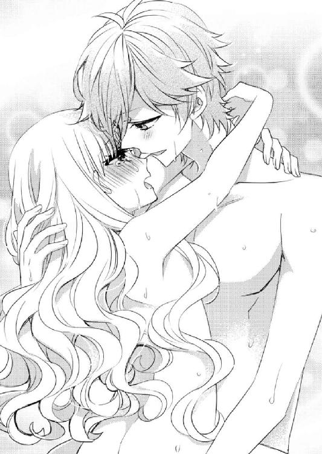
◇ ◇ ◇
翌朝、目が覚めると、ベッドの中で乃亜は小鳩の寝顔を眺めた。
──綺麗。
そしてなにより愛おしい。
そっと頰に触れると、小鳩が薄目を開けた。
「よかった。夢じゃなかった」
乃亜の頰を両手で包んで、小鳩は、ホッと息を吐いた。
「夢じゃないです」
小鳩は乃亜の言葉に頷き、「ねえ、なにか話してよ」と、甘えた声をあげた。
「なにか......って」
「なんでもいいよ。乃亜ちゃんが話したいと思ったことを、そのまま話して」
その言葉に、一緒に暮らした甘く香ばしい日々の記憶が蘇る。
小鳩に聞いて欲しい話について考えると、自然と希一の顔が浮かんだ。
「......友達ができました」
「友達？」
「はい。生まれて初めて、自分から『お友達になって』って声をかけて、友達を作りました」
「すごい。よかったね」
素直に喜んでくれる小鳩に、乃亜は「小鳩君のおかげです」と、礼を言った。
「小鳩君の言葉があったから、成長できたんです」
乃亜は、頰を包む小鳩の手の上に自分の手を重ねた。
「よかった」
そんな乃亜を慈しむように、小鳩は額、鼻、頰とキスを落とし、最後に唇にキスをすると「幸せそうでよかった」と、微笑んだ。
「小鳩君のおかげです」
「それだけで、僕はじゅうぶんだよ」
「え？」
どこか毅然とした小鳩の声に、乃亜は、二人の間に線を引かれたような気がした。そんな乃亜の不安を読み取り、小鳩が優しい声で諭す。
「大丈夫。誰にも言わないから。乃亜ちゃんは、乃亜ちゃんの大事な人たちのそばで、今までどおり幸せに暮らしなよ」
今さら地元に帰れない乃亜にとって正樹や貴斗に与えられているものの重みを、頭のいい小鳩は、言葉で確認することなく推し測っているのだろう。
「.........」
「もちろん乃亜ちゃんが、ここで暮らしたいって言うなら、僕は喜んで受け入れるよ。でもきっと乃亜ちゃんは、そんな生き方を望んでないでしょ？ だから勇気を出して、自分から友達を作ったんだよね」
そのとおりだ。正樹との関係は、自分が守られて、与えられているだけのような気がしていた。だから感謝や気遣いが先に出てしまって、対等に愛情を注ぐことが出来なかった。
このまま小鳩のところに逃げ込んでしまえば、自分は今のようなまっすぐな思いで小鳩を愛せなくなってしまうのかもしれない。
──そんなのヤダ。
乃亜は小鳩の手に自分の手を重ね、ゆっくり頷いた。そして小鳩の頰を両手で包む。
「ごめんなさい。.........少しだけ時間をください」
エピローグ コバトクン ドット メイワク
「最悪......」
「......ですね」
乃亜は、自分に向かって大きなため息を吐くマリに、負けじとため息を吐いた。
──私も、朝から中井さんに絡まれて最悪です。
さすがにため息の理由を、言葉にする勇気はない。
そんな乃亜のため息をどう理解したのか、マリは嬉しそうに乃亜の手を取った。
「ほんと、今年の新入社員ハズレよね」
「ああ......」
「それ以前に、幾つ年が離れていると思っているんだ。ストライクゾーン広すぎるだろ」
呆れ顔の希一が、茶々を入れた。
「うるさい。幾つ違っても、イケメンが入社すれば、目の保養になるでしょ。テンション上がるのよ」
マリが希一を睨む。
その視線に希一は、お手上げのポーズを取って自分のデスクに向き直った。
「真面目にあり得ない」
マリは、企画部の主任を交えて貴斗と話をしている新入社員に視線を送り、もう一度ため息を吐き、自分の席へと戻っていった。
今年唯一の新入社員である彼は、背が高くて猫背で、大きな出っ歯が「ゲゲゲの鬼太郎」のねずみ男を連想させる。親しみやすいと言えなくもないのだが、どうにもマリは気に入らないらしい。
しかも企画部に配属される予定なので、敵意剝き出しになっている。
「最近、中井と仲良くしてるじゃん」
マリが去ったのを確認して、希一が話しかけてきた。
乃亜は、苦笑いを返す。
「仲良くはないですよ。でも敵対しなきゃいけないほど、悪い人でもないことに気付きました」
最近になってやっと理解できてきたが、マリは、良くも悪くも単純で、自分の利益しか頭にない。しかも恐ろしく短期的な視野でしか世間を見ていないので、簡単に癇癪を起こす代わりに、驚くほど早く怒っていたことを忘れてしまう。
乃亜が言われて気にしていた言葉を、言った本人が忘れてしまうのだから、気にしている方がバカらしい。
「大人になったじゃん」
ニヤリと笑う希一に、乃亜はふふんと笑う。
貴斗が社長室に引き返すと、企画部の主任が、ねずみ男君を連れて近づいてきた。
そして企画部全員の名前を紹介されると「きゃぁっ」と、ねずみ男君が声をあげて、乃亜に駆け寄った。
──近くで見ると一段と大きい.........。
「今年のバレンタインフェアのパンフレットのショートストーリーを書いたの、小糸さんなんですよねぇ」
「はい」
圧迫感に背中を反らせる乃亜の手を、ねずみ男が握りしめる。その指先が、やけに綺麗に手入れされている。
「凄いぃ。お会いしたかったんですよぉ」
姿から連想していたよりもずっとキーの高いねずみ男君の声に、乃亜は「ん？」と、希一を見た。しかも言葉尻にハートマークがついていそうな、甘えた話し方だ。
乃亜の視線を受け止めた希一は、ねずみ男君の視界に入らない位置に背中を反らし、左頰に右手の甲を添える。そして声を出さずに「おかま？」と、口を動かした。
──ああ......。
またマリが荒れる。そう思ってため息を漏らす乃亜の手を、ねずみ男君が握る。
「あのショートストーリー凄く良かったぁ。笹原ノアの小説みたいで、心が温かくなったわぁ」
「そう......ですか」
「そういえば笹原ノアの新作ぅ、淡海出版社の文芸雑誌で今月発表されるの知ってますかぁ？」
「知っています。今日発売ですよね」
「ええ。今日さっそく帰りに買って帰るつもりなの」
可愛らしく首をかしげるねずみ男君に、さらりととぼけ、乃亜は儀礼的な挨拶を口にして手を振りほどいた。
ねずみ男君は、今度は隣に座る希一の手を持って挨拶を始めた。
──長かったな......。
文芸誌の発売日が今日だったことを改めて思い出した乃亜は、そっと息を漏らした。
小鳩の家に泊まった朝、小鳩に「少しだけ時間をください」と話した乃亜は、時間をかけて正樹と別れ話をした。
長い話し合いの末に別れを受け入れてくれた正樹は、別れる条件として乃亜に「これからも、笹原ノアのファンであり続けたい。そうなれるように努力をして欲しい」と言った。
それが正樹の願いなら、それを叶えずに小鳩と一緒になるわけにはいかない。だから小説を完成させ、満足できる仕上がりだと思ったからこそ正樹にメールで原稿を送った。
正樹から小説に関する感想などが送られてくることはなかったけれど、送られた原稿は正樹の手を介して、文芸誌の担当者に渡され、数回の加筆修正を加えて雑誌に掲載されることになった。雑誌に掲載されることは、実家の両親にも伝えてある。
「小糸っ！」
「はいっ」
一度社長室に引き返していた貴斗が、顔をのぞかせ手招きをした。そしてまたすぐに自室に引き返していった。
乃亜は社長室に向かいながら、オフィス全体に視線を巡らせ、愛おしげに目を細めた。
──一度失う覚悟をしていたからこそ、この全てが愛おしい。
正樹と別れるとき、会社を辞める覚悟をしていた。でも乃亜が辞表を出すと、貴斗は、その必要はないとそれを破り捨てた。
乃亜はフロアを見渡して、その日のことを思い出した。
◇ ◇ ◇
「そもそも私を雇ったのって、正樹さんの恋人だからですか？」
小鳩とのことを全て打ち明け乃亜がそう問いかけると、貴斗は「そうだな」と頷いた。わかっていたはずなのに、その答えに落胆の気持ちを隠せなかった。
そんな乃亜に、貴斗が薄く微笑んだ。
「言っとくが、俺は正樹がラグビーをしていなかったら、友達にならなかった。見るからに真面目なアイツと、気が合うとは思えなかったからな。だがラグビーを切っ掛けに話してみれば、意外にも意気投合して今に至る」
「............」
「人と人が出会って仲良くなるには、なんらかのきっかけがあるんだよ。だけどきっかけは、きっかけでしかない。その先は自分が積み重ねてきたことの結果だ」
「貴斗さん......」
「我が社にお前は必要な存在だ。だから、ここに残って欲しい」
そう頭をさげる貴斗に、乃亜は、苦しんでいるだけのように思えた日々の中で、いつの間にか、自分の手で自分の居場所を作り上げていたことを教えられた。
そんな乃亜に貴斗は、小鳩と出会ってしばらくした頃から、こうなることを予感していたと付け加えた。
◇ ◇ ◇
短いノックをして社長室のドアを開けると、デスクに座っていた貴斗が「これを見てみろ」と、自分のパソコンを顎でさし示した。
「.........？」
近寄って覗き込むと、画面にメールが表示されていた。
『笹原ノアの新作を読みました。感動しました。
これからはファンとして、幸せを願っています。
そう彼女に伝えてください。』
差出人の名前は正樹だった。
乃亜に直接メールすることなく、名前ではなく「彼女」と呼ぶ。それが正樹と乃亜の間に生じた距離を示している。なにかを得るために失ってしまう関係もあるのだと、改めて乃亜はなにも着けていない左手首に視線を落とした。
大きな代償だったけれど、それでも自分を止められなかった。
「頑張ったな」
頭を撫でる手の暖かさに、泣きそうになった。
「まあ人の気持ちだけは、どうにもならんよ。......自分では気付いていなかったかもしれないけど、小僧の仕事を受けてから、乃亜ちゃん、どんどん変わってきてた。もちろんいい意味で。正樹の影に隠れるようにして生きてきた今までの乃亜ちゃんは、どこか危うげで脆そうで、心配で目が離せなかった」
「そんな風に思っていたんですか？」
想像もしていなかった自分への感想に驚く乃亜に、貴斗は「イヤ、気分的にはほとんどお父さんだよ」と、頭を搔いた。
「でも小僧に出会ってからの乃亜ちゃんは、喜怒哀楽がはっきり見えて、生きているって感じがして、安心できた。だから変わっていく乃亜ちゃんを止められなかった。......正樹の親友としては最低だけどな」
「......」
「小僧には連絡したのか？」
「まだです」
「じゃあ、今すぐ電話してやれ」
貴斗の意見に、乃亜は困り顔で肩をすくめる。
「電話番号知らないから無理です」
「なに？ なんでだ？ 付き合っているんじゃないのか？」
「まだ付き合っていません。連絡も取っていません。だって正樹さんに認められてないのに、連絡なんてできないですよ」
それが当然と答える乃亜に、貴斗は、理解できないと眉を寄せる。
「はあぁ？ なに清純なことやってんだ？ とっくにやりまくっているのかと思ってた」
「その発言......セクハラです」
大げさに眉を寄せる乃亜に、貴斗は楽しそうに笑った。そしてすぐに、いたわりの表情を浮かべた。
「じゃあ、小僧に連絡できないのか？」
心配する貴斗に乃亜は「でもアドレスなら、忘れることありませんから大丈夫です」と、微笑んだ。
「なんだそれ。どんなアドレスだよ」
「内緒です」
迷惑なくらい愛おしい。
乃亜は、舌の上で飴を転がすように、声を出さずに小鳩のアドレスを唱えた。
あとがき
はじめまして。この度、蜜夢文庫様に仲間入りさせていただいた冬野まゆと申します。
『冬野』と書いて『とうの』と読みます。よかったら、覚えてください。
普段は、元気なラブコメを書かせていただくことが多いです。
第８回らぶドロップス恋愛小説コンテストで、この『小鳩君ドット迷惑』で優秀賞受賞作をいただいてから、数年が経ちました。
『小鳩君ドット迷惑』は、私が初めて書いた長編の恋愛小説で、個人的に思い入れの強い作品でした。だから書籍化のお話をいただけて、すごく嬉しかったです。
でも書籍化に向けた準備のためにいざ文章を読み返してみると、自分の文章のつたなさなに赤面の日々でした。本気で、「書籍化、やっぱりいいです......」って、連絡しようかと思ったくらいです（汗）。
それで「これは喜ぶべきチャンス」と思い、一生懸命加筆修正させていただきました（それでも、まだまだ発展途上の文章力ですが......）。
電子書籍のときには上手く回収しきれず、配信されてからもやもやしていた伏線も今回修正することができ、ホッとしています。
恥ずかしさに耐えてそれができたのは、私自身が、ヒーローの小鳩君の一途な性格が大好きだからだと思います。
小鳩君、名前に「鳥」が入っているのに、性格は、完全に「犬」ですね（笑）。
話の中で小鳩君が「君を嫌いな人のために、不幸にならないで」といったセリフを口にしますが、これは私自身が、人間関係に悩んでいた頃にたどり着いた結論です。
もし人間関係で嫌な思いをしている人がいたら、そんな風に考えてみるキッカケになるといいなと思います。
以前、電子書籍を読んでくださった方も、読んでいただいたことのない方も、もし気が向いたら、一途な小鳩君の恋の行く末を見守ってあげてください。
そして読んでくださった方、書籍化のチャンスをくださった方、担当さん、イラストを書いてくださったヤミ香さん、心からありがとうございます。
（人見知りが激しくＳＮＳのアカウントを作っていないので、この場を借りてお礼を言わせてください）
そしてまた他の作品で、皆様のお目にかかれることができたらと嬉しいです。
冬野まゆ
Story
冬野まゆ
とうの まゆ
関西エリア出身。
子供の頃から読書好き。
趣味がこうじて、読むだけじゃなく、自分でも小説を書く日々。
『小鳩君ドット迷惑』で第8回らぶドロップス恋愛小説コンテスト優秀賞を受賞。
最近の楽しみは、静かに本を読めるカフェを探すことです。
Illustration
ヤミ香
やみか
関東在住。6月17日生まれ。
フリーで漫画や挿絵やソシャゲなど描いてます。
現在『pisca-pisca』にて「魔法少年あまち☆カナメ」コミカライズ連載中です。
よろしくお願いします。
TwitterID→@38ymk0
小鳩君 ドット 迷惑 押しかけ同居人は人気俳優!?［電子書籍版］
発行日 ２０１６年５月１日 発行
著 者 冬野まゆ
デザイン 百足屋ユウコ＋カナイアヤコ（ムシカゴグラフィクス）
発行者 後藤明信
発行所 株式会社竹書房
〒１０２－００７２
東京都千代田区飯田橋２－７－３
ＴＥＬ ０３－３２６４－１５７６
ＵＲＬ http://www.takeshobo.co.jp
データ加工 株式会社暁印刷
 Mayu Fuyuno 2016
Mayu Fuyuno 2016
本書の一部あるいは全部を著作権者および株式会社竹書房に無断で複写・複製すること、および放送・上演・公衆送信（ホームページ上への掲載を含む）などは、法律で認められた場合を除き著作権の侵害となります。